<!DOCTYPE html>

<html>
  <head>
    <meta charset="utf-8" />
    <meta name="viewport" content="width=device-width, initial-scale=1.0" />
    <title>Crop type mapping with Deep Learning &#8212; Deep learning with TensorFlow</title>
    
  <link href="../_static/css/theme.css" rel="stylesheet" />
  <link href="../_static/css/index.c5995385ac14fb8791e8eb36b4908be2.css" rel="stylesheet" />

    
  <link rel="stylesheet"
    href="../_static/vendor/fontawesome/5.13.0/css/all.min.css">
  <link rel="preload" as="font" type="font/woff2" crossorigin
    href="../_static/vendor/fontawesome/5.13.0/webfonts/fa-solid-900.woff2">
  <link rel="preload" as="font" type="font/woff2" crossorigin
    href="../_static/vendor/fontawesome/5.13.0/webfonts/fa-brands-400.woff2">

    
      

    
    <link rel="stylesheet" href="../_static/pygments.css" type="text/css" />
    <link rel="stylesheet" href="../_static/sphinx-book-theme.css?digest=c3fdc42140077d1ad13ad2f1588a4309" type="text/css" />
    <link rel="stylesheet" type="text/css" href="../_static/togglebutton.css" />
    <link rel="stylesheet" type="text/css" href="../_static/copybutton.css" />
    <link rel="stylesheet" type="text/css" href="../_static/mystnb.css" />
    <link rel="stylesheet" type="text/css" href="../_static/sphinx-thebe.css" />
    <link rel="stylesheet" type="text/css" href="../_static/panels-main.c949a650a448cc0ae9fd3441c0e17fb0.css" />
    <link rel="stylesheet" type="text/css" href="../_static/panels-variables.06eb56fa6e07937060861dad626602ad.css" />
    
  <link rel="preload" as="script" href="../_static/js/index.1c5a1a01449ed65a7b51.js">

    <script id="documentation_options" data-url_root="../" src="../_static/documentation_options.js"></script>
    <script src="../_static/jquery.js"></script>
    <script src="../_static/underscore.js"></script>
    <script src="../_static/doctools.js"></script>
    <script src="../_static/togglebutton.js"></script>
    <script src="../_static/clipboard.min.js"></script>
    <script src="../_static/copybutton.js"></script>
    <script >var togglebuttonSelector = '.toggle, .admonition.dropdown, .tag_hide_input div.cell_input, .tag_hide-input div.cell_input, .tag_hide_output div.cell_output, .tag_hide-output div.cell_output, .tag_hide_cell.cell, .tag_hide-cell.cell';</script>
    <script src="../_static/sphinx-book-theme.12a9622fbb08dcb3a2a40b2c02b83a57.js"></script>
    <script async="async" src="https://unpkg.com/thebe@0.5.1/lib/index.js"></script>
    <script >
        const thebe_selector = ".thebe"
        const thebe_selector_input = "pre"
        const thebe_selector_output = ".output"
    </script>
    <script async="async" src="../_static/sphinx-thebe.js"></script>
    <link rel="shortcut icon" href="../_static/ds.png"/>
    <link rel="index" title="Index" href="../genindex.html" />
    <link rel="search" title="Search" href="../search.html" />
    <link rel="next" title="Concluding remarks" href="conclusion.html" />
    <link rel="prev" title="Introduction" href="intro.html" />
    <meta name="viewport" content="width=device-width, initial-scale=1" />
    <meta name="docsearch:language" content="en" />
    
  </head>
  <body data-spy="scroll" data-target="#bd-toc-nav" data-offset="80">
    
    <div class="container-fluid" id="banner"></div>

    

    <div class="container-xl">
      <div class="row">
          
<div class="col-12 col-md-3 bd-sidebar site-navigation show" id="site-navigation">
    
        <div class="navbar-brand-box">
    <a class="navbar-brand text-wrap" href="../index.html">
      
        <!-- `logo` is deprecated in Sphinx 4.0, so remove this when we stop supporting 3 -->
        
      
      
      
      
      
      <h1 class="site-logo" id="site-title">Deep learning with TensorFlow</h1>
      
    </a>
</div><form class="bd-search d-flex align-items-center" action="../search.html" method="get">
  <i class="icon fas fa-search"></i>
  <input type="search" class="form-control" name="q" id="search-input" placeholder="Search this book..." aria-label="Search this book..." autocomplete="off" >
</form><nav class="bd-links" id="bd-docs-nav" aria-label="Main">
    <div class="bd-toc-item active">
        <ul class="current nav bd-sidenav">
 <li class="toctree-l1">
  <a class="reference internal" href="intro.html">
   Introduction
  </a>
 </li>
 <li class="toctree-l1 current active">
  <a class="current reference internal" href="#">
   Crop type mapping with Deep Learning
  </a>
 </li>
 <li class="toctree-l1">
  <a class="reference internal" href="conclusion.html">
   Concluding remarks
  </a>
 </li>
 <li class="toctree-l1">
  <a class="reference internal" href="appendix.html">
   Appendix
  </a>
 </li>
</ul>

    </div>
</nav> <!-- To handle the deprecated key -->

<div class="navbar_extra_footer">
  Powered by <a href="https://jupyterbook.org">Jupyter Book</a>
</div>

</div>


          


          
<main class="col py-md-3 pl-md-4 bd-content overflow-auto" role="main">
    
    <div class="topbar container-xl fixed-top">
    <div class="topbar-contents row">
        <div class="col-12 col-md-3 bd-topbar-whitespace site-navigation show"></div>
        <div class="col pl-md-4 topbar-main">
            
            <button id="navbar-toggler" class="navbar-toggler ml-0" type="button" data-toggle="collapse"
                data-toggle="tooltip" data-placement="bottom" data-target=".site-navigation" aria-controls="navbar-menu"
                aria-expanded="true" aria-label="Toggle navigation" aria-controls="site-navigation"
                title="Toggle navigation" data-toggle="tooltip" data-placement="left">
                <i class="fas fa-bars"></i>
                <i class="fas fa-arrow-left"></i>
                <i class="fas fa-arrow-up"></i>
            </button>
            
            
<div class="dropdown-buttons-trigger">
    <button id="dropdown-buttons-trigger" class="btn btn-secondary topbarbtn" aria-label="Download this page"><i
            class="fas fa-download"></i></button>

    <div class="dropdown-buttons">
        <!-- ipynb file if we had a myst markdown file -->
        
        <!-- Download raw file -->
        <a class="dropdown-buttons" href="../_sources/docs/deeplearning_crop_segmentation.ipynb"><button type="button"
                class="btn btn-secondary topbarbtn" title="Download source file" data-toggle="tooltip"
                data-placement="left">.ipynb</button></a>
        <!-- Download PDF via print -->
        <button type="button" id="download-print" class="btn btn-secondary topbarbtn" title="Print to PDF"
            onClick="window.print()" data-toggle="tooltip" data-placement="left">.pdf</button>
    </div>
</div>

            <!-- Source interaction buttons -->

<div class="dropdown-buttons-trigger">
    <button id="dropdown-buttons-trigger" class="btn btn-secondary topbarbtn"
        aria-label="Connect with source repository"><i class="fab fa-github"></i></button>
    <div class="dropdown-buttons sourcebuttons">
        <a class="repository-button"
            href="https://github.com/developmentseed/servir-amazonia-ml/"><button type="button" class="btn btn-secondary topbarbtn"
                data-toggle="tooltip" data-placement="left" title="Source repository"><i
                    class="fab fa-github"></i>repository</button></a>
        <a class="issues-button"
            href="https://github.com/developmentseed/servir-amazonia-ml//issues/new?title=Issue%20on%20page%20%2Fdocs/deeplearning_crop_segmentation.html&body=Your%20issue%20content%20here."><button
                type="button" class="btn btn-secondary topbarbtn" data-toggle="tooltip" data-placement="left"
                title="Open an issue"><i class="fas fa-lightbulb"></i>open issue</button></a>
        <a class="edit-button" href="https://github.com/developmentseed/servir-amazonia-ml/edit/main/ds_book/docs/deeplearning_crop_segmentation.ipynb"><button
                type="button" class="btn btn-secondary topbarbtn" data-toggle="tooltip" data-placement="left"
                title="Edit this page"><i class="fas fa-pencil-alt"></i>suggest edit</button></a>
    </div>
</div>

            <!-- Full screen (wrap in <a> to have style consistency -->

<a class="full-screen-button"><button type="button" class="btn btn-secondary topbarbtn" data-toggle="tooltip"
        data-placement="bottom" onclick="toggleFullScreen()" aria-label="Fullscreen mode"
        title="Fullscreen mode"><i
            class="fas fa-expand"></i></button></a>

            <!-- Launch buttons -->

<div class="dropdown-buttons-trigger">
    <button id="dropdown-buttons-trigger" class="btn btn-secondary topbarbtn"
        aria-label="Launch interactive content"><i class="fas fa-rocket"></i></button>
    <div class="dropdown-buttons">
        
        <a class="binder-button" href="https://mybinder.org/v2/gh/developmentseed/servir-amazonia-ml/main?urlpath=tree/ds_book/docs/deeplearning_crop_segmentation.ipynb"><button type="button"
                class="btn btn-secondary topbarbtn" title="Launch Binder" data-toggle="tooltip"
                data-placement="left">Binder</button></a>
        
        
        
        <a class="colab-button" href="https://colab.research.google.com/github/developmentseed/servir-amazonia-ml/blob/main/ds_book/docs/deeplearning_crop_segmentation.ipynb"><button type="button" class="btn btn-secondary topbarbtn"
                title="Launch Colab" data-toggle="tooltip" data-placement="left">Colab</button></a>
        
        
    </div>
</div>

        </div>

        <!-- Table of contents -->
        <div class="d-none d-md-block col-md-2 bd-toc show">
            
            <div class="tocsection onthispage pt-5 pb-3">
                <i class="fas fa-list"></i> Contents
            </div>
            <nav id="bd-toc-nav" aria-label="Page">
                <ul class="visible nav section-nav flex-column">
 <li class="toc-h1 nav-item toc-entry">
  <a class="reference internal nav-link" href="#">
   Crop type mapping with Deep Learning
  </a>
  <ul class="visible nav section-nav flex-column">
   <li class="toc-h2 nav-item toc-entry">
    <a class="reference internal nav-link" href="#specific-concepts-that-will-be-covered">
     Specific concepts that will be covered
    </a>
    <ul class="nav section-nav flex-column">
     <li class="toc-h3 nav-item toc-entry">
      <a class="reference internal nav-link" href="#general-workflow">
       General Workflow
      </a>
     </li>
    </ul>
   </li>
   <li class="toc-h2 nav-item toc-entry">
    <a class="reference internal nav-link" href="#setup-notebook">
     Setup Notebook
    </a>
    <ul class="nav section-nav flex-column">
     <li class="toc-h3 nav-item toc-entry">
      <a class="reference internal nav-link" href="#enabling-gpu">
       Enabling GPU
      </a>
     </li>
     <li class="toc-h3 nav-item toc-entry">
      <a class="reference internal nav-link" href="#check-out-the-data">
       Check out the data
      </a>
     </li>
    </ul>
   </li>
  </ul>
 </li>
 <li class="toc-h1 nav-item toc-entry">
  <a class="reference internal nav-link" href="#raster-processing">
   Raster processing
  </a>
  <ul class="visible nav section-nav flex-column">
   <li class="toc-h2 nav-item toc-entry">
    <a class="reference internal nav-link" href="#this-section-entails-processing-the-raw-raster-composites-and-is-optional-as-the-ml-ready-tiled-dataset-is-written-to-a-shared-drive-folder-as-you-ll-see-in-the-section-titled-read-into-tensorflow-datasets">
     This section entails processing the raw raster composites and is optional, as the ML-ready tiled dataset is written to a shared drive folder, as you’ll see in the section titled “Read into TensorFlow datasets.”
    </a>
   </li>
   <li class="toc-h2 nav-item toc-entry">
    <a class="reference internal nav-link" href="#following-are-some-helper-functions">
     Following are some helper functions
    </a>
    <ul class="nav section-nav flex-column">
     <li class="toc-h3 nav-item toc-entry">
      <a class="reference internal nav-link" href="#get-the-optical-spectral-index-and-label-mask-images">
       Get the optical, spectral index and label mask images.
      </a>
     </li>
     <li class="toc-h3 nav-item toc-entry">
      <a class="reference internal nav-link" href="#color-correction-for-the-optical-composite">
       Color correction for the optical composite.
      </a>
     </li>
     <li class="toc-h3 nav-item toc-entry">
      <a class="reference internal nav-link" href="#relevant-spectral-indices">
       Relevant spectral indices
      </a>
     </li>
     <li class="toc-h3 nav-item toc-entry">
      <a class="reference internal nav-link" href="#if-you-are-rasterizing-the-labels-from-a-vector-file-e-g-geojson-or-shapefile">
       If you are rasterizing the labels from a vector file (e.g. GeoJSON or Shapefile)
      </a>
     </li>
     <li class="toc-h3 nav-item toc-entry">
      <a class="reference internal nav-link" href="#write-the-processed-rasters-to-file">
       Write the processed rasters to file
      </a>
     </li>
    </ul>
   </li>
   <li class="toc-h2 nav-item toc-entry">
    <a class="reference internal nav-link" href="#processing-the-rasters">
     Processing the rasters
    </a>
   </li>
   <li class="toc-h2 nav-item toc-entry">
    <a class="reference internal nav-link" href="#read-into-tensorflow-datasets">
     Read into tensorflow datasets
    </a>
   </li>
   <li class="toc-h2 nav-item toc-entry">
    <a class="reference internal nav-link" href="#visualize-the-data">
     Visualize the data
    </a>
   </li>
   <li class="toc-h2 nav-item toc-entry">
    <a class="reference internal nav-link" href="#read-the-tiles-into-tensors">
     Read the tiles into tensors
    </a>
   </li>
   <li class="toc-h2 nav-item toc-entry">
    <a class="reference internal nav-link" href="#define-the-model">
     Define the model
    </a>
   </li>
   <li class="toc-h2 nav-item toc-entry">
    <a class="reference internal nav-link" href="#train-the-model">
     Train the model
    </a>
    <ul class="nav section-nav flex-column">
     <li class="toc-h3 nav-item toc-entry">
      <a class="reference internal nav-link" href="#fit-and-view">
       Fit and View
      </a>
     </li>
     <li class="toc-h3 nav-item toc-entry">
      <a class="reference internal nav-link" href="#save-model-to-file">
       Save model to file
      </a>
     </li>
    </ul>
   </li>
   <li class="toc-h2 nav-item toc-entry">
    <a class="reference internal nav-link" href="#make-predictions">
     Make predictions
    </a>
    <ul class="nav section-nav flex-column">
     <li class="toc-h3 nav-item toc-entry">
      <a class="reference internal nav-link" href="#single-image-example">
       Single image example
      </a>
     </li>
     <li class="toc-h3 nav-item toc-entry">
      <a class="reference internal nav-link" href="#multi-image-example">
       Multi image example
      </a>
     </li>
    </ul>
   </li>
   <li class="toc-h2 nav-item toc-entry">
    <a class="reference internal nav-link" href="#evaluate-model">
     Evaluate Model
    </a>
   </li>
  </ul>
 </li>
</ul>

            </nav>
        </div>
    </div>
</div>
    <div id="main-content" class="row">
        <div class="col-12 col-md-9 pl-md-3 pr-md-0">
        
              <div>
                
  <div class="section" id="crop-type-mapping-with-deep-learning">
<h1>Crop type mapping with Deep Learning<a class="headerlink" href="#crop-type-mapping-with-deep-learning" title="Permalink to this headline">¶</a></h1>
<blockquote>
<div><p>A guide for using deep-learning based semantic segmentation to map crop types in satellite imagery.</p>
</div></blockquote>
<p>In this tutorial we will learn how to segment images according to a set of classes. <strong>Segmentation</strong>  refers to the process of partitioning an image into groups of pixels that identify with a target class (the foreground) or the background.</p>
<p>Specifically, in this tutorial we will be using data from two reference datasets, Imaflora and Para, depicting land use classifications of relevant areas in the Amazon.</p>
<p>We will pair the reference data with a Planet 5 meter composite made from data available as part of the NICFI program. Our task will be to predict the crop types in an image on a pixel-wise basis.</p>
<div class="section" id="specific-concepts-that-will-be-covered">
<h2>Specific concepts that will be covered<a class="headerlink" href="#specific-concepts-that-will-be-covered" title="Permalink to this headline">¶</a></h2>
<p>In the process, we will build practical experience and develop intuition around the following concepts:</p>
<ul class="simple">
<li><p><strong><a class="reference external" href="https://keras.io/getting-started/functional-api-guide/">Functional API</a></strong> - we will be implementing UNet, a convolutional network model classically used for biomedical image segmentation with the Functional API.</p>
<ul>
<li><p>This model has layers that require multiple input/outputs. This requires the use of the functional API</p></li>
<li><p>Check out the original <a class="reference external" href="https://arxiv.org/abs/1505.04597">paper</a>,
U-Net: Convolutional Networks for Biomedical Image Segmentation by Olaf Ronneberger!</p></li>
</ul>
</li>
<li><p><strong>Loss Functions and Metrics</strong> - We’ll implement the <strong>Sparse Categorical <a class="reference external" href="https://focal-loss.readthedocs.io/en/latest/">focal loss</a> function</strong>
and <strong>accuracy</strong>. We’ll also generate confusion matrices during evaluation to judge how well the model performs.</p></li>
<li><p><strong>Saving and loading Keras models</strong> - We’ll save our best model to file. When we want to perform inference/evaluate our model in the future, we can load the model file.</p></li>
</ul>
<div class="section" id="general-workflow">
<h3>General Workflow<a class="headerlink" href="#general-workflow" title="Permalink to this headline">¶</a></h3>
<ol class="simple">
<li><p>Load image and label datasets from Google Drive</p></li>
<li><p>Compute spectral indices useful for crop type mapping</p></li>
<li><p>Visualize data/perform some exploratory data analysis</p></li>
<li><p>Set up data pipeline and preprocessing</p></li>
<li><p>Build model</p></li>
<li><p>Train model</p></li>
<li><p>Test model</p></li>
<li><p>Evaluate model</p></li>
</ol>
<p><strong>Audience:</strong> This post is geared towards intermediate users who are comfortable with basic machine learning concepts.</p>
<p><strong>Time Estimated</strong>: 60-120 min</p>
</div>
</div>
<div class="section" id="setup-notebook">
<h2>Setup Notebook<a class="headerlink" href="#setup-notebook" title="Permalink to this headline">¶</a></h2>
<div class="cell docutils container">
<div class="cell_input docutils container">
<div class="highlight-ipython3 notranslate"><div class="highlight"><pre><span></span><span class="c1"># install required libraries</span>
<span class="o">!</span>pip install -q rasterio
<span class="o">!</span>pip install -q geopandas
<span class="o">!</span>pip install git+https://github.com/tensorflow/examples.git
<span class="o">!</span>pip install -U tfds-nightly
<span class="o">!</span>pip install focal-loss
<span class="o">!</span>pip install tensorflow-addons<span class="o">==</span><span class="m">0</span>.8.3
</pre></div>
</div>
</div>
<div class="cell_output docutils container">
<div class="output stream highlight-myst-ansi notranslate"><div class="highlight"><pre><span></span>     |████████████████████████████████| 19.3 MB 138 kB/s 
     |████████████████████████████████| 1.0 MB 8.3 MB/s 
     |████████████████████████████████| 15.4 MB 30.0 MB/s 
     |████████████████████████████████| 6.3 MB 52.0 MB/s 
?25hCollecting git+https://github.com/tensorflow/examples.git
  Cloning https://github.com/tensorflow/examples.git to /tmp/pip-req-build-fqulj0vv
  Running command git clone -q https://github.com/tensorflow/examples.git /tmp/pip-req-build-fqulj0vv
Requirement already satisfied: absl-py in /usr/local/lib/python3.7/dist-packages (from tensorflow-examples===28be03adf8a65f6961ef1743869f748b255006c7-) (0.12.0)
Requirement already satisfied: six in /usr/local/lib/python3.7/dist-packages (from tensorflow-examples===28be03adf8a65f6961ef1743869f748b255006c7-) (1.15.0)
Building wheels for collected packages: tensorflow-examples
  Building wheel for tensorflow-examples (setup.py) ... ?25l?25hdone
  Created wheel for tensorflow-examples: filename=tensorflow_examples-28be03adf8a65f6961ef1743869f748b255006c7_-py3-none-any.whl size=268216 sha256=565c5cf7768190abbd731f271cfda9c6ffac3fc10a63a3c6afd89d9d5e89b479
  Stored in directory: /tmp/pip-ephem-wheel-cache-3_9rbmp_/wheels/eb/19/50/2a4363c831fa12b400af86325a6f26ade5d2cdc5b406d552ca
<span class=" -Color -Color-Yellow">  WARNING: Built wheel for tensorflow-examples is invalid: Metadata 1.2 mandates PEP 440 version, but &#39;28be03adf8a65f6961ef1743869f748b255006c7-&#39; is not</span>
Failed to build tensorflow-examples
Installing collected packages: tensorflow-examples
    Running setup.py install for tensorflow-examples ... ?25l?25hdone
<span class=" -Color -Color-Yellow">  DEPRECATION: tensorflow-examples was installed using the legacy &#39;setup.py install&#39; method, because a wheel could not be built for it. A possible replacement is to fix the wheel build issue reported above. You can find discussion regarding this at https://github.com/pypa/pip/issues/8368.</span>
Successfully installed tensorflow-examples-28be03adf8a65f6961ef1743869f748b255006c7-
Collecting tfds-nightly
  Downloading tfds_nightly-4.4.0.dev202111090109-py3-none-any.whl (4.0 MB)
     |████████████████████████████████| 4.0 MB 9.9 MB/s 
?25hRequirement already satisfied: dill in /usr/local/lib/python3.7/dist-packages (from tfds-nightly) (0.3.4)
Requirement already satisfied: tqdm in /usr/local/lib/python3.7/dist-packages (from tfds-nightly) (4.62.3)
Requirement already satisfied: termcolor in /usr/local/lib/python3.7/dist-packages (from tfds-nightly) (1.1.0)
Requirement already satisfied: absl-py in /usr/local/lib/python3.7/dist-packages (from tfds-nightly) (0.12.0)
Requirement already satisfied: promise in /usr/local/lib/python3.7/dist-packages (from tfds-nightly) (2.3)
Requirement already satisfied: tensorflow-metadata in /usr/local/lib/python3.7/dist-packages (from tfds-nightly) (1.4.0)
Requirement already satisfied: importlib-resources in /usr/local/lib/python3.7/dist-packages (from tfds-nightly) (5.4.0)
Requirement already satisfied: typing-extensions in /usr/local/lib/python3.7/dist-packages (from tfds-nightly) (3.10.0.2)
Requirement already satisfied: future in /usr/local/lib/python3.7/dist-packages (from tfds-nightly) (0.16.0)
Requirement already satisfied: protobuf&gt;=3.12.2 in /usr/local/lib/python3.7/dist-packages (from tfds-nightly) (3.17.3)
Requirement already satisfied: requests&gt;=2.19.0 in /usr/local/lib/python3.7/dist-packages (from tfds-nightly) (2.23.0)
Requirement already satisfied: numpy in /usr/local/lib/python3.7/dist-packages (from tfds-nightly) (1.19.5)
Requirement already satisfied: six in /usr/local/lib/python3.7/dist-packages (from tfds-nightly) (1.15.0)
Requirement already satisfied: idna&lt;3,&gt;=2.5 in /usr/local/lib/python3.7/dist-packages (from requests&gt;=2.19.0-&gt;tfds-nightly) (2.10)
Requirement already satisfied: certifi&gt;=2017.4.17 in /usr/local/lib/python3.7/dist-packages (from requests&gt;=2.19.0-&gt;tfds-nightly) (2021.10.8)
Requirement already satisfied: urllib3!=1.25.0,!=1.25.1,&lt;1.26,&gt;=1.21.1 in /usr/local/lib/python3.7/dist-packages (from requests&gt;=2.19.0-&gt;tfds-nightly) (1.24.3)
Requirement already satisfied: chardet&lt;4,&gt;=3.0.2 in /usr/local/lib/python3.7/dist-packages (from requests&gt;=2.19.0-&gt;tfds-nightly) (3.0.4)
Requirement already satisfied: zipp&gt;=3.1.0 in /usr/local/lib/python3.7/dist-packages (from importlib-resources-&gt;tfds-nightly) (3.6.0)
Requirement already satisfied: googleapis-common-protos&lt;2,&gt;=1.52.0 in /usr/local/lib/python3.7/dist-packages (from tensorflow-metadata-&gt;tfds-nightly) (1.53.0)
Installing collected packages: tfds-nightly
Successfully installed tfds-nightly-4.4.0.dev202111090109
Collecting focal-loss
  Downloading focal_loss-0.0.7-py3-none-any.whl (19 kB)
Requirement already satisfied: tensorflow&gt;=2.2 in /usr/local/lib/python3.7/dist-packages (from focal-loss) (2.7.0)
Requirement already satisfied: wheel&lt;1.0,&gt;=0.32.0 in /usr/local/lib/python3.7/dist-packages (from tensorflow&gt;=2.2-&gt;focal-loss) (0.37.0)
Requirement already satisfied: tensorflow-io-gcs-filesystem&gt;=0.21.0 in /usr/local/lib/python3.7/dist-packages (from tensorflow&gt;=2.2-&gt;focal-loss) (0.21.0)
Requirement already satisfied: typing-extensions&gt;=3.6.6 in /usr/local/lib/python3.7/dist-packages (from tensorflow&gt;=2.2-&gt;focal-loss) (3.10.0.2)
Requirement already satisfied: opt-einsum&gt;=2.3.2 in /usr/local/lib/python3.7/dist-packages (from tensorflow&gt;=2.2-&gt;focal-loss) (3.3.0)
Requirement already satisfied: keras&lt;2.8,&gt;=2.7.0rc0 in /usr/local/lib/python3.7/dist-packages (from tensorflow&gt;=2.2-&gt;focal-loss) (2.7.0)
Requirement already satisfied: wrapt&gt;=1.11.0 in /usr/local/lib/python3.7/dist-packages (from tensorflow&gt;=2.2-&gt;focal-loss) (1.13.3)
Requirement already satisfied: astunparse&gt;=1.6.0 in /usr/local/lib/python3.7/dist-packages (from tensorflow&gt;=2.2-&gt;focal-loss) (1.6.3)
Requirement already satisfied: absl-py&gt;=0.4.0 in /usr/local/lib/python3.7/dist-packages (from tensorflow&gt;=2.2-&gt;focal-loss) (0.12.0)
Requirement already satisfied: libclang&gt;=9.0.1 in /usr/local/lib/python3.7/dist-packages (from tensorflow&gt;=2.2-&gt;focal-loss) (12.0.0)
Requirement already satisfied: gast&lt;0.5.0,&gt;=0.2.1 in /usr/local/lib/python3.7/dist-packages (from tensorflow&gt;=2.2-&gt;focal-loss) (0.4.0)
Requirement already satisfied: numpy&gt;=1.14.5 in /usr/local/lib/python3.7/dist-packages (from tensorflow&gt;=2.2-&gt;focal-loss) (1.19.5)
Requirement already satisfied: google-pasta&gt;=0.1.1 in /usr/local/lib/python3.7/dist-packages (from tensorflow&gt;=2.2-&gt;focal-loss) (0.2.0)
Requirement already satisfied: protobuf&gt;=3.9.2 in /usr/local/lib/python3.7/dist-packages (from tensorflow&gt;=2.2-&gt;focal-loss) (3.17.3)
Requirement already satisfied: termcolor&gt;=1.1.0 in /usr/local/lib/python3.7/dist-packages (from tensorflow&gt;=2.2-&gt;focal-loss) (1.1.0)
Requirement already satisfied: keras-preprocessing&gt;=1.1.1 in /usr/local/lib/python3.7/dist-packages (from tensorflow&gt;=2.2-&gt;focal-loss) (1.1.2)
Requirement already satisfied: tensorflow-estimator&lt;2.8,~=2.7.0rc0 in /usr/local/lib/python3.7/dist-packages (from tensorflow&gt;=2.2-&gt;focal-loss) (2.7.0)
Requirement already satisfied: h5py&gt;=2.9.0 in /usr/local/lib/python3.7/dist-packages (from tensorflow&gt;=2.2-&gt;focal-loss) (3.1.0)
Requirement already satisfied: flatbuffers&lt;3.0,&gt;=1.12 in /usr/local/lib/python3.7/dist-packages (from tensorflow&gt;=2.2-&gt;focal-loss) (2.0)
Requirement already satisfied: six&gt;=1.12.0 in /usr/local/lib/python3.7/dist-packages (from tensorflow&gt;=2.2-&gt;focal-loss) (1.15.0)
Requirement already satisfied: grpcio&lt;2.0,&gt;=1.24.3 in /usr/local/lib/python3.7/dist-packages (from tensorflow&gt;=2.2-&gt;focal-loss) (1.41.1)
Requirement already satisfied: tensorboard~=2.6 in /usr/local/lib/python3.7/dist-packages (from tensorflow&gt;=2.2-&gt;focal-loss) (2.7.0)
Requirement already satisfied: cached-property in /usr/local/lib/python3.7/dist-packages (from h5py&gt;=2.9.0-&gt;tensorflow&gt;=2.2-&gt;focal-loss) (1.5.2)
Requirement already satisfied: google-auth-oauthlib&lt;0.5,&gt;=0.4.1 in /usr/local/lib/python3.7/dist-packages (from tensorboard~=2.6-&gt;tensorflow&gt;=2.2-&gt;focal-loss) (0.4.6)
Requirement already satisfied: requests&lt;3,&gt;=2.21.0 in /usr/local/lib/python3.7/dist-packages (from tensorboard~=2.6-&gt;tensorflow&gt;=2.2-&gt;focal-loss) (2.23.0)
Requirement already satisfied: google-auth&lt;3,&gt;=1.6.3 in /usr/local/lib/python3.7/dist-packages (from tensorboard~=2.6-&gt;tensorflow&gt;=2.2-&gt;focal-loss) (1.35.0)
Requirement already satisfied: werkzeug&gt;=0.11.15 in /usr/local/lib/python3.7/dist-packages (from tensorboard~=2.6-&gt;tensorflow&gt;=2.2-&gt;focal-loss) (1.0.1)
Requirement already satisfied: tensorboard-data-server&lt;0.7.0,&gt;=0.6.0 in /usr/local/lib/python3.7/dist-packages (from tensorboard~=2.6-&gt;tensorflow&gt;=2.2-&gt;focal-loss) (0.6.1)
Requirement already satisfied: tensorboard-plugin-wit&gt;=1.6.0 in /usr/local/lib/python3.7/dist-packages (from tensorboard~=2.6-&gt;tensorflow&gt;=2.2-&gt;focal-loss) (1.8.0)
Requirement already satisfied: markdown&gt;=2.6.8 in /usr/local/lib/python3.7/dist-packages (from tensorboard~=2.6-&gt;tensorflow&gt;=2.2-&gt;focal-loss) (3.3.4)
Requirement already satisfied: setuptools&gt;=41.0.0 in /usr/local/lib/python3.7/dist-packages (from tensorboard~=2.6-&gt;tensorflow&gt;=2.2-&gt;focal-loss) (57.4.0)
Requirement already satisfied: rsa&lt;5,&gt;=3.1.4 in /usr/local/lib/python3.7/dist-packages (from google-auth&lt;3,&gt;=1.6.3-&gt;tensorboard~=2.6-&gt;tensorflow&gt;=2.2-&gt;focal-loss) (4.7.2)
Requirement already satisfied: pyasn1-modules&gt;=0.2.1 in /usr/local/lib/python3.7/dist-packages (from google-auth&lt;3,&gt;=1.6.3-&gt;tensorboard~=2.6-&gt;tensorflow&gt;=2.2-&gt;focal-loss) (0.2.8)
Requirement already satisfied: cachetools&lt;5.0,&gt;=2.0.0 in /usr/local/lib/python3.7/dist-packages (from google-auth&lt;3,&gt;=1.6.3-&gt;tensorboard~=2.6-&gt;tensorflow&gt;=2.2-&gt;focal-loss) (4.2.4)
Requirement already satisfied: requests-oauthlib&gt;=0.7.0 in /usr/local/lib/python3.7/dist-packages (from google-auth-oauthlib&lt;0.5,&gt;=0.4.1-&gt;tensorboard~=2.6-&gt;tensorflow&gt;=2.2-&gt;focal-loss) (1.3.0)
Requirement already satisfied: importlib-metadata in /usr/local/lib/python3.7/dist-packages (from markdown&gt;=2.6.8-&gt;tensorboard~=2.6-&gt;tensorflow&gt;=2.2-&gt;focal-loss) (4.8.1)
Requirement already satisfied: pyasn1&lt;0.5.0,&gt;=0.4.6 in /usr/local/lib/python3.7/dist-packages (from pyasn1-modules&gt;=0.2.1-&gt;google-auth&lt;3,&gt;=1.6.3-&gt;tensorboard~=2.6-&gt;tensorflow&gt;=2.2-&gt;focal-loss) (0.4.8)
Requirement already satisfied: chardet&lt;4,&gt;=3.0.2 in /usr/local/lib/python3.7/dist-packages (from requests&lt;3,&gt;=2.21.0-&gt;tensorboard~=2.6-&gt;tensorflow&gt;=2.2-&gt;focal-loss) (3.0.4)
Requirement already satisfied: urllib3!=1.25.0,!=1.25.1,&lt;1.26,&gt;=1.21.1 in /usr/local/lib/python3.7/dist-packages (from requests&lt;3,&gt;=2.21.0-&gt;tensorboard~=2.6-&gt;tensorflow&gt;=2.2-&gt;focal-loss) (1.24.3)
Requirement already satisfied: idna&lt;3,&gt;=2.5 in /usr/local/lib/python3.7/dist-packages (from requests&lt;3,&gt;=2.21.0-&gt;tensorboard~=2.6-&gt;tensorflow&gt;=2.2-&gt;focal-loss) (2.10)
Requirement already satisfied: certifi&gt;=2017.4.17 in /usr/local/lib/python3.7/dist-packages (from requests&lt;3,&gt;=2.21.0-&gt;tensorboard~=2.6-&gt;tensorflow&gt;=2.2-&gt;focal-loss) (2021.10.8)
Requirement already satisfied: oauthlib&gt;=3.0.0 in /usr/local/lib/python3.7/dist-packages (from requests-oauthlib&gt;=0.7.0-&gt;google-auth-oauthlib&lt;0.5,&gt;=0.4.1-&gt;tensorboard~=2.6-&gt;tensorflow&gt;=2.2-&gt;focal-loss) (3.1.1)
Requirement already satisfied: zipp&gt;=0.5 in /usr/local/lib/python3.7/dist-packages (from importlib-metadata-&gt;markdown&gt;=2.6.8-&gt;tensorboard~=2.6-&gt;tensorflow&gt;=2.2-&gt;focal-loss) (3.6.0)
Installing collected packages: focal-loss
Successfully installed focal-loss-0.0.7
Collecting tensorflow-addons==0.8.3
  Downloading tensorflow_addons-0.8.3-cp37-cp37m-manylinux2010_x86_64.whl (1.0 MB)
     |████████████████████████████████| 1.0 MB 8.3 MB/s 
?25hRequirement already satisfied: typeguard in /usr/local/lib/python3.7/dist-packages (from tensorflow-addons==0.8.3) (2.7.1)
Installing collected packages: tensorflow-addons
Successfully installed tensorflow-addons-0.8.3
</pre></div>
</div>
</div>
</div>
<div class="cell docutils container">
<div class="cell_input docutils container">
<div class="highlight-ipython3 notranslate"><div class="highlight"><pre><span></span><span class="c1"># import required libraries</span>
<span class="kn">import</span> <span class="nn">os</span><span class="o">,</span> <span class="nn">glob</span><span class="o">,</span> <span class="nn">functools</span><span class="o">,</span> <span class="nn">fnmatch</span>
<span class="kn">from</span> <span class="nn">zipfile</span> <span class="kn">import</span> <span class="n">ZipFile</span>
<span class="kn">from</span> <span class="nn">itertools</span> <span class="kn">import</span> <span class="n">product</span>

<span class="kn">import</span> <span class="nn">numpy</span> <span class="k">as</span> <span class="nn">np</span>
<span class="kn">import</span> <span class="nn">matplotlib.pyplot</span> <span class="k">as</span> <span class="nn">plt</span>
<span class="kn">import</span> <span class="nn">matplotlib</span> <span class="k">as</span> <span class="nn">mpl</span>
<span class="n">mpl</span><span class="o">.</span><span class="n">rcParams</span><span class="p">[</span><span class="s1">&#39;axes.grid&#39;</span><span class="p">]</span> <span class="o">=</span> <span class="kc">False</span>
<span class="n">mpl</span><span class="o">.</span><span class="n">rcParams</span><span class="p">[</span><span class="s1">&#39;figure.figsize&#39;</span><span class="p">]</span> <span class="o">=</span> <span class="p">(</span><span class="mi">12</span><span class="p">,</span><span class="mi">12</span><span class="p">)</span>

<span class="kn">from</span> <span class="nn">sklearn.model_selection</span> <span class="kn">import</span> <span class="n">train_test_split</span>
<span class="kn">import</span> <span class="nn">matplotlib.image</span> <span class="k">as</span> <span class="nn">mpimg</span>
<span class="kn">import</span> <span class="nn">pandas</span> <span class="k">as</span> <span class="nn">pd</span>
<span class="kn">from</span> <span class="nn">PIL</span> <span class="kn">import</span> <span class="n">Image</span>

<span class="kn">import</span> <span class="nn">rasterio</span>
<span class="kn">from</span> <span class="nn">rasterio</span> <span class="kn">import</span> <span class="n">features</span><span class="p">,</span> <span class="n">mask</span><span class="p">,</span> <span class="n">windows</span>

<span class="kn">import</span> <span class="nn">geopandas</span> <span class="k">as</span> <span class="nn">gpd</span>

<span class="kn">import</span> <span class="nn">tensorflow</span> <span class="k">as</span> <span class="nn">tf</span>
<span class="kn">from</span> <span class="nn">tensorflow.python.keras</span> <span class="kn">import</span> <span class="n">layers</span><span class="p">,</span> <span class="n">losses</span><span class="p">,</span> <span class="n">models</span>
<span class="kn">from</span> <span class="nn">tensorflow.python.keras</span> <span class="kn">import</span> <span class="n">backend</span> <span class="k">as</span> <span class="n">K</span>  
<span class="kn">import</span> <span class="nn">tensorflow_addons</span> <span class="k">as</span> <span class="nn">tfa</span>

<span class="kn">from</span> <span class="nn">tensorflow_examples.models.pix2pix</span> <span class="kn">import</span> <span class="n">pix2pix</span>

<span class="kn">import</span> <span class="nn">tensorflow_datasets</span> <span class="k">as</span> <span class="nn">tfds</span>
<span class="n">tfds</span><span class="o">.</span><span class="n">disable_progress_bar</span><span class="p">()</span>

<span class="kn">from</span> <span class="nn">IPython.display</span> <span class="kn">import</span> <span class="n">clear_output</span>

<span class="kn">from</span> <span class="nn">focal_loss</span> <span class="kn">import</span> <span class="n">SparseCategoricalFocalLoss</span>
<span class="kn">from</span> <span class="nn">sklearn.metrics</span> <span class="kn">import</span> <span class="n">confusion_matrix</span><span class="p">,</span> <span class="n">f1_score</span>

<span class="kn">import</span> <span class="nn">cv2</span>
</pre></div>
</div>
</div>
</div>
<div class="cell docutils container">
<div class="cell_input docutils container">
<div class="highlight-ipython3 notranslate"><div class="highlight"><pre><span></span><span class="c1"># mount google drive</span>
<span class="kn">from</span> <span class="nn">google.colab</span> <span class="kn">import</span> <span class="n">drive</span>
<span class="n">drive</span><span class="o">.</span><span class="n">mount</span><span class="p">(</span><span class="s1">&#39;/content/gdrive&#39;</span><span class="p">)</span>
</pre></div>
</div>
</div>
<div class="cell_output docutils container">
<div class="output stream highlight-myst-ansi notranslate"><div class="highlight"><pre><span></span>Mounted at /content/gdrive
</pre></div>
</div>
</div>
</div>
<div class="cell docutils container">
<div class="cell_input docutils container">
<div class="highlight-ipython3 notranslate"><div class="highlight"><pre><span></span><span class="c1"># set your root directory to the shared drive folder</span>
<span class="n">root_dir</span> <span class="o">=</span> <span class="s1">&#39;/content/gdrive/My Drive/servir-tf/terrabio/&#39;</span> 
</pre></div>
</div>
</div>
</div>
<div class="cell docutils container">
<div class="cell_input docutils container">
<div class="highlight-ipython3 notranslate"><div class="highlight"><pre><span></span><span class="c1"># set your root directory to your personal drive folder for file writes, so we don&#39;t overwrite each other</span>
<span class="c1"># We recommend you make a subfolder to keep your work.</span>
<span class="n">personal_dir</span> <span class="o">=</span> <span class="s1">&#39;/content/gdrive/My Drive/servir-tf/terrabio/&#39;</span>
</pre></div>
</div>
</div>
</div>
<div class="cell docutils container">
<div class="cell_input docutils container">
<div class="highlight-ipython3 notranslate"><div class="highlight"><pre><span></span><span class="c1"># go to root directory</span>
<span class="o">%</span><span class="k">cd</span> $root_dir 
</pre></div>
</div>
</div>
<div class="cell_output docutils container">
<div class="output stream highlight-myst-ansi notranslate"><div class="highlight"><pre><span></span>/content/gdrive/My Drive/servir-tf/terrabio
</pre></div>
</div>
</div>
</div>
<div class="section" id="enabling-gpu">
<h3>Enabling GPU<a class="headerlink" href="#enabling-gpu" title="Permalink to this headline">¶</a></h3>
<p>This notebook can utilize a GPU and works better if you use one. Hopefully this notebook is using a GPU, and we can check with the following code.</p>
<p>If it’s not using a GPU you can change your session/notebook to use a GPU. See <a class="reference external" href="https://colab.research.google.com/notebooks/gpu.ipynb#scrollTo=sXnDmXR7RDr2">Instructions</a></p>
<div class="cell docutils container">
<div class="cell_input docutils container">
<div class="highlight-ipython3 notranslate"><div class="highlight"><pre><span></span><span class="o">%</span><span class="k">tensorflow_version</span> 2.x
<span class="kn">import</span> <span class="nn">tensorflow</span> <span class="k">as</span> <span class="nn">tf</span>
<span class="n">device_name</span> <span class="o">=</span> <span class="n">tf</span><span class="o">.</span><span class="n">test</span><span class="o">.</span><span class="n">gpu_device_name</span><span class="p">()</span>
<span class="k">if</span> <span class="n">device_name</span> <span class="o">!=</span> <span class="s1">&#39;/device:GPU:0&#39;</span><span class="p">:</span>
  <span class="k">raise</span> <span class="ne">SystemError</span><span class="p">(</span><span class="s1">&#39;GPU device not found&#39;</span><span class="p">)</span>
<span class="nb">print</span><span class="p">(</span><span class="s1">&#39;Found GPU at: </span><span class="si">{}</span><span class="s1">&#39;</span><span class="o">.</span><span class="n">format</span><span class="p">(</span><span class="n">device_name</span><span class="p">))</span>
</pre></div>
</div>
</div>
<div class="cell_output docutils container">
<div class="output stream highlight-myst-ansi notranslate"><div class="highlight"><pre><span></span>Found GPU at: /device:GPU:0
</pre></div>
</div>
</div>
</div>
</div>
<div class="section" id="check-out-the-data">
<h3>Check out the data<a class="headerlink" href="#check-out-the-data" title="Permalink to this headline">¶</a></h3>
<div class="cell docutils container">
<div class="cell_input docutils container">
<div class="highlight-ipython3 notranslate"><div class="highlight"><pre><span></span><span class="c1"># Read the classes</span>
<span class="n">class_index</span> <span class="o">=</span> <span class="n">pd</span><span class="o">.</span><span class="n">read_csv</span><span class="p">(</span><span class="n">root_dir</span><span class="o">+</span><span class="s1">&#39;terrabio_classes.csv&#39;</span><span class="p">)</span>
<span class="n">class_names</span> <span class="o">=</span> <span class="n">class_index</span><span class="o">.</span><span class="n">class_name</span><span class="o">.</span><span class="n">unique</span><span class="p">()</span>
<span class="nb">print</span><span class="p">(</span><span class="n">class_index</span><span class="p">)</span> 
</pre></div>
</div>
</div>
<div class="cell_output docutils container">
<div class="output stream highlight-myst-ansi notranslate"><div class="highlight"><pre><span></span>   class_id   class_name
0         0   Background
1         1     Bushland
2         2      Pasture
3         3        Roads
4         4        Cocoa
5         5   Tree cover
6         6    Developed
7         7        Water
8         8  Agriculture
</pre></div>
</div>
</div>
</div>
</div>
</div>
</div>
<div class="section" id="raster-processing">
<h1>Raster processing<a class="headerlink" href="#raster-processing" title="Permalink to this headline">¶</a></h1>
<div class="section" id="this-section-entails-processing-the-raw-raster-composites-and-is-optional-as-the-ml-ready-tiled-dataset-is-written-to-a-shared-drive-folder-as-you-ll-see-in-the-section-titled-read-into-tensorflow-datasets">
<h2>This section entails processing the raw raster composites and is optional, as the ML-ready tiled dataset is written to a shared drive folder, as you’ll see in the section titled “Read into TensorFlow datasets.”<a class="headerlink" href="#this-section-entails-processing-the-raw-raster-composites-and-is-optional-as-the-ml-ready-tiled-dataset-is-written-to-a-shared-drive-folder-as-you-ll-see-in-the-section-titled-read-into-tensorflow-datasets" title="Permalink to this headline">¶</a></h2>
</div>
<div class="section" id="following-are-some-helper-functions">
<h2>Following are some helper functions<a class="headerlink" href="#following-are-some-helper-functions" title="Permalink to this headline">¶</a></h2>
<div class="section" id="get-the-optical-spectral-index-and-label-mask-images">
<h3>Get the optical, spectral index and label mask images.<a class="headerlink" href="#get-the-optical-spectral-index-and-label-mask-images" title="Permalink to this headline">¶</a></h3>
<div class="cell docutils container">
<div class="cell_input docutils container">
<div class="highlight-ipython3 notranslate"><div class="highlight"><pre><span></span><span class="k">def</span> <span class="nf">raster_read</span><span class="p">(</span><span class="n">raster_dir</span><span class="p">):</span>
    <span class="n">raster_dir</span> <span class="o">=</span> <span class="n">os</span><span class="o">.</span><span class="n">path</span><span class="o">.</span><span class="n">join</span><span class="p">(</span><span class="n">root_dir</span><span class="p">,</span><span class="n">raster_dir</span><span class="p">)</span>
    <span class="nb">print</span><span class="p">(</span><span class="n">raster_dir</span><span class="p">)</span>
    <span class="n">rasters</span> <span class="o">=</span> <span class="n">glob</span><span class="o">.</span><span class="n">glob</span><span class="p">(</span><span class="n">raster_dir</span><span class="o">+</span><span class="s1">&#39;/**/*.vrt&#39;</span><span class="p">,</span><span class="n">recursive</span><span class="o">=</span><span class="kc">True</span><span class="p">)</span>
    <span class="nb">print</span><span class="p">(</span><span class="n">rasters</span><span class="p">)</span>

    <span class="c1"># Read band metadata and arrays</span>
    <span class="c1"># metadata</span>
    <span class="n">rgb</span> <span class="o">=</span> <span class="n">rasterio</span><span class="o">.</span><span class="n">open</span><span class="p">(</span><span class="n">glob</span><span class="o">.</span><span class="n">glob</span><span class="p">(</span><span class="n">raster_dir</span><span class="o">+</span><span class="s1">&#39;/*rgb.tif*&#39;</span><span class="p">)[</span><span class="mi">0</span><span class="p">])</span> <span class="c1">#rgb</span>
    <span class="n">rgbn</span> <span class="o">=</span> <span class="n">rasterio</span><span class="o">.</span><span class="n">open</span><span class="p">(</span><span class="n">glob</span><span class="o">.</span><span class="n">glob</span><span class="p">(</span><span class="n">raster_dir</span><span class="o">+</span><span class="s1">&#39;/*rgbn.tif*&#39;</span><span class="p">)[</span><span class="mi">0</span><span class="p">])</span> <span class="c1">#rgbn</span>
    <span class="n">indices</span> <span class="o">=</span> <span class="n">rasterio</span><span class="o">.</span><span class="n">open</span><span class="p">(</span><span class="n">glob</span><span class="o">.</span><span class="n">glob</span><span class="p">(</span><span class="n">raster_dir</span><span class="o">+</span><span class="s1">&#39;/*indices.tif*&#39;</span><span class="p">)[</span><span class="mi">0</span><span class="p">])</span> <span class="c1">#spectral</span>
    <span class="n">labels</span> <span class="o">=</span> <span class="n">rasterio</span><span class="o">.</span><span class="n">open</span><span class="p">(</span><span class="n">glob</span><span class="o">.</span><span class="n">glob</span><span class="p">(</span><span class="n">raster_dir</span><span class="o">+</span><span class="s1">&#39;/*label.tif*&#39;</span><span class="p">)[</span><span class="mi">0</span><span class="p">])</span> <span class="c1">#labels</span>
    <span class="n">rgb_src</span> <span class="o">=</span> <span class="n">rgb</span>
    <span class="n">target_crs</span> <span class="o">=</span> <span class="n">rgb_src</span><span class="o">.</span><span class="n">crs</span>
    <span class="nb">print</span><span class="p">(</span><span class="s2">&quot;rgb: &quot;</span><span class="p">,</span> <span class="n">rgb</span><span class="p">)</span>

    <span class="c1"># array</span>
    <span class="n">rgb</span> <span class="o">=</span> <span class="n">rgb</span><span class="o">.</span><span class="n">read</span><span class="p">()</span>
    <span class="n">rgbn</span> <span class="o">=</span> <span class="n">rgbn</span><span class="o">.</span><span class="n">read</span><span class="p">()</span>
    <span class="n">indices</span> <span class="o">=</span> <span class="n">indices</span><span class="o">.</span><span class="n">read</span><span class="p">()</span>
    <span class="n">labels</span> <span class="o">=</span> <span class="n">labels</span><span class="o">.</span><span class="n">read</span><span class="p">()</span>
    <span class="k">return</span> <span class="n">raster_dir</span><span class="p">,</span> <span class="n">rgb</span><span class="p">,</span> <span class="n">rgbn</span><span class="p">,</span> <span class="n">indices</span><span class="p">,</span> <span class="n">labels</span><span class="p">,</span> <span class="n">rgb_src</span><span class="p">,</span> <span class="n">target_crs</span>
</pre></div>
</div>
</div>
</div>
</div>
<div class="section" id="color-correction-for-the-optical-composite">
<h3>Color correction for the optical composite.<a class="headerlink" href="#color-correction-for-the-optical-composite" title="Permalink to this headline">¶</a></h3>
<div class="cell docutils container">
<div class="cell_input docutils container">
<div class="highlight-ipython3 notranslate"><div class="highlight"><pre><span></span><span class="c1"># function to increase the brightness in an image</span>
<span class="k">def</span> <span class="nf">change_brightness</span><span class="p">(</span><span class="n">img</span><span class="p">,</span> <span class="n">value</span><span class="o">=</span><span class="mi">30</span><span class="p">):</span>
    <span class="n">hsv</span> <span class="o">=</span> <span class="n">cv2</span><span class="o">.</span><span class="n">cvtColor</span><span class="p">(</span><span class="n">img</span><span class="p">,</span> <span class="n">cv2</span><span class="o">.</span><span class="n">COLOR_BGR2HSV</span><span class="p">)</span>
    <span class="n">h</span><span class="p">,</span> <span class="n">s</span><span class="p">,</span> <span class="n">v</span> <span class="o">=</span> <span class="n">cv2</span><span class="o">.</span><span class="n">split</span><span class="p">(</span><span class="n">hsv</span><span class="p">)</span>
    <span class="n">v</span> <span class="o">=</span> <span class="n">cv2</span><span class="o">.</span><span class="n">add</span><span class="p">(</span><span class="n">v</span><span class="p">,</span><span class="n">value</span><span class="p">)</span>
    <span class="n">v</span><span class="p">[</span><span class="n">v</span> <span class="o">&gt;</span> <span class="mi">255</span><span class="p">]</span> <span class="o">=</span> <span class="mi">255</span>
    <span class="n">v</span><span class="p">[</span><span class="n">v</span> <span class="o">&lt;</span> <span class="mi">0</span><span class="p">]</span> <span class="o">=</span> <span class="mi">0</span>
    <span class="n">final_hsv</span> <span class="o">=</span> <span class="n">cv2</span><span class="o">.</span><span class="n">merge</span><span class="p">((</span><span class="n">h</span><span class="p">,</span> <span class="n">s</span><span class="p">,</span> <span class="n">v</span><span class="p">))</span>
    <span class="n">img</span> <span class="o">=</span> <span class="n">cv2</span><span class="o">.</span><span class="n">cvtColor</span><span class="p">(</span><span class="n">final_hsv</span><span class="p">,</span> <span class="n">cv2</span><span class="o">.</span><span class="n">COLOR_HSV2BGR</span><span class="p">)</span>
    <span class="k">return</span> <span class="n">img</span>
</pre></div>
</div>
</div>
</div>
</div>
<div class="section" id="relevant-spectral-indices">
<h3>Relevant spectral indices<a class="headerlink" href="#relevant-spectral-indices" title="Permalink to this headline">¶</a></h3>
<p><strong>WDRVI</strong>: Wide Dynamic Range Vegetation Index <br />
<strong>NPCRI</strong>: Normalized Pigment Chlorophyll Ratio Index <br />
<strong>SI</strong>: Shadow Index</p>
<div class="cell docutils container">
<div class="cell_input docutils container">
<div class="highlight-ipython3 notranslate"><div class="highlight"><pre><span></span><span class="c1"># calculate spectral indices and concatenate them into one 3 channel image</span>
<span class="k">def</span> <span class="nf">indexnormstack</span><span class="p">(</span><span class="n">red</span><span class="p">,</span> <span class="n">nir</span><span class="p">,</span> <span class="n">blue</span><span class="p">,</span> <span class="n">green</span><span class="p">):</span>
    
    <span class="k">def</span> <span class="nf">WDRVIcalc</span><span class="p">(</span><span class="n">nir</span><span class="p">,</span> <span class="n">red</span><span class="p">):</span> 
        <span class="n">a</span> <span class="o">=</span> <span class="mf">0.15</span>
        <span class="n">wdrvi</span> <span class="o">=</span>  <span class="p">(</span><span class="n">a</span> <span class="o">*</span> <span class="n">nir</span><span class="o">-</span><span class="n">red</span><span class="p">)</span><span class="o">/</span><span class="p">(</span><span class="n">a</span> <span class="o">*</span> <span class="n">nir</span><span class="o">+</span><span class="n">red</span><span class="p">)</span>
        <span class="k">return</span> <span class="n">wdrvi</span>
    
    <span class="k">def</span> <span class="nf">NPCRIcalc</span><span class="p">(</span><span class="n">red</span><span class="p">,</span><span class="n">blue</span><span class="p">):</span>
        <span class="n">npcri</span> <span class="o">=</span>  <span class="p">(</span><span class="n">red</span><span class="o">-</span><span class="n">blue</span><span class="p">)</span><span class="o">/</span><span class="p">(</span><span class="n">red</span><span class="o">+</span><span class="n">blue</span><span class="p">)</span>
        <span class="k">return</span> <span class="n">npcri</span>
    
    <span class="k">def</span> <span class="nf">SIcalc</span><span class="p">(</span><span class="n">red</span><span class="p">,</span> <span class="n">green</span><span class="p">,</span> <span class="n">blue</span><span class="p">):</span>
        <span class="n">si</span> <span class="o">=</span> <span class="p">[(</span><span class="mi">1</span><span class="o">-</span><span class="n">red</span><span class="p">)</span><span class="o">*</span><span class="p">(</span><span class="mi">1</span><span class="o">-</span><span class="n">green</span><span class="p">)</span><span class="o">*</span><span class="p">(</span><span class="mi">1</span><span class="o">-</span><span class="n">blue</span><span class="p">)]</span><span class="mi">1</span><span class="o">/</span><span class="mi">3</span>
        <span class="k">return</span> <span class="n">si</span>
    
    <span class="k">def</span> <span class="nf">norm</span><span class="p">(</span><span class="n">arr</span><span class="p">):</span>
        <span class="n">arr_norm</span> <span class="o">=</span> <span class="p">(</span><span class="mi">255</span><span class="o">*</span><span class="p">(</span><span class="n">arr</span> <span class="o">-</span> <span class="n">np</span><span class="o">.</span><span class="n">min</span><span class="p">(</span><span class="n">arr</span><span class="p">))</span><span class="o">/</span><span class="n">np</span><span class="o">.</span><span class="n">ptp</span><span class="p">(</span><span class="n">arr</span><span class="p">))</span> 
        <span class="k">return</span> <span class="n">arr_norm</span>
    
    <span class="n">wdrvi</span> <span class="o">=</span> <span class="n">WDRVIcalc</span><span class="p">(</span><span class="n">nir</span><span class="p">,</span><span class="n">red</span><span class="p">)</span> 

    <span class="n">npcri</span> <span class="o">=</span> <span class="n">WRDVIcalc</span><span class="p">(</span><span class="n">red</span><span class="p">,</span><span class="n">blue</span><span class="p">)</span>
    
    <span class="n">si</span> <span class="o">=</span> <span class="n">SIcalc</span><span class="p">(</span><span class="n">red</span><span class="p">,</span><span class="n">green</span> <span class="p">,</span><span class="n">blue</span><span class="p">)</span> 
    
    <span class="n">wdrvi</span> <span class="o">=</span> <span class="n">wdrvi</span><span class="o">.</span><span class="n">transpose</span><span class="p">(</span><span class="mi">1</span><span class="p">,</span><span class="mi">2</span><span class="p">,</span><span class="mi">0</span><span class="p">)</span>
    <span class="n">npcri</span> <span class="o">=</span> <span class="n">npcri</span><span class="o">.</span><span class="n">transpose</span><span class="p">(</span><span class="mi">1</span><span class="p">,</span><span class="mi">2</span><span class="p">,</span><span class="mi">0</span><span class="p">)</span>
    <span class="n">si</span> <span class="o">=</span> <span class="n">si</span><span class="o">.</span><span class="n">transpose</span><span class="p">(</span><span class="mi">1</span><span class="p">,</span><span class="mi">2</span><span class="p">,</span><span class="mi">0</span><span class="p">)</span>

    <span class="n">index_stack</span> <span class="o">=</span> <span class="n">np</span><span class="o">.</span><span class="n">dstack</span><span class="p">((</span><span class="n">wdrvi</span><span class="p">,</span> <span class="n">npcri</span><span class="p">,</span> <span class="n">si</span><span class="p">))</span>
    
    <span class="k">return</span> <span class="n">index_stack</span>
</pre></div>
</div>
</div>
</div>
</div>
<div class="section" id="if-you-are-rasterizing-the-labels-from-a-vector-file-e-g-geojson-or-shapefile">
<h3>If you are rasterizing the labels from a vector file (e.g. GeoJSON or Shapefile)<a class="headerlink" href="#if-you-are-rasterizing-the-labels-from-a-vector-file-e-g-geojson-or-shapefile" title="Permalink to this headline">¶</a></h3>
<p>Read label shapefile into geopandas dataframe, check for invalid geometries and set to local CRS. Then, rasterize the labeled polygons using the metadata from one of the grayscale band images.</p>
<div class="cell docutils container">
<div class="cell_input docutils container">
<div class="highlight-ipython3 notranslate"><div class="highlight"><pre><span></span><span class="k">def</span> <span class="nf">label</span><span class="p">(</span><span class="n">geo</span><span class="p">,</span> <span class="n">rgb_src</span><span class="p">):</span>
    <span class="n">geo</span> <span class="o">=</span> <span class="n">gpd</span><span class="o">.</span><span class="n">read_file</span><span class="p">(</span><span class="n">geo</span><span class="p">)</span>
    <span class="c1"># check for and remove invalid geometries</span>
    <span class="n">geo</span> <span class="o">=</span> <span class="n">geo</span><span class="o">.</span><span class="n">loc</span><span class="p">[</span><span class="n">geo</span><span class="o">.</span><span class="n">is_valid</span><span class="p">]</span> 
    <span class="c1"># reproject training data into local coordinate reference system</span>
    <span class="n">geo</span> <span class="o">=</span> <span class="n">geo</span><span class="o">.</span><span class="n">to_crs</span><span class="p">(</span><span class="n">crs</span><span class="o">=</span><span class="p">{</span><span class="s1">&#39;init&#39;</span><span class="p">:</span> <span class="n">target_crs</span><span class="p">})</span>
    <span class="c1">#convert the class identifier column to type integer</span>
    <span class="n">geo</span><span class="p">[</span><span class="s1">&#39;Crop_Id_Ne_int&#39;</span><span class="p">]</span>  <span class="o">=</span> <span class="n">geo</span><span class="o">.</span><span class="n">Crop_Id_Ne</span><span class="o">.</span><span class="n">astype</span><span class="p">(</span><span class="nb">int</span><span class="p">)</span>
    <span class="c1"># pair the geometries and their integer class values</span>
    <span class="n">shapes</span> <span class="o">=</span> <span class="p">((</span><span class="n">geom</span><span class="p">,</span><span class="n">value</span><span class="p">)</span> <span class="k">for</span> <span class="n">geom</span><span class="p">,</span> <span class="n">value</span> <span class="ow">in</span> <span class="nb">zip</span><span class="p">(</span><span class="n">geo</span><span class="o">.</span><span class="n">geometry</span><span class="p">,</span> <span class="n">geo</span><span class="o">.</span><span class="n">Crop_Id_Ne_int</span><span class="p">))</span> 
    <span class="c1"># get the metadata (height, width, channels, transform, CRS) to use in constructing the labeled image array</span>
    <span class="n">rgb_src_prf</span> <span class="o">=</span> <span class="n">rgb_src</span><span class="o">.</span><span class="n">profile</span>
    <span class="c1"># construct a blank array from the metadata and burn the labels in</span>
    <span class="n">labels</span> <span class="o">=</span> <span class="n">features</span><span class="o">.</span><span class="n">rasterize</span><span class="p">(</span><span class="n">shapes</span><span class="o">=</span><span class="n">shapes</span><span class="p">,</span> <span class="n">out_shape</span><span class="o">=</span><span class="p">(</span><span class="n">rgb_src_prf</span><span class="p">[</span><span class="s1">&#39;height&#39;</span><span class="p">],</span> <span class="n">rgb_src_prf</span><span class="p">[</span><span class="s1">&#39;width&#39;</span><span class="p">]),</span> <span class="n">fill</span><span class="o">=</span><span class="mi">0</span><span class="p">,</span> <span class="n">all_touched</span><span class="o">=</span><span class="kc">True</span><span class="p">,</span> <span class="n">transform</span><span class="o">=</span><span class="n">rgb_src_prf</span><span class="p">[</span><span class="s1">&#39;transform&#39;</span><span class="p">],</span> <span class="n">dtype</span><span class="o">=</span><span class="n">rgb_src_prf</span><span class="p">[</span><span class="s1">&#39;dtype&#39;</span><span class="p">])</span>
    <span class="nb">print</span><span class="p">(</span><span class="s2">&quot;Values in labeled image: &quot;</span><span class="p">,</span> <span class="n">np</span><span class="o">.</span><span class="n">unique</span><span class="p">(</span><span class="n">labels</span><span class="p">))</span>
    <span class="k">return</span> <span class="n">labels</span>
</pre></div>
</div>
</div>
</div>
</div>
<div class="section" id="write-the-processed-rasters-to-file">
<h3>Write the processed rasters to file<a class="headerlink" href="#write-the-processed-rasters-to-file" title="Permalink to this headline">¶</a></h3>
<div class="cell docutils container">
<div class="cell_input docutils container">
<div class="highlight-ipython3 notranslate"><div class="highlight"><pre><span></span><span class="sd">&quot;&quot;&quot;</span>
<span class="sd">Optional write of the normalized optical image, spectral index image and labels image to file. </span>
<span class="sd">We have saved the files you need to the shared drive already because </span>
<span class="sd">the process of writing the files for all of the composites takes</span>
<span class="sd">about 2 hours. You will need to execute use this function if you are </span>
<span class="sd">working from your personal drive.</span>
<span class="sd">&quot;&quot;&quot;</span>

<span class="k">def</span> <span class="nf">save_images</span><span class="p">(</span><span class="n">personal_raster_dir</span><span class="p">,</span> <span class="n">rgb_norm</span><span class="p">,</span> <span class="n">index_stack</span><span class="p">,</span> <span class="n">labels</span><span class="p">,</span> <span class="n">rgb_src</span><span class="p">):</span>

    <span class="n">rgb_norm_out</span><span class="o">=</span><span class="n">rasterio</span><span class="o">.</span><span class="n">open</span><span class="p">(</span><span class="n">personal_raster_dir</span><span class="o">+</span><span class="s1">&#39;/rgb_byte_scaled.tiff&#39;</span><span class="p">,</span> <span class="s1">&#39;w&#39;</span><span class="p">,</span> <span class="n">driver</span><span class="o">=</span><span class="s1">&#39;Gtiff&#39;</span><span class="p">,</span>
                              <span class="n">width</span><span class="o">=</span><span class="n">rgb_src</span><span class="o">.</span><span class="n">width</span><span class="p">,</span> <span class="n">height</span><span class="o">=</span><span class="n">rgb_src</span><span class="o">.</span><span class="n">height</span><span class="p">,</span>
                              <span class="n">count</span><span class="o">=</span><span class="mi">3</span><span class="p">,</span>
                              <span class="n">crs</span><span class="o">=</span><span class="n">rgb_src</span><span class="o">.</span><span class="n">crs</span><span class="p">,</span>
                              <span class="n">transform</span><span class="o">=</span><span class="n">rgb_src</span><span class="o">.</span><span class="n">transform</span><span class="p">,</span>
                              <span class="n">dtype</span><span class="o">=</span><span class="s1">&#39;uint8&#39;</span><span class="p">)</span>

    <span class="n">rgb_norm_out</span><span class="o">.</span><span class="n">write</span><span class="p">(</span><span class="n">rgb_norm</span><span class="p">)</span>
    <span class="n">rgb_norm_out</span><span class="o">.</span><span class="n">close</span><span class="p">()</span>

    <span class="n">indices_computed</span> <span class="o">=</span> <span class="kc">False</span> <span class="c1"># change to True if using the index helper function above</span>
    <span class="k">if</span> <span class="n">indices_computed</span><span class="p">:</span>
      <span class="n">index_stack</span> <span class="o">=</span> <span class="p">(</span><span class="n">index_stack</span> <span class="o">*</span> <span class="mi">255</span><span class="p">)</span><span class="o">.</span><span class="n">astype</span><span class="p">(</span><span class="n">np</span><span class="o">.</span><span class="n">uint8</span><span class="p">)</span>
      <span class="n">index_stack_t</span> <span class="o">=</span> <span class="n">index_stack</span><span class="o">.</span><span class="n">transpose</span><span class="p">(</span><span class="mi">2</span><span class="p">,</span><span class="mi">0</span><span class="p">,</span><span class="mi">1</span><span class="p">)</span>
    <span class="k">else</span><span class="p">:</span>
      <span class="n">index_stack_t</span> <span class="o">=</span> <span class="n">index_stack</span>

    <span class="n">index_stack_out</span><span class="o">=</span><span class="n">rasterio</span><span class="o">.</span><span class="n">open</span><span class="p">(</span><span class="n">personal_raster_dir</span><span class="o">+</span><span class="s1">&#39;/index_stack.tiff&#39;</span><span class="p">,</span> <span class="s1">&#39;w&#39;</span><span class="p">,</span> <span class="n">driver</span><span class="o">=</span><span class="s1">&#39;Gtiff&#39;</span><span class="p">,</span>
                              <span class="n">width</span><span class="o">=</span><span class="n">rgb_src</span><span class="o">.</span><span class="n">width</span><span class="p">,</span> <span class="n">height</span><span class="o">=</span><span class="n">rgb_src</span><span class="o">.</span><span class="n">height</span><span class="p">,</span>
                              <span class="n">count</span><span class="o">=</span><span class="mi">3</span><span class="p">,</span>
                              <span class="n">crs</span><span class="o">=</span><span class="n">rgb_src</span><span class="o">.</span><span class="n">crs</span><span class="p">,</span>
                              <span class="n">transform</span><span class="o">=</span><span class="n">rgb_src</span><span class="o">.</span><span class="n">transform</span><span class="p">,</span>
                              <span class="n">dtype</span><span class="o">=</span><span class="s1">&#39;uint8&#39;</span><span class="p">)</span>

    <span class="n">index_stack_out</span><span class="o">.</span><span class="n">write</span><span class="p">(</span><span class="n">index_stack_t</span><span class="p">)</span>
    <span class="n">index_stack_out</span><span class="o">.</span><span class="n">close</span><span class="p">()</span>
    
    <span class="n">labels</span> <span class="o">=</span> <span class="n">labels</span><span class="o">.</span><span class="n">astype</span><span class="p">(</span><span class="n">np</span><span class="o">.</span><span class="n">uint8</span><span class="p">)</span>
    <span class="n">labels_out</span><span class="o">=</span><span class="n">rasterio</span><span class="o">.</span><span class="n">open</span><span class="p">(</span><span class="n">personal_raster_dir</span><span class="o">+</span><span class="s1">&#39;/labels.tiff&#39;</span><span class="p">,</span> <span class="s1">&#39;w&#39;</span><span class="p">,</span> <span class="n">driver</span><span class="o">=</span><span class="s1">&#39;Gtiff&#39;</span><span class="p">,</span>
                              <span class="n">width</span><span class="o">=</span><span class="n">rgb_src</span><span class="o">.</span><span class="n">width</span><span class="p">,</span> <span class="n">height</span><span class="o">=</span><span class="n">rgb_src</span><span class="o">.</span><span class="n">height</span><span class="p">,</span>
                              <span class="n">count</span><span class="o">=</span><span class="mi">1</span><span class="p">,</span>
                              <span class="n">crs</span><span class="o">=</span><span class="n">rgb_src</span><span class="o">.</span><span class="n">crs</span><span class="p">,</span>
                              <span class="n">transform</span><span class="o">=</span><span class="n">rgb_src</span><span class="o">.</span><span class="n">transform</span><span class="p">,</span>
                              <span class="n">dtype</span><span class="o">=</span><span class="s1">&#39;uint8&#39;</span><span class="p">)</span>

    <span class="n">labels_out</span><span class="o">.</span><span class="n">write</span><span class="p">(</span><span class="n">labels</span><span class="p">,</span> <span class="mi">1</span><span class="p">)</span>
    <span class="n">labels_out</span><span class="o">.</span><span class="n">close</span><span class="p">()</span>
    
    <span class="k">return</span> <span class="n">personal_raster_dir</span><span class="o">+</span><span class="s1">&#39;/index_stack.tiff&#39;</span><span class="p">,</span> <span class="n">personal_raster_dir</span><span class="o">+</span><span class="s1">&#39;/labels.tiff&#39;</span>
</pre></div>
</div>
</div>
</div>
<p>Now let’s divide the optical/index stack and labeled image into 224x224 pixel tiles</p>
<div class="cell docutils container">
<div class="cell_input docutils container">
<div class="highlight-ipython3 notranslate"><div class="highlight"><pre><span></span><span class="k">def</span> <span class="nf">tile</span><span class="p">(</span><span class="n">index_stack</span><span class="p">,</span> <span class="n">labels</span><span class="p">,</span> <span class="n">prefix</span><span class="p">,</span> <span class="n">brighten</span><span class="o">=</span><span class="kc">False</span><span class="p">):</span>
    <span class="n">tiles_dir</span> <span class="o">=</span> <span class="n">root_dir</span><span class="o">+</span><span class="s1">&#39;tiled/&#39;</span>
    <span class="n">img_dir</span> <span class="o">=</span> <span class="n">root_dir</span><span class="o">+</span><span class="s1">&#39;tiled/indices/&#39;</span>
    <span class="n">label_dir</span> <span class="o">=</span> <span class="n">root_dir</span><span class="o">+</span><span class="s1">&#39;tiled/labels/&#39;</span>
    <span class="n">dirs</span> <span class="o">=</span> <span class="p">[</span><span class="n">tiles_dir</span><span class="p">,</span> <span class="n">img_dir</span><span class="p">,</span> <span class="n">label_dir</span><span class="p">]</span>
    <span class="k">for</span> <span class="n">d</span> <span class="ow">in</span> <span class="n">dirs</span><span class="p">:</span>
        <span class="k">if</span> <span class="ow">not</span> <span class="n">os</span><span class="o">.</span><span class="n">path</span><span class="o">.</span><span class="n">exists</span><span class="p">(</span><span class="n">d</span><span class="p">):</span>
            <span class="n">os</span><span class="o">.</span><span class="n">makedirs</span><span class="p">(</span><span class="n">d</span><span class="p">)</span>
    
    <span class="c1"># set tile height and width</span>
    <span class="n">height</span><span class="p">,</span><span class="n">width</span> <span class="o">=</span> <span class="mi">224</span><span class="p">,</span> <span class="mi">224</span>
    
    <span class="k">def</span> <span class="nf">get_tiles</span><span class="p">(</span><span class="n">ds</span><span class="p">,</span> <span class="n">width</span><span class="o">=</span><span class="mi">224</span><span class="p">,</span> <span class="n">height</span><span class="o">=</span><span class="mi">224</span><span class="p">):</span>
        <span class="c1"># get number of rows and columns (pixels) in the entire input image</span>
        <span class="n">nols</span><span class="p">,</span> <span class="n">nrows</span> <span class="o">=</span> <span class="n">ds</span><span class="o">.</span><span class="n">meta</span><span class="p">[</span><span class="s1">&#39;width&#39;</span><span class="p">],</span> <span class="n">ds</span><span class="o">.</span><span class="n">meta</span><span class="p">[</span><span class="s1">&#39;height&#39;</span><span class="p">]</span>
        <span class="c1"># get the grid from which tiles will be made </span>
        <span class="n">offsets</span> <span class="o">=</span> <span class="n">product</span><span class="p">(</span><span class="nb">range</span><span class="p">(</span><span class="mi">0</span><span class="p">,</span> <span class="n">nols</span><span class="p">,</span> <span class="n">width</span><span class="p">),</span> <span class="nb">range</span><span class="p">(</span><span class="mi">0</span><span class="p">,</span> <span class="n">nrows</span><span class="p">,</span> <span class="n">height</span><span class="p">))</span>
        <span class="c1"># get the window of the entire input image</span>
        <span class="n">big_window</span> <span class="o">=</span> <span class="n">windows</span><span class="o">.</span><span class="n">Window</span><span class="p">(</span><span class="n">col_off</span><span class="o">=</span><span class="mi">0</span><span class="p">,</span> <span class="n">row_off</span><span class="o">=</span><span class="mi">0</span><span class="p">,</span> <span class="n">width</span><span class="o">=</span><span class="n">nols</span><span class="p">,</span> <span class="n">height</span><span class="o">=</span><span class="n">nrows</span><span class="p">)</span>
        <span class="c1"># tile the big window by mini-windows per grid cell</span>
        <span class="k">for</span> <span class="n">col_off</span><span class="p">,</span> <span class="n">row_off</span> <span class="ow">in</span> <span class="n">offsets</span><span class="p">:</span>
            <span class="n">window</span> <span class="o">=</span> <span class="n">windows</span><span class="o">.</span><span class="n">Window</span><span class="p">(</span><span class="n">col_off</span><span class="o">=</span><span class="n">col_off</span><span class="p">,</span> <span class="n">row_off</span><span class="o">=</span><span class="n">row_off</span><span class="p">,</span> <span class="n">width</span><span class="o">=</span><span class="n">width</span><span class="p">,</span> <span class="n">height</span><span class="o">=</span><span class="n">height</span><span class="p">)</span><span class="o">.</span><span class="n">intersection</span><span class="p">(</span><span class="n">big_window</span><span class="p">)</span>
            <span class="n">transform</span> <span class="o">=</span> <span class="n">windows</span><span class="o">.</span><span class="n">transform</span><span class="p">(</span><span class="n">window</span><span class="p">,</span> <span class="n">ds</span><span class="o">.</span><span class="n">transform</span><span class="p">)</span>
            <span class="k">yield</span> <span class="n">window</span><span class="p">,</span> <span class="n">transform</span>
      
    <span class="n">tile_width</span><span class="p">,</span> <span class="n">tile_height</span> <span class="o">=</span> <span class="mi">224</span><span class="p">,</span> <span class="mi">224</span>
    
    <span class="k">def</span> <span class="nf">crop</span><span class="p">(</span><span class="n">inpath</span><span class="p">,</span> <span class="n">outpath</span><span class="p">,</span> <span class="n">c</span><span class="p">):</span>
        <span class="c1"># read input image</span>
        <span class="n">image</span> <span class="o">=</span> <span class="n">rasterio</span><span class="o">.</span><span class="n">open</span><span class="p">(</span><span class="n">inpath</span><span class="p">)</span>
        <span class="c1"># get the metadata </span>
        <span class="n">meta</span> <span class="o">=</span> <span class="n">image</span><span class="o">.</span><span class="n">meta</span><span class="o">.</span><span class="n">copy</span><span class="p">()</span>
        <span class="nb">print</span><span class="p">(</span><span class="s2">&quot;meta: &quot;</span><span class="p">,</span> <span class="n">meta</span><span class="p">)</span>
        <span class="c1"># set the number of channels to 3 or 1, depending on if its the index image or labels image</span>
        <span class="n">meta</span><span class="p">[</span><span class="s1">&#39;count&#39;</span><span class="p">]</span> <span class="o">=</span> <span class="nb">int</span><span class="p">(</span><span class="n">c</span><span class="p">)</span>
        <span class="c1"># set the tile output file format to PNG (saves spatial metadata unlike JPG)</span>
        <span class="n">meta</span><span class="p">[</span><span class="s1">&#39;driver&#39;</span><span class="p">]</span><span class="o">=</span><span class="s1">&#39;PNG&#39;</span>
        <span class="n">meta</span><span class="p">[</span><span class="s1">&#39;dtype&#39;</span><span class="p">]</span><span class="o">=</span><span class="s1">&#39;uint8&#39;</span>
        <span class="c1"># tile the input image by the mini-windows</span>
        <span class="n">i</span> <span class="o">=</span> <span class="mi">0</span>
        <span class="k">for</span> <span class="n">window</span><span class="p">,</span> <span class="n">transform</span> <span class="ow">in</span> <span class="n">get_tiles</span><span class="p">(</span><span class="n">image</span><span class="p">):</span>
            <span class="n">meta</span><span class="p">[</span><span class="s1">&#39;transform&#39;</span><span class="p">]</span> <span class="o">=</span> <span class="n">transform</span>
            <span class="n">meta</span><span class="p">[</span><span class="s1">&#39;width&#39;</span><span class="p">],</span> <span class="n">meta</span><span class="p">[</span><span class="s1">&#39;height&#39;</span><span class="p">]</span> <span class="o">=</span> <span class="n">window</span><span class="o">.</span><span class="n">width</span><span class="p">,</span> <span class="n">window</span><span class="o">.</span><span class="n">height</span>
            <span class="n">outfile</span> <span class="o">=</span> <span class="n">outpath</span><span class="o">+</span><span class="s2">&quot;tile_</span><span class="si">%s</span><span class="s2">_</span><span class="si">%s</span><span class="s2">.png&quot;</span> <span class="o">%</span> <span class="p">(</span><span class="n">prefix</span><span class="p">,</span> <span class="nb">str</span><span class="p">(</span><span class="n">i</span><span class="p">))</span>
            <span class="k">with</span> <span class="n">rasterio</span><span class="o">.</span><span class="n">open</span><span class="p">(</span><span class="n">outfile</span><span class="p">,</span> <span class="s1">&#39;w&#39;</span><span class="p">,</span> <span class="o">**</span><span class="n">meta</span><span class="p">)</span> <span class="k">as</span> <span class="n">outds</span><span class="p">:</span>
                <span class="k">if</span> <span class="n">brighten</span><span class="p">:</span>
                  <span class="n">imw</span> <span class="o">=</span> <span class="n">image</span><span class="o">.</span><span class="n">read</span><span class="p">(</span><span class="n">window</span><span class="o">=</span><span class="n">window</span><span class="p">)</span>
                  <span class="n">imw</span> <span class="o">=</span> <span class="n">imw</span><span class="o">.</span><span class="n">transpose</span><span class="p">(</span><span class="mi">1</span><span class="p">,</span><span class="mi">2</span><span class="p">,</span><span class="mi">0</span><span class="p">)</span>
                  <span class="n">imwb</span> <span class="o">=</span> <span class="n">change_brightness</span><span class="p">(</span><span class="n">imw</span><span class="p">,</span> <span class="n">value</span><span class="o">=</span><span class="mi">50</span><span class="p">)</span>
                  <span class="n">imwb</span> <span class="o">=</span> <span class="n">imwb</span><span class="o">.</span><span class="n">transpose</span><span class="p">(</span><span class="mi">2</span><span class="p">,</span><span class="mi">0</span><span class="p">,</span><span class="mi">1</span><span class="p">)</span>
                  <span class="n">outds</span><span class="o">.</span><span class="n">write</span><span class="p">(</span><span class="n">imwb</span><span class="p">)</span>
                <span class="k">else</span><span class="p">:</span>
                  <span class="n">outds</span><span class="o">.</span><span class="n">write</span><span class="p">(</span><span class="n">image</span><span class="o">.</span><span class="n">read</span><span class="p">(</span><span class="n">window</span><span class="o">=</span><span class="n">window</span><span class="p">))</span>
            <span class="n">i</span> <span class="o">=</span> <span class="n">i</span><span class="o">+</span><span class="mi">1</span>
            
    <span class="k">def</span> <span class="nf">process_tiles</span><span class="p">(</span><span class="n">index_flag</span><span class="p">):</span>
        <span class="c1"># tile the input images, when index_flag == True, we are tiling the spectral index image, </span>
        <span class="c1"># when False we are tiling the labels image</span>
        <span class="k">if</span> <span class="n">index_flag</span><span class="o">==</span><span class="kc">True</span><span class="p">:</span>
            <span class="n">inpath</span> <span class="o">=</span> <span class="n">glob</span><span class="o">.</span><span class="n">glob</span><span class="p">(</span><span class="n">personal_raster_dir</span><span class="o">+</span><span class="s1">&#39;/*indices_byte_scaled.tiff&#39;</span><span class="p">)[</span><span class="mi">0</span><span class="p">]</span>
            <span class="n">outpath</span><span class="o">=</span><span class="n">img_dir</span>
            <span class="n">crop</span><span class="p">(</span><span class="n">inpath</span><span class="p">,</span> <span class="n">outpath</span><span class="p">,</span> <span class="mi">3</span><span class="p">)</span>
        <span class="k">else</span><span class="p">:</span>
            <span class="n">inpath</span> <span class="o">=</span> <span class="n">glob</span><span class="o">.</span><span class="n">glob</span><span class="p">(</span><span class="n">raster_dir</span><span class="o">+</span><span class="s1">&#39;/*label.tif&#39;</span><span class="p">)[</span><span class="mi">0</span><span class="p">]</span>
            <span class="n">outpath</span><span class="o">=</span><span class="n">label_dir</span>
            <span class="n">crop</span><span class="p">(</span><span class="n">inpath</span><span class="p">,</span> <span class="n">outpath</span><span class="p">,</span> <span class="mi">1</span><span class="p">)</span>
                
    <span class="n">process_tiles</span><span class="p">(</span><span class="n">index_flag</span><span class="o">=</span><span class="kc">True</span><span class="p">)</span> <span class="c1"># tile index stack</span>
    <span class="c1">#process_tiles(index_flag=True) # tile labels</span>
    <span class="k">return</span> <span class="n">tiles_dir</span><span class="p">,</span> <span class="n">img_dir</span><span class="p">,</span> <span class="n">label_dir</span>
</pre></div>
</div>
</div>
</div>
</div>
</div>
<div class="section" id="processing-the-rasters">
<h2>Processing the rasters<a class="headerlink" href="#processing-the-rasters" title="Permalink to this headline">¶</a></h2>
<p>Run the image processing workflow</p>
<div class="cell docutils container">
<div class="cell_input docutils container">
<div class="highlight-ipython3 notranslate"><div class="highlight"><pre><span></span><span class="n">process</span> <span class="o">=</span> <span class="kc">False</span>
<span class="k">if</span> <span class="n">process</span><span class="p">:</span>
  <span class="n">raster_dir</span> <span class="o">=</span> <span class="s1">&#39;terrabio_rasters&#39;</span>

  <span class="n">personal_raster_dir</span> <span class="o">=</span> <span class="n">personal_dir</span><span class="o">+</span><span class="s1">&#39;local/&#39;</span>
      <span class="k">if</span> <span class="ow">not</span> <span class="n">os</span><span class="o">.</span><span class="n">path</span><span class="o">.</span><span class="n">exists</span><span class="p">(</span><span class="n">personal_raster_dir</span><span class="p">):</span>
          <span class="n">os</span><span class="o">.</span><span class="n">makedirs</span><span class="p">(</span><span class="n">personal_raster_dir</span><span class="p">)</span>

  <span class="n">raster_dir</span> <span class="o">=</span> <span class="n">os</span><span class="o">.</span><span class="n">path</span><span class="o">.</span><span class="n">join</span><span class="p">(</span><span class="n">root_dir</span><span class="p">,</span><span class="n">raster_dir</span><span class="p">)</span>
  <span class="n">rasters</span> <span class="o">=</span> <span class="n">glob</span><span class="o">.</span><span class="n">glob</span><span class="p">(</span><span class="n">raster_dir</span><span class="o">+</span><span class="s1">&#39;/**/*.vrt&#39;</span><span class="p">,</span><span class="n">recursive</span><span class="o">=</span><span class="kc">True</span><span class="p">)</span>

  <span class="n">rgb</span> <span class="o">=</span> <span class="n">rasterio</span><span class="o">.</span><span class="n">open</span><span class="p">(</span><span class="n">glob</span><span class="o">.</span><span class="n">glob</span><span class="p">(</span><span class="n">raster_dir</span><span class="o">+</span><span class="s1">&#39;/*rgb.tif*&#39;</span><span class="p">)[</span><span class="mi">0</span><span class="p">])</span> <span class="c1">#rgb</span>

  <span class="c1"># Re-scale the original 16 bit image to 8 bit</span>
  <span class="n">rgb_scl</span> <span class="o">=</span> <span class="n">cv2</span><span class="o">.</span><span class="n">normalize</span><span class="p">(</span><span class="n">rgb</span><span class="o">.</span><span class="n">read</span><span class="p">(),</span> <span class="kc">None</span><span class="p">,</span> <span class="mi">0</span><span class="p">,</span> <span class="mi">255</span><span class="p">,</span> <span class="n">cv2</span><span class="o">.</span><span class="n">NORM_MINMAX</span><span class="p">)</span>

  <span class="c1">#rgb_scaled = rasterio.open(glob.glob(personal_raster_dir+&#39;/*rgb_byte_scaled.tiff*&#39;)[0]) #rgb scaled to 8bit</span>
  
  <span class="n">rgb_src</span> <span class="o">=</span> <span class="n">rgb_scaled</span>

  <span class="n">rgbn</span> <span class="o">=</span> <span class="n">rasterio</span><span class="o">.</span><span class="n">open</span><span class="p">(</span><span class="n">glob</span><span class="o">.</span><span class="n">glob</span><span class="p">(</span><span class="n">raster_dir</span><span class="o">+</span><span class="s1">&#39;/*rgbn.tif*&#39;</span><span class="p">)[</span><span class="mi">0</span><span class="p">])</span> <span class="c1">#rgbn</span>

  <span class="n">rgbn</span> <span class="o">=</span> <span class="n">rgbn</span><span class="o">.</span><span class="n">read</span><span class="p">()</span>

  <span class="n">indices</span> <span class="o">=</span> <span class="n">rasterio</span><span class="o">.</span><span class="n">open</span><span class="p">(</span><span class="n">glob</span><span class="o">.</span><span class="n">glob</span><span class="p">(</span><span class="n">raster_dir</span><span class="o">+</span><span class="s1">&#39;/*indices.tif*&#39;</span><span class="p">)[</span><span class="mi">0</span><span class="p">])</span> <span class="c1">#spectral</span>
  <span class="n">indices_scl</span> <span class="o">=</span> <span class="n">cv2</span><span class="o">.</span><span class="n">normalize</span><span class="p">(</span><span class="n">indices</span><span class="o">.</span><span class="n">read</span><span class="p">(),</span> <span class="kc">None</span><span class="p">,</span> <span class="mi">0</span><span class="p">,</span> <span class="mi">255</span><span class="p">,</span> <span class="n">cv2</span><span class="o">.</span><span class="n">NORM_MINMAX</span><span class="p">)</span>
  <span class="n">indices_src</span> <span class="o">=</span> <span class="n">indices</span>

  <span class="n">labels</span> <span class="o">=</span> <span class="n">rasterio</span><span class="o">.</span><span class="n">open</span><span class="p">(</span><span class="n">glob</span><span class="o">.</span><span class="n">glob</span><span class="p">(</span><span class="n">raster_dir</span><span class="o">+</span><span class="s1">&#39;/*label.tif*&#39;</span><span class="p">)[</span><span class="mi">0</span><span class="p">])</span> <span class="c1">#labels</span>

  <span class="n">labels</span> <span class="o">=</span> <span class="n">labels</span><span class="o">.</span><span class="n">read</span><span class="p">()</span>

  <span class="c1"># check the label mask values</span>
  <span class="nb">print</span><span class="p">(</span><span class="s2">&quot;values in labels array: &quot;</span><span class="p">,</span> <span class="n">np</span><span class="o">.</span><span class="n">unique</span><span class="p">(</span><span class="n">labels</span><span class="p">))</span>

  <span class="c1"># If you want to write the files out to your personal drive, set write_out = True, but I recommend trying </span>
  <span class="c1"># that in your free time because it takes about 1 hour for all composites.</span>

  <span class="n">write_out</span> <span class="o">=</span> <span class="kc">False</span>
  <span class="k">if</span> <span class="n">write_out</span> <span class="o">==</span> <span class="kc">True</span><span class="p">:</span>

      <span class="n">raster_dir</span><span class="p">,</span> <span class="n">rgb</span><span class="p">,</span> <span class="n">rgbn</span><span class="p">,</span> <span class="n">indices</span><span class="p">,</span> <span class="n">labels</span><span class="p">,</span> <span class="n">rgb_src</span><span class="p">,</span> <span class="n">target_crs</span> <span class="o">=</span> <span class="n">raster_read</span><span class="p">(</span><span class="n">raster_dir</span><span class="p">)</span>

      <span class="c1"># Calculate indices and combine the indices into one single 3 channel image</span>

      <span class="n">index_stack</span> <span class="o">=</span> <span class="n">indexnormstack</span><span class="p">(</span><span class="n">rgbn</span><span class="o">.</span><span class="n">read</span><span class="p">(</span><span class="mi">0</span><span class="p">),</span> <span class="n">rgbn</span><span class="o">.</span><span class="n">read</span><span class="p">(</span><span class="mi">3</span><span class="p">))</span>

      <span class="c1"># Rasterize labels</span>
      <span class="n">labels</span> <span class="o">=</span> <span class="n">label</span><span class="p">(</span><span class="n">root_dir</span><span class="o">+</span><span class="s1">&#39;train/train.shp&#39;</span><span class="p">,</span> <span class="n">src_8</span><span class="p">)</span>

      <span class="c1"># Save index stack and labels to geotiff</span>
      <span class="n">index_stack_file</span><span class="p">,</span> <span class="n">labels_file</span> <span class="o">=</span> <span class="n">save_images</span><span class="p">(</span><span class="n">personal_raster_dir</span><span class="p">,</span> <span class="n">rgb</span><span class="p">,</span> <span class="n">index_stack</span><span class="p">,</span> <span class="n">labels</span><span class="p">,</span> <span class="n">rgb_src</span><span class="p">)</span>

      <span class="c1"># Tile images into 224x224</span>
      <span class="n">tiles_dir</span><span class="p">,</span> <span class="n">img_dir</span><span class="p">,</span> <span class="n">label_dir</span> <span class="o">=</span> <span class="n">tile</span><span class="p">(</span><span class="n">index_stack</span><span class="p">,</span> <span class="n">labels</span><span class="p">,</span> <span class="s1">&#39;terrabio&#39;</span><span class="p">,</span> <span class="n">brighten</span><span class="o">=</span><span class="kc">False</span><span class="p">)</span>
  <span class="k">else</span><span class="p">:</span>
    <span class="nb">print</span><span class="p">(</span><span class="s2">&quot;Not writing to file; using data in shared drive.&quot;</span><span class="p">)</span>

<span class="k">else</span><span class="p">:</span>
  <span class="nb">print</span><span class="p">(</span><span class="s2">&quot;Using pre-processed dataset.&quot;</span><span class="p">)</span>
</pre></div>
</div>
</div>
</div>
<div class="cell docutils container">
<div class="cell_input docutils container">
<div class="highlight-ipython3 notranslate"><div class="highlight"><pre><span></span><span class="c1"># set the paths to point to the tiles images</span>
<span class="n">tiles_dir</span> <span class="o">=</span> <span class="s1">&#39;./tiled/&#39;</span>

<span class="c1"># train</span>
<span class="n">img_dir</span> <span class="o">=</span> <span class="s1">&#39;./tiled/indices/&#39;</span> <span class="c1">#&#39;./tiled/images_bright/&#39; if using the optical tiles</span>
<span class="n">label_dir</span> <span class="o">=</span> <span class="s1">&#39;./tiled/labels/&#39;</span>

<span class="c1"># test</span>
<span class="n">test_img_dir</span> <span class="o">=</span> <span class="s1">&#39;./tiled/images_test/&#39;</span>
<span class="n">test_label_dir</span> <span class="o">=</span> <span class="s1">&#39;./tiled/labels_test/&#39;</span>
</pre></div>
</div>
</div>
</div>
</div>
<hr class="docutils" />
<div class="section" id="read-into-tensorflow-datasets">
<h2>Read into tensorflow datasets<a class="headerlink" href="#read-into-tensorflow-datasets" title="Permalink to this headline">¶</a></h2>
<p>Now we will compile the spectral index image and label tiles into training, validation, and test datasets for use with TensorFlow.</p>
<div class="cell docutils container">
<div class="cell_input docutils container">
<div class="highlight-ipython3 notranslate"><div class="highlight"><pre><span></span><span class="c1"># get initial counts of train and test images</span>
<span class="o">%</span><span class="k">ls</span> $img_dir | wc -l
<span class="o">%</span><span class="k">ls</span> $test_img_dir | wc -l
</pre></div>
</div>
</div>
</div>
<div class="cell docutils container">
<div class="cell_input docutils container">
<div class="highlight-ipython3 notranslate"><div class="highlight"><pre><span></span><span class="c1"># get lists of image and label tile pairs for training and testing</span>

<span class="k">def</span> <span class="nf">get_train_test_lists</span><span class="p">(</span><span class="n">imdir</span><span class="p">,</span> <span class="n">lbldir</span><span class="p">):</span>
  <span class="n">imgs</span> <span class="o">=</span> <span class="n">glob</span><span class="o">.</span><span class="n">glob</span><span class="p">(</span><span class="n">imdir</span><span class="o">+</span><span class="s2">&quot;/*.png&quot;</span><span class="p">)</span>
  <span class="n">dset_list</span> <span class="o">=</span> <span class="p">[]</span>
  <span class="k">for</span> <span class="n">img</span> <span class="ow">in</span> <span class="n">imgs</span><span class="p">:</span>
    <span class="n">filename_split</span> <span class="o">=</span> <span class="n">os</span><span class="o">.</span><span class="n">path</span><span class="o">.</span><span class="n">splitext</span><span class="p">(</span><span class="n">img</span><span class="p">)</span> 
    <span class="n">filename_zero</span><span class="p">,</span> <span class="n">fileext</span> <span class="o">=</span> <span class="n">filename_split</span> 
    <span class="n">basename</span> <span class="o">=</span> <span class="n">os</span><span class="o">.</span><span class="n">path</span><span class="o">.</span><span class="n">basename</span><span class="p">(</span><span class="n">filename_zero</span><span class="p">)</span> 
    <span class="n">dset_list</span><span class="o">.</span><span class="n">append</span><span class="p">(</span><span class="n">basename</span><span class="p">)</span>
    
  <span class="n">x_filenames</span> <span class="o">=</span> <span class="p">[]</span>
  <span class="n">y_filenames</span> <span class="o">=</span> <span class="p">[]</span>
  <span class="k">for</span> <span class="n">img_id</span> <span class="ow">in</span> <span class="n">dset_list</span><span class="p">:</span>
    <span class="n">x_filenames</span><span class="o">.</span><span class="n">append</span><span class="p">(</span><span class="n">os</span><span class="o">.</span><span class="n">path</span><span class="o">.</span><span class="n">join</span><span class="p">(</span><span class="n">imdir</span><span class="p">,</span> <span class="s2">&quot;</span><span class="si">{}</span><span class="s2">.png&quot;</span><span class="o">.</span><span class="n">format</span><span class="p">(</span><span class="n">img_id</span><span class="p">)))</span>
    <span class="n">y_filenames</span><span class="o">.</span><span class="n">append</span><span class="p">(</span><span class="n">os</span><span class="o">.</span><span class="n">path</span><span class="o">.</span><span class="n">join</span><span class="p">(</span><span class="n">lbldir</span><span class="p">,</span> <span class="s2">&quot;</span><span class="si">{}</span><span class="s2">.png&quot;</span><span class="o">.</span><span class="n">format</span><span class="p">(</span><span class="n">img_id</span><span class="p">)))</span>
    
  <span class="nb">print</span><span class="p">(</span><span class="s2">&quot;number of images: &quot;</span><span class="p">,</span> <span class="nb">len</span><span class="p">(</span><span class="n">dset_list</span><span class="p">))</span>
  <span class="k">return</span> <span class="n">dset_list</span><span class="p">,</span> <span class="n">x_filenames</span><span class="p">,</span> <span class="n">y_filenames</span>
</pre></div>
</div>
</div>
</div>
<div class="cell docutils container">
<div class="cell_input docutils container">
<div class="highlight-ipython3 notranslate"><div class="highlight"><pre><span></span><span class="n">train_list</span><span class="p">,</span> <span class="n">x_train_filenames</span><span class="p">,</span> <span class="n">y_train_filenames</span> <span class="o">=</span> <span class="n">get_train_test_lists</span><span class="p">(</span><span class="n">img_dir</span><span class="p">,</span> <span class="n">label_dir</span><span class="p">)</span>
</pre></div>
</div>
</div>
<div class="cell_output docutils container">
<div class="output stream highlight-myst-ansi notranslate"><div class="highlight"><pre><span></span>number of images:  37350
</pre></div>
</div>
</div>
</div>
<div class="cell docutils container">
<div class="cell_input docutils container">
<div class="highlight-ipython3 notranslate"><div class="highlight"><pre><span></span><span class="c1"># When this prints out zero, don&#39;t worry. We will sample for the split the train data into </span>
<span class="c1"># train, validation and test data parts below, but if you had separate test data in </span>
<span class="c1"># its own directory you could read them in here.</span>
<span class="n">test_list</span><span class="p">,</span> <span class="n">x_test_filenames</span><span class="p">,</span> <span class="n">y_test_filenames</span> <span class="o">=</span> <span class="n">get_train_test_lists</span><span class="p">(</span><span class="n">test_img_dir</span><span class="p">,</span> <span class="n">test_label_dir</span><span class="p">)</span>
</pre></div>
</div>
</div>
<div class="cell_output docutils container">
<div class="output stream highlight-myst-ansi notranslate"><div class="highlight"><pre><span></span>number of images:  0
</pre></div>
</div>
</div>
</div>
<p>Let’s check for the proportion of background tiles. This takes a while. So we can skip by loading from saved results.</p>
<div class="cell docutils container">
<div class="cell_input docutils container">
<div class="highlight-ipython3 notranslate"><div class="highlight"><pre><span></span><span class="n">skip</span> <span class="o">=</span> <span class="kc">True</span>

<span class="k">if</span> <span class="ow">not</span> <span class="n">skip</span><span class="p">:</span>
  <span class="n">background_list_train</span> <span class="o">=</span> <span class="p">[]</span>
  <span class="k">for</span> <span class="n">i</span> <span class="ow">in</span> <span class="n">train_list</span><span class="p">:</span> 
      <span class="c1"># read in each labeled images</span>
      <span class="c1">#print(label_dir+&quot;{}.png&quot;.format(i))</span>
      <span class="n">img</span> <span class="o">=</span> <span class="n">np</span><span class="o">.</span><span class="n">array</span><span class="p">(</span><span class="n">Image</span><span class="o">.</span><span class="n">open</span><span class="p">(</span><span class="n">label_dir</span><span class="o">+</span><span class="s2">&quot;</span><span class="si">{}</span><span class="s2">.png&quot;</span><span class="o">.</span><span class="n">format</span><span class="p">(</span><span class="n">i</span><span class="p">)))</span> 
      <span class="c1"># check if no values in image are greater than zero (background value)</span>
      <span class="k">if</span> <span class="n">img</span><span class="o">.</span><span class="n">max</span><span class="p">()</span><span class="o">==</span><span class="mi">0</span><span class="p">:</span>
          <span class="n">background_list_train</span><span class="o">.</span><span class="n">append</span><span class="p">(</span><span class="n">i</span><span class="p">)</span>
          
  <span class="nb">print</span><span class="p">(</span><span class="s2">&quot;number of background training images: &quot;</span><span class="p">,</span> <span class="nb">len</span><span class="p">(</span><span class="n">background_list_train</span><span class="p">))</span>

  <span class="n">background_list_test</span> <span class="o">=</span> <span class="p">[]</span>
  <span class="k">for</span> <span class="n">i</span> <span class="ow">in</span> <span class="n">test_list</span><span class="p">:</span> 
      <span class="n">img</span> <span class="o">=</span> <span class="n">np</span><span class="o">.</span><span class="n">array</span><span class="p">(</span><span class="n">Image</span><span class="o">.</span><span class="n">open</span><span class="p">(</span><span class="n">test_label_dir</span><span class="o">+</span><span class="s2">&quot;</span><span class="si">{}</span><span class="s2">.png&quot;</span><span class="o">.</span><span class="n">format</span><span class="p">(</span><span class="n">i</span><span class="p">)))</span> 
      <span class="k">if</span> <span class="n">img</span><span class="o">.</span><span class="n">max</span><span class="p">()</span><span class="o">==</span><span class="mi">0</span><span class="p">:</span>
          <span class="n">background_list_test</span><span class="o">.</span><span class="n">append</span><span class="p">(</span><span class="n">i</span><span class="p">)</span>
          
  <span class="nb">print</span><span class="p">(</span><span class="s2">&quot;number of background test images: &quot;</span><span class="p">,</span> <span class="nb">len</span><span class="p">(</span><span class="n">background_list_test</span><span class="p">))</span>

  <span class="k">with</span> <span class="nb">open</span><span class="p">(</span><span class="n">os</span><span class="o">.</span><span class="n">path</span><span class="o">.</span><span class="n">join</span><span class="p">(</span><span class="n">personal_dir</span><span class="p">,</span><span class="s1">&#39;background_list_train.txt&#39;</span><span class="p">),</span> <span class="s1">&#39;w&#39;</span><span class="p">)</span> <span class="k">as</span> <span class="n">f</span><span class="p">:</span>
    <span class="k">for</span> <span class="n">item</span> <span class="ow">in</span> <span class="n">background_list_train</span><span class="p">:</span>
        <span class="n">f</span><span class="o">.</span><span class="n">write</span><span class="p">(</span><span class="s2">&quot;</span><span class="si">%s</span><span class="se">\n</span><span class="s2">&quot;</span> <span class="o">%</span> <span class="n">item</span><span class="p">)</span>
  <span class="k">with</span> <span class="nb">open</span><span class="p">(</span><span class="n">os</span><span class="o">.</span><span class="n">path</span><span class="o">.</span><span class="n">join</span><span class="p">(</span><span class="n">personal_dir</span><span class="p">,</span><span class="s1">&#39;background_list_test.txt&#39;</span><span class="p">),</span> <span class="s1">&#39;w&#39;</span><span class="p">)</span> <span class="k">as</span> <span class="n">f</span><span class="p">:</span>
    <span class="k">for</span> <span class="n">item</span> <span class="ow">in</span> <span class="n">background_list_test</span><span class="p">:</span>
        <span class="n">f</span><span class="o">.</span><span class="n">write</span><span class="p">(</span><span class="s2">&quot;</span><span class="si">%s</span><span class="se">\n</span><span class="s2">&quot;</span> <span class="o">%</span> <span class="n">item</span><span class="p">)</span>

<span class="k">else</span><span class="p">:</span>
  <span class="n">background_list_train</span> <span class="o">=</span> <span class="p">[</span><span class="n">line</span><span class="o">.</span><span class="n">strip</span><span class="p">()</span> <span class="k">for</span> <span class="n">line</span> <span class="ow">in</span> <span class="nb">open</span><span class="p">(</span><span class="s2">&quot;background_list_train.txt&quot;</span><span class="p">,</span> <span class="s1">&#39;r&#39;</span><span class="p">)]</span>
  <span class="nb">print</span><span class="p">(</span><span class="s2">&quot;number of background training images: &quot;</span><span class="p">,</span> <span class="nb">len</span><span class="p">(</span><span class="n">background_list_train</span><span class="p">))</span>
  
  <span class="n">background_list_test</span> <span class="o">=</span> <span class="p">[</span><span class="n">line</span><span class="o">.</span><span class="n">strip</span><span class="p">()</span> <span class="k">for</span> <span class="n">line</span> <span class="ow">in</span> <span class="nb">open</span><span class="p">(</span><span class="s2">&quot;background_list_test.txt&quot;</span><span class="p">,</span> <span class="s1">&#39;r&#39;</span><span class="p">)]</span>
  <span class="nb">print</span><span class="p">(</span><span class="s2">&quot;number of background test images: &quot;</span><span class="p">,</span> <span class="nb">len</span><span class="p">(</span><span class="n">background_list_test</span><span class="p">))</span>
</pre></div>
</div>
</div>
<div class="cell_output docutils container">
<div class="output stream highlight-myst-ansi notranslate"><div class="highlight"><pre><span></span>number of background training images:  36489
number of background test images:  0
</pre></div>
</div>
</div>
</div>
<p>We will keep only 10% of the total. Too many background tiles can cause a form of class imbalance.</p>
<div class="cell docutils container">
<div class="cell_input docutils container">
<div class="highlight-ipython3 notranslate"><div class="highlight"><pre><span></span><span class="n">background_removal</span> <span class="o">=</span> <span class="nb">len</span><span class="p">(</span><span class="n">background_list_train</span><span class="p">)</span> <span class="o">*</span> <span class="mf">0.9</span>
<span class="nb">print</span><span class="p">(</span><span class="n">background_removal</span><span class="p">)</span>
<span class="n">train_list_clean</span> <span class="o">=</span> <span class="p">[</span><span class="n">y</span> <span class="k">for</span> <span class="n">y</span> <span class="ow">in</span> <span class="n">train_list</span> <span class="k">if</span> <span class="n">y</span> <span class="ow">not</span> <span class="ow">in</span> <span class="n">background_list_train</span><span class="p">[</span><span class="mi">0</span><span class="p">:</span><span class="nb">int</span><span class="p">(</span><span class="n">background_removal</span><span class="p">)]]</span>

<span class="n">x_train_filenames</span> <span class="o">=</span> <span class="p">[]</span>
<span class="n">y_train_filenames</span> <span class="o">=</span> <span class="p">[]</span>
<span class="k">for</span> <span class="n">img_id</span> <span class="ow">in</span> <span class="n">train_list_clean</span><span class="p">:</span> 
  <span class="n">x_train_filenames</span><span class="o">.</span><span class="n">append</span><span class="p">(</span><span class="n">os</span><span class="o">.</span><span class="n">path</span><span class="o">.</span><span class="n">join</span><span class="p">(</span><span class="n">img_dir</span><span class="p">,</span> <span class="s2">&quot;</span><span class="si">{}</span><span class="s2">.png&quot;</span><span class="o">.</span><span class="n">format</span><span class="p">(</span><span class="n">img_id</span><span class="p">)))</span>
  <span class="n">y_train_filenames</span><span class="o">.</span><span class="n">append</span><span class="p">(</span><span class="n">os</span><span class="o">.</span><span class="n">path</span><span class="o">.</span><span class="n">join</span><span class="p">(</span><span class="n">label_dir</span><span class="p">,</span> <span class="s2">&quot;</span><span class="si">{}</span><span class="s2">.png&quot;</span><span class="o">.</span><span class="n">format</span><span class="p">(</span><span class="n">img_id</span><span class="p">)))</span>
    
<span class="nb">print</span><span class="p">(</span><span class="nb">len</span><span class="p">(</span><span class="n">train_list_clean</span><span class="p">))</span>
</pre></div>
</div>
</div>
<div class="cell_output docutils container">
<div class="output stream highlight-myst-ansi notranslate"><div class="highlight"><pre><span></span>32840.1
4510
</pre></div>
</div>
</div>
</div>
<p>Split index tiles and label tiles into train, validation and test sets: 70%, 20% and 10%, respectively.</p>
<div class="cell docutils container">
<div class="cell_input docutils container">
<div class="highlight-ipython3 notranslate"><div class="highlight"><pre><span></span><span class="n">x_train_filenames</span><span class="p">,</span> <span class="n">x_val_filenames</span><span class="p">,</span> <span class="n">y_train_filenames</span><span class="p">,</span> <span class="n">y_val_filenames</span> <span class="o">=</span> <span class="n">train_test_split</span><span class="p">(</span><span class="n">x_train_filenames</span><span class="p">,</span> <span class="n">y_train_filenames</span><span class="p">,</span> <span class="n">test_size</span><span class="o">=</span><span class="mf">0.3</span><span class="p">,</span> <span class="n">random_state</span><span class="o">=</span><span class="mi">42</span><span class="p">)</span>
<span class="n">x_val_filenames</span><span class="p">,</span> <span class="n">x_test_filenames</span><span class="p">,</span> <span class="n">y_val_filenames</span><span class="p">,</span> <span class="n">y_test_filenames</span> <span class="o">=</span> <span class="n">train_test_split</span><span class="p">(</span><span class="n">x_val_filenames</span><span class="p">,</span> <span class="n">y_val_filenames</span><span class="p">,</span> <span class="n">test_size</span><span class="o">=</span><span class="mf">0.1</span><span class="p">,</span> <span class="n">random_state</span><span class="o">=</span><span class="mi">42</span><span class="p">)</span>

<span class="n">num_train_examples</span> <span class="o">=</span> <span class="nb">len</span><span class="p">(</span><span class="n">x_train_filenames</span><span class="p">)</span>
<span class="n">num_val_examples</span> <span class="o">=</span> <span class="nb">len</span><span class="p">(</span><span class="n">x_val_filenames</span><span class="p">)</span>
<span class="n">num_test_examples</span> <span class="o">=</span> <span class="nb">len</span><span class="p">(</span><span class="n">x_test_filenames</span><span class="p">)</span>

<span class="nb">print</span><span class="p">(</span><span class="s2">&quot;Number of training examples: </span><span class="si">{}</span><span class="s2">&quot;</span><span class="o">.</span><span class="n">format</span><span class="p">(</span><span class="n">num_train_examples</span><span class="p">))</span>
<span class="nb">print</span><span class="p">(</span><span class="s2">&quot;Number of validation examples: </span><span class="si">{}</span><span class="s2">&quot;</span><span class="o">.</span><span class="n">format</span><span class="p">(</span><span class="n">num_val_examples</span><span class="p">))</span>
<span class="nb">print</span><span class="p">(</span><span class="s2">&quot;Number of test examples: </span><span class="si">{}</span><span class="s2">&quot;</span><span class="o">.</span><span class="n">format</span><span class="p">(</span><span class="n">num_test_examples</span><span class="p">))</span>
</pre></div>
</div>
</div>
<div class="cell_output docutils container">
<div class="output stream highlight-myst-ansi notranslate"><div class="highlight"><pre><span></span>Number of training examples: 3157
Number of validation examples: 1217
Number of test examples: 136
</pre></div>
</div>
</div>
</div>
</div>
<div class="section" id="visualize-the-data">
<h2>Visualize the data<a class="headerlink" href="#visualize-the-data" title="Permalink to this headline">¶</a></h2>
<div class="cell docutils container">
<div class="cell_input docutils container">
<div class="highlight-ipython3 notranslate"><div class="highlight"><pre><span></span><span class="n">display_num</span> <span class="o">=</span> <span class="mi">3</span>

<span class="c1"># select only for tiles with foreground labels present</span>
<span class="n">foreground_list_x</span> <span class="o">=</span> <span class="p">[]</span>
<span class="n">foreground_list_y</span> <span class="o">=</span> <span class="p">[]</span>
<span class="k">for</span> <span class="n">x</span><span class="p">,</span><span class="n">y</span> <span class="ow">in</span> <span class="nb">zip</span><span class="p">(</span><span class="n">x_train_filenames</span><span class="p">,</span> <span class="n">y_train_filenames</span><span class="p">):</span> 
    <span class="n">img</span> <span class="o">=</span> <span class="n">np</span><span class="o">.</span><span class="n">array</span><span class="p">(</span><span class="n">Image</span><span class="o">.</span><span class="n">open</span><span class="p">(</span><span class="n">y</span><span class="p">))</span> 
    <span class="k">if</span> <span class="n">img</span><span class="o">.</span><span class="n">max</span><span class="p">()</span><span class="o">&gt;</span><span class="mi">0</span><span class="p">:</span>
        <span class="n">foreground_list_x</span><span class="o">.</span><span class="n">append</span><span class="p">(</span><span class="n">x</span><span class="p">)</span>
        <span class="n">foreground_list_y</span><span class="o">.</span><span class="n">append</span><span class="p">(</span><span class="n">y</span><span class="p">)</span>

<span class="n">num_foreground_examples</span> <span class="o">=</span> <span class="nb">len</span><span class="p">(</span><span class="n">foreground_list_y</span><span class="p">)</span>

<span class="c1"># randomlize the choice of image and label pairs</span>
<span class="n">r_choices</span> <span class="o">=</span> <span class="n">np</span><span class="o">.</span><span class="n">random</span><span class="o">.</span><span class="n">choice</span><span class="p">(</span><span class="n">num_foreground_examples</span><span class="p">,</span> <span class="n">display_num</span><span class="p">)</span>

<span class="n">plt</span><span class="o">.</span><span class="n">figure</span><span class="p">(</span><span class="n">figsize</span><span class="o">=</span><span class="p">(</span><span class="mi">10</span><span class="p">,</span> <span class="mi">15</span><span class="p">))</span>
<span class="k">for</span> <span class="n">i</span> <span class="ow">in</span> <span class="nb">range</span><span class="p">(</span><span class="mi">0</span><span class="p">,</span> <span class="n">display_num</span> <span class="o">*</span> <span class="mi">2</span><span class="p">,</span> <span class="mi">2</span><span class="p">):</span>
  <span class="n">img_num</span> <span class="o">=</span> <span class="n">r_choices</span><span class="p">[</span><span class="n">i</span> <span class="o">//</span> <span class="mi">2</span><span class="p">]</span>
  <span class="n">x_pathname</span> <span class="o">=</span> <span class="n">foreground_list_x</span><span class="p">[</span><span class="n">img_num</span><span class="p">]</span>
  <span class="n">y_pathname</span> <span class="o">=</span> <span class="n">foreground_list_y</span><span class="p">[</span><span class="n">img_num</span><span class="p">]</span>
  
  <span class="n">plt</span><span class="o">.</span><span class="n">subplot</span><span class="p">(</span><span class="n">display_num</span><span class="p">,</span> <span class="mi">2</span><span class="p">,</span> <span class="n">i</span> <span class="o">+</span> <span class="mi">1</span><span class="p">)</span>
  <span class="n">plt</span><span class="o">.</span><span class="n">imshow</span><span class="p">(</span><span class="n">mpimg</span><span class="o">.</span><span class="n">imread</span><span class="p">(</span><span class="n">x_pathname</span><span class="p">))</span>
  <span class="n">plt</span><span class="o">.</span><span class="n">title</span><span class="p">(</span><span class="s2">&quot;Original Image&quot;</span><span class="p">)</span>
  
  <span class="n">example_labels</span> <span class="o">=</span> <span class="n">Image</span><span class="o">.</span><span class="n">open</span><span class="p">(</span><span class="n">y_pathname</span><span class="p">)</span>
  <span class="n">label_vals</span> <span class="o">=</span> <span class="n">np</span><span class="o">.</span><span class="n">unique</span><span class="p">(</span><span class="n">np</span><span class="o">.</span><span class="n">array</span><span class="p">(</span><span class="n">example_labels</span><span class="p">))</span>
  
  <span class="n">plt</span><span class="o">.</span><span class="n">subplot</span><span class="p">(</span><span class="n">display_num</span><span class="p">,</span> <span class="mi">2</span><span class="p">,</span> <span class="n">i</span> <span class="o">+</span> <span class="mi">2</span><span class="p">)</span>
  <span class="n">plt</span><span class="o">.</span><span class="n">imshow</span><span class="p">(</span><span class="n">example_labels</span><span class="p">)</span>
  <span class="n">plt</span><span class="o">.</span><span class="n">title</span><span class="p">(</span><span class="s2">&quot;Masked Image&quot;</span><span class="p">)</span>  
  
<span class="n">plt</span><span class="o">.</span><span class="n">suptitle</span><span class="p">(</span><span class="s2">&quot;Examples of Images and their Masks&quot;</span><span class="p">)</span>
<span class="n">plt</span><span class="o">.</span><span class="n">show</span><span class="p">()</span>
</pre></div>
</div>
</div>
<div class="cell_output docutils container">
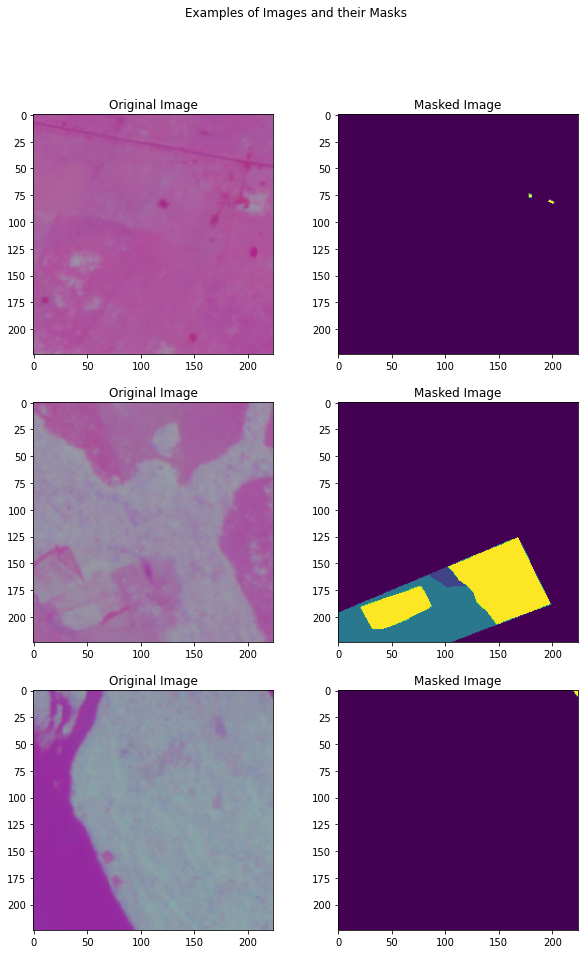
</div>
</div>
</div>
<div class="section" id="read-the-tiles-into-tensors">
<h2>Read the tiles into tensors<a class="headerlink" href="#read-the-tiles-into-tensors" title="Permalink to this headline">¶</a></h2>
<div class="cell docutils container">
<div class="cell_input docutils container">
<div class="highlight-ipython3 notranslate"><div class="highlight"><pre><span></span><span class="c1"># set input image shape</span>
<span class="n">img_shape</span> <span class="o">=</span> <span class="p">(</span><span class="mi">224</span><span class="p">,</span> <span class="mi">224</span><span class="p">,</span> <span class="mi">3</span><span class="p">)</span>
<span class="c1"># set batch size for model</span>
<span class="n">batch_size</span> <span class="o">=</span> <span class="mi">8</span> <span class="c1">#2</span>
</pre></div>
</div>
</div>
</div>
<div class="cell docutils container">
<div class="cell_input docutils container">
<div class="highlight-ipython3 notranslate"><div class="highlight"><pre><span></span><span class="c1"># Function for reading the tiles into TensorFlow tensors </span>
<span class="c1"># See TensorFlow documentation for explanation of tensor: https://www.tensorflow.org/guide/tensor</span>
<span class="k">def</span> <span class="nf">_process_pathnames</span><span class="p">(</span><span class="n">fname</span><span class="p">,</span> <span class="n">label_path</span><span class="p">):</span>
  <span class="c1"># We map this function onto each pathname pair  </span>
  <span class="n">img_str</span> <span class="o">=</span> <span class="n">tf</span><span class="o">.</span><span class="n">io</span><span class="o">.</span><span class="n">read_file</span><span class="p">(</span><span class="n">fname</span><span class="p">)</span>
  <span class="n">img</span> <span class="o">=</span> <span class="n">tf</span><span class="o">.</span><span class="n">image</span><span class="o">.</span><span class="n">decode_png</span><span class="p">(</span><span class="n">img_str</span><span class="p">,</span> <span class="n">channels</span><span class="o">=</span><span class="mi">3</span><span class="p">)</span>

  <span class="n">label_img_str</span> <span class="o">=</span> <span class="n">tf</span><span class="o">.</span><span class="n">io</span><span class="o">.</span><span class="n">read_file</span><span class="p">(</span><span class="n">label_path</span><span class="p">)</span>

  <span class="c1"># These are png images so they return as (num_frames, h, w, c)</span>
  <span class="n">label_img</span> <span class="o">=</span> <span class="n">tf</span><span class="o">.</span><span class="n">image</span><span class="o">.</span><span class="n">decode_png</span><span class="p">(</span><span class="n">label_img_str</span><span class="p">,</span> <span class="n">channels</span><span class="o">=</span><span class="mi">1</span><span class="p">)</span>
  <span class="c1"># The label image should have any values between 0 and 9, indicating pixel wise</span>
  <span class="c1"># cropt type class or background (0). We take the first channel only. </span>
  <span class="n">label_img</span> <span class="o">=</span> <span class="n">label_img</span><span class="p">[:,</span> <span class="p">:,</span> <span class="mi">0</span><span class="p">]</span>
  <span class="n">label_img</span> <span class="o">=</span> <span class="n">tf</span><span class="o">.</span><span class="n">expand_dims</span><span class="p">(</span><span class="n">label_img</span><span class="p">,</span> <span class="n">axis</span><span class="o">=-</span><span class="mi">1</span><span class="p">)</span>
  <span class="k">return</span> <span class="n">img</span><span class="p">,</span> <span class="n">label_img</span>
</pre></div>
</div>
</div>
</div>
<div class="cell docutils container">
<div class="cell_input docutils container">
<div class="highlight-ipython3 notranslate"><div class="highlight"><pre><span></span><span class="c1"># Function to augment the data with horizontal flip</span>
<span class="k">def</span> <span class="nf">flip_img_h</span><span class="p">(</span><span class="n">horizontal_flip</span><span class="p">,</span> <span class="n">tr_img</span><span class="p">,</span> <span class="n">label_img</span><span class="p">):</span>
  <span class="k">if</span> <span class="n">horizontal_flip</span><span class="p">:</span>
    <span class="n">flip_prob</span> <span class="o">=</span> <span class="n">tf</span><span class="o">.</span><span class="n">random</span><span class="o">.</span><span class="n">uniform</span><span class="p">([],</span> <span class="mf">0.0</span><span class="p">,</span> <span class="mf">1.0</span><span class="p">)</span>
    <span class="n">tr_img</span><span class="p">,</span> <span class="n">label_img</span> <span class="o">=</span> <span class="n">tf</span><span class="o">.</span><span class="n">cond</span><span class="p">(</span><span class="n">tf</span><span class="o">.</span><span class="n">less</span><span class="p">(</span><span class="n">flip_prob</span><span class="p">,</span> <span class="mf">0.5</span><span class="p">),</span>
                                <span class="k">lambda</span><span class="p">:</span> <span class="p">(</span><span class="n">tf</span><span class="o">.</span><span class="n">image</span><span class="o">.</span><span class="n">flip_left_right</span><span class="p">(</span><span class="n">tr_img</span><span class="p">),</span> <span class="n">tf</span><span class="o">.</span><span class="n">image</span><span class="o">.</span><span class="n">flip_left_right</span><span class="p">(</span><span class="n">label_img</span><span class="p">)),</span>
                                <span class="k">lambda</span><span class="p">:</span> <span class="p">(</span><span class="n">tr_img</span><span class="p">,</span> <span class="n">label_img</span><span class="p">))</span>
  <span class="k">return</span> <span class="n">tr_img</span><span class="p">,</span> <span class="n">label_img</span>
</pre></div>
</div>
</div>
</div>
<div class="cell docutils container">
<div class="cell_input docutils container">
<div class="highlight-ipython3 notranslate"><div class="highlight"><pre><span></span><span class="c1"># Function to augment the data with vertical flip</span>
<span class="k">def</span> <span class="nf">flip_img_v</span><span class="p">(</span><span class="n">vertical_flip</span><span class="p">,</span> <span class="n">tr_img</span><span class="p">,</span> <span class="n">label_img</span><span class="p">):</span>
  <span class="k">if</span> <span class="n">vertical_flip</span><span class="p">:</span>
    <span class="n">flip_prob</span> <span class="o">=</span> <span class="n">tf</span><span class="o">.</span><span class="n">random</span><span class="o">.</span><span class="n">uniform</span><span class="p">([],</span> <span class="mf">0.0</span><span class="p">,</span> <span class="mf">1.0</span><span class="p">)</span>
    <span class="n">tr_img</span><span class="p">,</span> <span class="n">label_img</span> <span class="o">=</span> <span class="n">tf</span><span class="o">.</span><span class="n">cond</span><span class="p">(</span><span class="n">tf</span><span class="o">.</span><span class="n">less</span><span class="p">(</span><span class="n">flip_prob</span><span class="p">,</span> <span class="mf">0.5</span><span class="p">),</span>
                                <span class="k">lambda</span><span class="p">:</span> <span class="p">(</span><span class="n">tf</span><span class="o">.</span><span class="n">image</span><span class="o">.</span><span class="n">flip_up_down</span><span class="p">(</span><span class="n">tr_img</span><span class="p">),</span> <span class="n">tf</span><span class="o">.</span><span class="n">image</span><span class="o">.</span><span class="n">flip_up_down</span><span class="p">(</span><span class="n">label_img</span><span class="p">)),</span>
                                <span class="k">lambda</span><span class="p">:</span> <span class="p">(</span><span class="n">tr_img</span><span class="p">,</span> <span class="n">label_img</span><span class="p">))</span>
  <span class="k">return</span> <span class="n">tr_img</span><span class="p">,</span> <span class="n">label_img</span>
</pre></div>
</div>
</div>
</div>
<div class="cell docutils container">
<div class="cell_input docutils container">
<div class="highlight-ipython3 notranslate"><div class="highlight"><pre><span></span><span class="c1"># Function to augment the images and labels</span>
<span class="k">def</span> <span class="nf">_augment</span><span class="p">(</span><span class="n">img</span><span class="p">,</span>
             <span class="n">label_img</span><span class="p">,</span>
             <span class="n">resize</span><span class="o">=</span><span class="kc">None</span><span class="p">,</span>  <span class="c1"># Resize the image to some size e.g. [256, 256]</span>
             <span class="n">scale</span><span class="o">=</span><span class="mi">1</span><span class="p">,</span>  <span class="c1"># Scale image e.g. 1 / 255.</span>
             <span class="n">horizontal_flip</span><span class="o">=</span><span class="kc">False</span><span class="p">,</span>
             <span class="n">vertical_flip</span><span class="o">=</span><span class="kc">False</span><span class="p">):</span> 
  <span class="k">if</span> <span class="n">resize</span> <span class="ow">is</span> <span class="ow">not</span> <span class="kc">None</span><span class="p">:</span>
    <span class="c1"># Resize both images</span>
    <span class="n">label_img</span> <span class="o">=</span> <span class="n">tf</span><span class="o">.</span><span class="n">image</span><span class="o">.</span><span class="n">resize</span><span class="p">(</span><span class="n">label_img</span><span class="p">,</span> <span class="n">resize</span><span class="p">)</span>
    <span class="n">img</span> <span class="o">=</span> <span class="n">tf</span><span class="o">.</span><span class="n">image</span><span class="o">.</span><span class="n">resize</span><span class="p">(</span><span class="n">img</span><span class="p">,</span> <span class="n">resize</span><span class="p">)</span>
  
  <span class="n">img</span><span class="p">,</span> <span class="n">label_img</span> <span class="o">=</span> <span class="n">flip_img_h</span><span class="p">(</span><span class="n">horizontal_flip</span><span class="p">,</span> <span class="n">img</span><span class="p">,</span> <span class="n">label_img</span><span class="p">)</span>
  <span class="n">img</span><span class="p">,</span> <span class="n">label_img</span> <span class="o">=</span> <span class="n">flip_img_v</span><span class="p">(</span><span class="n">vertical_flip</span><span class="p">,</span> <span class="n">img</span><span class="p">,</span> <span class="n">label_img</span><span class="p">)</span>
  <span class="n">img</span> <span class="o">=</span> <span class="n">tf</span><span class="o">.</span><span class="n">cast</span><span class="p">(</span><span class="n">img</span><span class="p">,</span> <span class="n">tf</span><span class="o">.</span><span class="n">float32</span><span class="p">)</span> <span class="o">*</span> <span class="n">scale</span>  <span class="c1">#tf.to_float(img) * scale </span>
  <span class="c1">#label_img = tf.cast(label_img, tf.float32) * scale</span>
  <span class="c1">#print(&quot;tensor: &quot;, tf.unique(tf.keras.backend.print_tensor(label_img)))</span>
  <span class="k">return</span> <span class="n">img</span><span class="p">,</span> <span class="n">label_img</span>
</pre></div>
</div>
</div>
</div>
<div class="cell docutils container">
<div class="cell_input docutils container">
<div class="highlight-ipython3 notranslate"><div class="highlight"><pre><span></span><span class="c1"># Main function to tie all of the above four dataset processing functions together </span>
<span class="k">def</span> <span class="nf">get_baseline_dataset</span><span class="p">(</span><span class="n">filenames</span><span class="p">,</span> 
                         <span class="n">labels</span><span class="p">,</span>
                         <span class="n">preproc_fn</span><span class="o">=</span><span class="n">functools</span><span class="o">.</span><span class="n">partial</span><span class="p">(</span><span class="n">_augment</span><span class="p">),</span>
                         <span class="n">threads</span><span class="o">=</span><span class="mi">5</span><span class="p">,</span> 
                         <span class="n">batch_size</span><span class="o">=</span><span class="n">batch_size</span><span class="p">,</span>
                         <span class="n">shuffle</span><span class="o">=</span><span class="kc">True</span><span class="p">):</span>           
  <span class="n">num_x</span> <span class="o">=</span> <span class="nb">len</span><span class="p">(</span><span class="n">filenames</span><span class="p">)</span>
  <span class="c1"># Create a dataset from the filenames and labels</span>
  <span class="n">dataset</span> <span class="o">=</span> <span class="n">tf</span><span class="o">.</span><span class="n">data</span><span class="o">.</span><span class="n">Dataset</span><span class="o">.</span><span class="n">from_tensor_slices</span><span class="p">((</span><span class="n">filenames</span><span class="p">,</span> <span class="n">labels</span><span class="p">))</span>
  <span class="c1"># Map our preprocessing function to every element in our dataset, taking</span>
  <span class="c1"># advantage of multithreading</span>
  <span class="n">dataset</span> <span class="o">=</span> <span class="n">dataset</span><span class="o">.</span><span class="n">map</span><span class="p">(</span><span class="n">_process_pathnames</span><span class="p">,</span> <span class="n">num_parallel_calls</span><span class="o">=</span><span class="n">threads</span><span class="p">)</span>
  <span class="k">if</span> <span class="n">preproc_fn</span><span class="o">.</span><span class="n">keywords</span> <span class="ow">is</span> <span class="ow">not</span> <span class="kc">None</span> <span class="ow">and</span> <span class="s1">&#39;resize&#39;</span> <span class="ow">not</span> <span class="ow">in</span> <span class="n">preproc_fn</span><span class="o">.</span><span class="n">keywords</span><span class="p">:</span>
    <span class="k">assert</span> <span class="n">batch_size</span> <span class="o">==</span> <span class="mi">1</span><span class="p">,</span> <span class="s2">&quot;Batching images must be of the same size&quot;</span>

  <span class="n">dataset</span> <span class="o">=</span> <span class="n">dataset</span><span class="o">.</span><span class="n">map</span><span class="p">(</span><span class="n">preproc_fn</span><span class="p">,</span> <span class="n">num_parallel_calls</span><span class="o">=</span><span class="n">threads</span><span class="p">)</span>
  
  <span class="k">if</span> <span class="n">shuffle</span><span class="p">:</span>
    <span class="n">dataset</span> <span class="o">=</span> <span class="n">dataset</span><span class="o">.</span><span class="n">shuffle</span><span class="p">(</span><span class="n">num_x</span><span class="p">)</span>
  
  
  <span class="c1"># It&#39;s necessary to repeat our data for all epochs </span>
  <span class="n">dataset</span> <span class="o">=</span> <span class="n">dataset</span><span class="o">.</span><span class="n">repeat</span><span class="p">()</span><span class="o">.</span><span class="n">batch</span><span class="p">(</span><span class="n">batch_size</span><span class="p">)</span>
  <span class="k">return</span> <span class="n">dataset</span>
</pre></div>
</div>
</div>
</div>
<div class="cell docutils container">
<div class="cell_input docutils container">
<div class="highlight-ipython3 notranslate"><div class="highlight"><pre><span></span><span class="c1"># dataset configuration for training</span>
<span class="n">tr_cfg</span> <span class="o">=</span> <span class="p">{</span>
    <span class="s1">&#39;resize&#39;</span><span class="p">:</span> <span class="p">[</span><span class="n">img_shape</span><span class="p">[</span><span class="mi">0</span><span class="p">],</span> <span class="n">img_shape</span><span class="p">[</span><span class="mi">1</span><span class="p">]],</span>
    <span class="s1">&#39;scale&#39;</span><span class="p">:</span> <span class="mi">1</span> <span class="o">/</span> <span class="mf">255.</span><span class="p">,</span>
    <span class="s1">&#39;horizontal_flip&#39;</span><span class="p">:</span> <span class="kc">True</span><span class="p">,</span>
    <span class="s1">&#39;vertical_flip&#39;</span><span class="p">:</span> <span class="kc">True</span><span class="p">,</span>
<span class="p">}</span>
<span class="n">tr_preprocessing_fn</span> <span class="o">=</span> <span class="n">functools</span><span class="o">.</span><span class="n">partial</span><span class="p">(</span><span class="n">_augment</span><span class="p">,</span> <span class="o">**</span><span class="n">tr_cfg</span><span class="p">)</span>
</pre></div>
</div>
</div>
</div>
<div class="cell docutils container">
<div class="cell_input docutils container">
<div class="highlight-ipython3 notranslate"><div class="highlight"><pre><span></span><span class="c1"># dataset configuration for validation</span>
<span class="n">val_cfg</span> <span class="o">=</span> <span class="p">{</span>
    <span class="s1">&#39;resize&#39;</span><span class="p">:</span> <span class="p">[</span><span class="n">img_shape</span><span class="p">[</span><span class="mi">0</span><span class="p">],</span> <span class="n">img_shape</span><span class="p">[</span><span class="mi">1</span><span class="p">]],</span>
    <span class="s1">&#39;scale&#39;</span><span class="p">:</span> <span class="mi">1</span> <span class="o">/</span> <span class="mf">255.</span><span class="p">,</span>
<span class="p">}</span>
<span class="n">val_preprocessing_fn</span> <span class="o">=</span> <span class="n">functools</span><span class="o">.</span><span class="n">partial</span><span class="p">(</span><span class="n">_augment</span><span class="p">,</span> <span class="o">**</span><span class="n">val_cfg</span><span class="p">)</span>
</pre></div>
</div>
</div>
</div>
<div class="cell docutils container">
<div class="cell_input docutils container">
<div class="highlight-ipython3 notranslate"><div class="highlight"><pre><span></span><span class="c1"># dataset configuration for testing</span>
<span class="n">test_cfg</span> <span class="o">=</span> <span class="p">{</span>
    <span class="s1">&#39;resize&#39;</span><span class="p">:</span> <span class="p">[</span><span class="n">img_shape</span><span class="p">[</span><span class="mi">0</span><span class="p">],</span> <span class="n">img_shape</span><span class="p">[</span><span class="mi">1</span><span class="p">]],</span>
    <span class="s1">&#39;scale&#39;</span><span class="p">:</span> <span class="mi">1</span> <span class="o">/</span> <span class="mf">255.</span><span class="p">,</span>
<span class="p">}</span>
<span class="n">test_preprocessing_fn</span> <span class="o">=</span> <span class="n">functools</span><span class="o">.</span><span class="n">partial</span><span class="p">(</span><span class="n">_augment</span><span class="p">,</span> <span class="o">**</span><span class="n">test_cfg</span><span class="p">)</span>
</pre></div>
</div>
</div>
</div>
<div class="cell docutils container">
<div class="cell_input docutils container">
<div class="highlight-ipython3 notranslate"><div class="highlight"><pre><span></span><span class="c1"># create the TensorFlow datasets</span>
<span class="n">train_ds</span> <span class="o">=</span> <span class="n">get_baseline_dataset</span><span class="p">(</span><span class="n">x_train_filenames</span><span class="p">,</span>
                                <span class="n">y_train_filenames</span><span class="p">,</span>
                                <span class="n">preproc_fn</span><span class="o">=</span><span class="n">tr_preprocessing_fn</span><span class="p">,</span>
                                <span class="n">batch_size</span><span class="o">=</span><span class="n">batch_size</span><span class="p">)</span>
<span class="n">val_ds</span> <span class="o">=</span> <span class="n">get_baseline_dataset</span><span class="p">(</span><span class="n">x_val_filenames</span><span class="p">,</span>
                              <span class="n">y_val_filenames</span><span class="p">,</span> 
                              <span class="n">preproc_fn</span><span class="o">=</span><span class="n">val_preprocessing_fn</span><span class="p">,</span>
                              <span class="n">batch_size</span><span class="o">=</span><span class="n">batch_size</span><span class="p">)</span>
<span class="n">test_ds</span> <span class="o">=</span> <span class="n">get_baseline_dataset</span><span class="p">(</span><span class="n">x_test_filenames</span><span class="p">,</span>
                              <span class="n">y_test_filenames</span><span class="p">,</span> 
                              <span class="n">preproc_fn</span><span class="o">=</span><span class="n">test_preprocessing_fn</span><span class="p">,</span>
                              <span class="n">batch_size</span><span class="o">=</span><span class="n">batch_size</span><span class="p">)</span>
</pre></div>
</div>
</div>
</div>
<div class="cell docutils container">
<div class="cell_input docutils container">
<div class="highlight-ipython3 notranslate"><div class="highlight"><pre><span></span><span class="c1"># Now we will display some samples from the datasets</span>
<span class="n">display_num</span> <span class="o">=</span> <span class="mi">1</span>
<span class="n">r_choices</span> <span class="o">=</span> <span class="n">np</span><span class="o">.</span><span class="n">random</span><span class="o">.</span><span class="n">choice</span><span class="p">(</span><span class="n">num_foreground_examples</span><span class="p">,</span> <span class="mi">1</span><span class="p">)</span>
<span class="k">for</span> <span class="n">i</span> <span class="ow">in</span> <span class="nb">range</span><span class="p">(</span><span class="mi">0</span><span class="p">,</span> <span class="n">display_num</span> <span class="o">*</span> <span class="mi">2</span><span class="p">,</span> <span class="mi">2</span><span class="p">):</span>
  <span class="n">img_num</span> <span class="o">=</span> <span class="n">r_choices</span><span class="p">[</span><span class="n">i</span> <span class="o">//</span> <span class="mi">2</span><span class="p">]</span>

<span class="n">temp_ds</span> <span class="o">=</span> <span class="n">get_baseline_dataset</span><span class="p">(</span><span class="n">foreground_list_x</span><span class="p">[</span><span class="n">img_num</span><span class="p">:</span><span class="n">img_num</span><span class="o">+</span><span class="mi">1</span><span class="p">],</span> 
                               <span class="n">foreground_list_y</span><span class="p">[</span><span class="n">img_num</span><span class="p">:</span><span class="n">img_num</span><span class="o">+</span><span class="mi">1</span><span class="p">],</span>
                               <span class="n">preproc_fn</span><span class="o">=</span><span class="n">tr_preprocessing_fn</span><span class="p">,</span>
                               <span class="n">batch_size</span><span class="o">=</span><span class="mi">1</span><span class="p">,</span>
                               <span class="n">shuffle</span><span class="o">=</span><span class="kc">False</span><span class="p">)</span>

<span class="c1"># Let&#39;s examine some of these augmented images</span>

<span class="n">iterator</span> <span class="o">=</span> <span class="nb">iter</span><span class="p">(</span><span class="n">temp_ds</span><span class="p">)</span>
<span class="n">next_element</span> <span class="o">=</span> <span class="n">iterator</span><span class="o">.</span><span class="n">get_next</span><span class="p">()</span>

<span class="n">batch_of_imgs</span><span class="p">,</span> <span class="n">label</span> <span class="o">=</span> <span class="n">next_element</span>

<span class="c1"># Running next element in our graph will produce a batch of images</span>

<span class="n">sample_image</span><span class="p">,</span> <span class="n">sample_mask</span> <span class="o">=</span> <span class="n">batch_of_imgs</span><span class="p">[</span><span class="mi">0</span><span class="p">],</span> <span class="n">label</span><span class="p">[</span><span class="mi">0</span><span class="p">,:,:,:]</span>
</pre></div>
</div>
</div>
</div>
<div class="cell docutils container">
<div class="cell_input docutils container">
<div class="highlight-ipython3 notranslate"><div class="highlight"><pre><span></span><span class="k">def</span> <span class="nf">display</span><span class="p">(</span><span class="n">display_list</span><span class="p">):</span>
  <span class="n">plt</span><span class="o">.</span><span class="n">figure</span><span class="p">(</span><span class="n">figsize</span><span class="o">=</span><span class="p">(</span><span class="mi">15</span><span class="p">,</span> <span class="mi">15</span><span class="p">))</span>

  <span class="n">title</span> <span class="o">=</span> <span class="p">[</span><span class="s1">&#39;Input Image&#39;</span><span class="p">,</span> <span class="s1">&#39;True Mask&#39;</span><span class="p">,</span> <span class="s1">&#39;Predicted Mask&#39;</span><span class="p">]</span>

  <span class="k">for</span> <span class="n">i</span> <span class="ow">in</span> <span class="nb">range</span><span class="p">(</span><span class="nb">len</span><span class="p">(</span><span class="n">display_list</span><span class="p">)):</span>
    <span class="n">plt</span><span class="o">.</span><span class="n">subplot</span><span class="p">(</span><span class="mi">1</span><span class="p">,</span> <span class="nb">len</span><span class="p">(</span><span class="n">display_list</span><span class="p">),</span> <span class="n">i</span><span class="o">+</span><span class="mi">1</span><span class="p">)</span>
    <span class="n">plt</span><span class="o">.</span><span class="n">title</span><span class="p">(</span><span class="n">title</span><span class="p">[</span><span class="n">i</span><span class="p">])</span>
    <span class="n">plt</span><span class="o">.</span><span class="n">imshow</span><span class="p">(</span><span class="n">tf</span><span class="o">.</span><span class="n">keras</span><span class="o">.</span><span class="n">preprocessing</span><span class="o">.</span><span class="n">image</span><span class="o">.</span><span class="n">array_to_img</span><span class="p">(</span><span class="n">display_list</span><span class="p">[</span><span class="n">i</span><span class="p">]))</span>
    <span class="n">plt</span><span class="o">.</span><span class="n">axis</span><span class="p">(</span><span class="s1">&#39;off&#39;</span><span class="p">)</span>
  <span class="n">plt</span><span class="o">.</span><span class="n">show</span><span class="p">()</span>
</pre></div>
</div>
</div>
</div>
<div class="cell docutils container">
<div class="cell_input docutils container">
<div class="highlight-ipython3 notranslate"><div class="highlight"><pre><span></span><span class="c1"># display sample train image</span>
<span class="n">display</span><span class="p">([</span><span class="n">sample_image</span><span class="p">,</span> <span class="n">sample_mask</span><span class="p">])</span>
</pre></div>
</div>
</div>
<div class="cell_output docutils container">
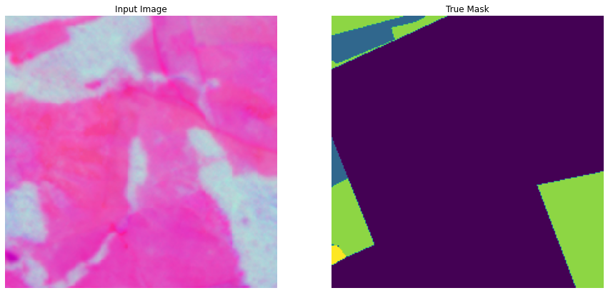
</div>
</div>
<p>…same check for the validation images:</p>
<div class="cell docutils container">
<div class="cell_input docutils container">
<div class="highlight-ipython3 notranslate"><div class="highlight"><pre><span></span><span class="c1"># reset the forground list to capture the validation images</span>
<span class="n">foreground_list_x</span> <span class="o">=</span> <span class="p">[]</span>
<span class="n">foreground_list_y</span> <span class="o">=</span> <span class="p">[]</span>
<span class="k">for</span> <span class="n">x</span><span class="p">,</span><span class="n">y</span> <span class="ow">in</span> <span class="nb">zip</span><span class="p">(</span><span class="n">x_val_filenames</span><span class="p">,</span> <span class="n">y_val_filenames</span><span class="p">):</span> 
    <span class="n">img</span> <span class="o">=</span> <span class="n">np</span><span class="o">.</span><span class="n">array</span><span class="p">(</span><span class="n">Image</span><span class="o">.</span><span class="n">open</span><span class="p">(</span><span class="n">y</span><span class="p">))</span> 
    <span class="k">if</span> <span class="n">img</span><span class="o">.</span><span class="n">max</span><span class="p">()</span><span class="o">&gt;</span><span class="mi">0</span><span class="p">:</span>
        <span class="n">foreground_list_x</span><span class="o">.</span><span class="n">append</span><span class="p">(</span><span class="n">x</span><span class="p">)</span>
        <span class="n">foreground_list_y</span><span class="o">.</span><span class="n">append</span><span class="p">(</span><span class="n">y</span><span class="p">)</span>

<span class="n">num_foreground_examples</span> <span class="o">=</span> <span class="nb">len</span><span class="p">(</span><span class="n">foreground_list_y</span><span class="p">)</span>

<span class="n">display_num</span> <span class="o">=</span> <span class="mi">1</span>
<span class="n">r_choices</span> <span class="o">=</span> <span class="n">np</span><span class="o">.</span><span class="n">random</span><span class="o">.</span><span class="n">choice</span><span class="p">(</span><span class="n">num_foreground_examples</span><span class="p">,</span> <span class="mi">1</span><span class="p">)</span>
<span class="k">for</span> <span class="n">i</span> <span class="ow">in</span> <span class="nb">range</span><span class="p">(</span><span class="mi">0</span><span class="p">,</span> <span class="n">display_num</span> <span class="o">*</span> <span class="mi">2</span><span class="p">,</span> <span class="mi">2</span><span class="p">):</span>
  <span class="n">img_num</span> <span class="o">=</span> <span class="n">r_choices</span><span class="p">[</span><span class="n">i</span> <span class="o">//</span> <span class="mi">2</span><span class="p">]</span>

<span class="n">temp_ds</span> <span class="o">=</span> <span class="n">get_baseline_dataset</span><span class="p">(</span><span class="n">foreground_list_x</span><span class="p">[</span><span class="n">img_num</span><span class="p">:</span><span class="n">img_num</span><span class="o">+</span><span class="mi">1</span><span class="p">],</span> 
                               <span class="n">foreground_list_y</span><span class="p">[</span><span class="n">img_num</span><span class="p">:</span><span class="n">img_num</span><span class="o">+</span><span class="mi">1</span><span class="p">],</span>
                               <span class="n">preproc_fn</span><span class="o">=</span><span class="n">val_preprocessing_fn</span><span class="p">,</span>
                               <span class="n">batch_size</span><span class="o">=</span><span class="mi">1</span><span class="p">,</span>
                               <span class="n">shuffle</span><span class="o">=</span><span class="kc">False</span><span class="p">)</span>

<span class="c1"># Let&#39;s examine some of these augmented images</span>

<span class="n">iterator</span> <span class="o">=</span> <span class="nb">iter</span><span class="p">(</span><span class="n">temp_ds</span><span class="p">)</span>
<span class="n">next_element</span> <span class="o">=</span> <span class="n">iterator</span><span class="o">.</span><span class="n">get_next</span><span class="p">()</span>

<span class="n">batch_of_imgs</span><span class="p">,</span> <span class="n">label</span> <span class="o">=</span> <span class="n">next_element</span>

<span class="c1"># Running next element in our graph will produce a batch of images</span>

<span class="n">sample_image</span><span class="p">,</span> <span class="n">sample_mask</span> <span class="o">=</span> <span class="n">batch_of_imgs</span><span class="p">[</span><span class="mi">0</span><span class="p">],</span> <span class="n">label</span><span class="p">[</span><span class="mi">0</span><span class="p">,:,:,:]</span>

<span class="c1"># display sample validation image</span>
<span class="n">display</span><span class="p">([</span><span class="n">sample_image</span><span class="p">,</span> <span class="n">sample_mask</span><span class="p">])</span>
</pre></div>
</div>
</div>
<div class="cell_output docutils container">
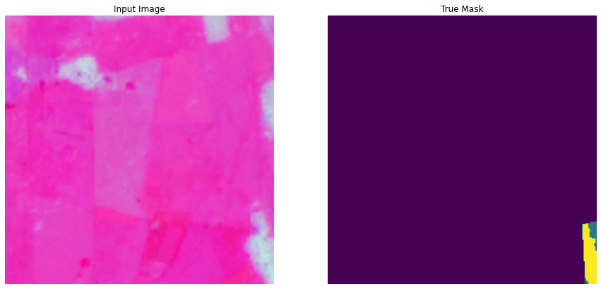
</div>
</div>
<p>…same check for the test images:</p>
<div class="cell docutils container">
<div class="cell_input docutils container">
<div class="highlight-ipython3 notranslate"><div class="highlight"><pre><span></span><span class="c1"># reset the forground list to capture the test images</span>
<span class="n">foreground_list_x</span> <span class="o">=</span> <span class="p">[]</span>
<span class="n">foreground_list_y</span> <span class="o">=</span> <span class="p">[]</span>
<span class="k">for</span> <span class="n">x</span><span class="p">,</span><span class="n">y</span> <span class="ow">in</span> <span class="nb">zip</span><span class="p">(</span><span class="n">x_test_filenames</span><span class="p">,</span> <span class="n">y_test_filenames</span><span class="p">):</span> 
    <span class="n">img</span> <span class="o">=</span> <span class="n">np</span><span class="o">.</span><span class="n">array</span><span class="p">(</span><span class="n">Image</span><span class="o">.</span><span class="n">open</span><span class="p">(</span><span class="n">y</span><span class="p">))</span> 
    <span class="k">if</span> <span class="n">img</span><span class="o">.</span><span class="n">max</span><span class="p">()</span><span class="o">&gt;</span><span class="mi">0</span><span class="p">:</span>
        <span class="n">foreground_list_x</span><span class="o">.</span><span class="n">append</span><span class="p">(</span><span class="n">x</span><span class="p">)</span>
        <span class="n">foreground_list_y</span><span class="o">.</span><span class="n">append</span><span class="p">(</span><span class="n">y</span><span class="p">)</span>

<span class="n">num_foreground_examples</span> <span class="o">=</span> <span class="nb">len</span><span class="p">(</span><span class="n">foreground_list_y</span><span class="p">)</span>

<span class="n">display_num</span> <span class="o">=</span> <span class="mi">1</span>
<span class="n">r_choices</span> <span class="o">=</span> <span class="n">np</span><span class="o">.</span><span class="n">random</span><span class="o">.</span><span class="n">choice</span><span class="p">(</span><span class="n">num_foreground_examples</span><span class="p">,</span> <span class="mi">1</span><span class="p">)</span>
<span class="k">for</span> <span class="n">i</span> <span class="ow">in</span> <span class="nb">range</span><span class="p">(</span><span class="mi">0</span><span class="p">,</span> <span class="n">display_num</span> <span class="o">*</span> <span class="mi">2</span><span class="p">,</span> <span class="mi">2</span><span class="p">):</span>
  <span class="n">img_num</span> <span class="o">=</span> <span class="n">r_choices</span><span class="p">[</span><span class="n">i</span> <span class="o">//</span> <span class="mi">2</span><span class="p">]</span>

<span class="n">temp_ds</span> <span class="o">=</span> <span class="n">get_baseline_dataset</span><span class="p">(</span><span class="n">foreground_list_x</span><span class="p">[</span><span class="n">img_num</span><span class="p">:</span><span class="n">img_num</span><span class="o">+</span><span class="mi">1</span><span class="p">],</span> 
                               <span class="n">foreground_list_y</span><span class="p">[</span><span class="n">img_num</span><span class="p">:</span><span class="n">img_num</span><span class="o">+</span><span class="mi">1</span><span class="p">],</span>
                               <span class="n">preproc_fn</span><span class="o">=</span><span class="n">test_preprocessing_fn</span><span class="p">,</span>
                               <span class="n">batch_size</span><span class="o">=</span><span class="mi">1</span><span class="p">,</span>
                               <span class="n">shuffle</span><span class="o">=</span><span class="kc">False</span><span class="p">)</span>

<span class="c1"># Let&#39;s examine some of these augmented images</span>

<span class="n">iterator</span> <span class="o">=</span> <span class="nb">iter</span><span class="p">(</span><span class="n">temp_ds</span><span class="p">)</span>
<span class="n">next_element</span> <span class="o">=</span> <span class="n">iterator</span><span class="o">.</span><span class="n">get_next</span><span class="p">()</span>

<span class="n">batch_of_imgs</span><span class="p">,</span> <span class="n">label</span> <span class="o">=</span> <span class="n">next_element</span>

<span class="c1"># Running next element in our graph will produce a batch of images</span>

<span class="n">sample_image</span><span class="p">,</span> <span class="n">sample_mask</span> <span class="o">=</span> <span class="n">batch_of_imgs</span><span class="p">[</span><span class="mi">0</span><span class="p">],</span> <span class="n">label</span><span class="p">[</span><span class="mi">0</span><span class="p">,:,:,:]</span>

<span class="c1"># display sample test image</span>
<span class="n">display</span><span class="p">([</span><span class="n">sample_image</span><span class="p">,</span> <span class="n">sample_mask</span><span class="p">])</span>
</pre></div>
</div>
</div>
<div class="cell_output docutils container">
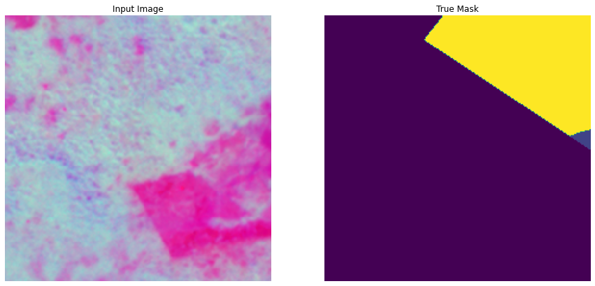
</div>
</div>
</div>
<div class="section" id="define-the-model">
<h2>Define the model<a class="headerlink" href="#define-the-model" title="Permalink to this headline">¶</a></h2>
<p>The model being used here is a modified U-Net. A U-Net consists of an encoder (downsampler) and decoder (upsampler). In-order to learn robust features, and reduce the number of trainable parameters, a pretrained model can be used as the encoder. Thus, the encoder for this task will be a pretrained MobileNetV2 model, whose intermediate outputs will be used, and the decoder will be the upsample block already implemented in TensorFlow Examples in the Pix2pix tutorial.</p>
<p>The reason to output ten channels is because there are ten possible labels for each pixel. Think of this as multi-classification where each pixel is being classified into ten classes.</p>
<div class="cell docutils container">
<div class="cell_input docutils container">
<div class="highlight-ipython3 notranslate"><div class="highlight"><pre><span></span><span class="c1"># set number of model output channels to the number of classes (including background)</span>
<span class="n">OUTPUT_CHANNELS</span> <span class="o">=</span> <span class="mi">9</span> 
</pre></div>
</div>
</div>
</div>
<p>As mentioned, the encoder will be a pretrained MobileNetV2 model which is prepared and ready to use in tf.keras.applications. The encoder consists of specific outputs from intermediate layers in the model. Note that the encoder will not be trained during the training process.</p>
<div class="cell docutils container">
<div class="cell_input docutils container">
<div class="highlight-ipython3 notranslate"><div class="highlight"><pre><span></span><span class="n">base_model</span> <span class="o">=</span> <span class="n">tf</span><span class="o">.</span><span class="n">keras</span><span class="o">.</span><span class="n">applications</span><span class="o">.</span><span class="n">MobileNetV2</span><span class="p">(</span><span class="n">input_shape</span><span class="o">=</span><span class="p">[</span><span class="mi">224</span><span class="p">,</span> <span class="mi">224</span><span class="p">,</span> <span class="mi">3</span><span class="p">],</span> <span class="n">include_top</span><span class="o">=</span><span class="kc">False</span><span class="p">)</span>

<span class="c1"># Use the activations of these layers</span>
<span class="n">layer_names</span> <span class="o">=</span> <span class="p">[</span>
    <span class="s1">&#39;block_1_expand_relu&#39;</span><span class="p">,</span>   <span class="c1"># 64x64</span>
    <span class="s1">&#39;block_3_expand_relu&#39;</span><span class="p">,</span>   <span class="c1"># 32x32</span>
    <span class="s1">&#39;block_6_expand_relu&#39;</span><span class="p">,</span>   <span class="c1"># 16x16</span>
    <span class="s1">&#39;block_13_expand_relu&#39;</span><span class="p">,</span>  <span class="c1"># 8x8</span>
    <span class="s1">&#39;block_16_project&#39;</span><span class="p">,</span>      <span class="c1"># 4x4</span>
<span class="p">]</span>
<span class="n">layers</span> <span class="o">=</span> <span class="p">[</span><span class="n">base_model</span><span class="o">.</span><span class="n">get_layer</span><span class="p">(</span><span class="n">name</span><span class="p">)</span><span class="o">.</span><span class="n">output</span> <span class="k">for</span> <span class="n">name</span> <span class="ow">in</span> <span class="n">layer_names</span><span class="p">]</span>

<span class="c1"># Create the feature extraction model</span>
<span class="n">down_stack</span> <span class="o">=</span> <span class="n">tf</span><span class="o">.</span><span class="n">keras</span><span class="o">.</span><span class="n">Model</span><span class="p">(</span><span class="n">inputs</span><span class="o">=</span><span class="n">base_model</span><span class="o">.</span><span class="n">input</span><span class="p">,</span> <span class="n">outputs</span><span class="o">=</span><span class="n">layers</span><span class="p">)</span>

<span class="n">down_stack</span><span class="o">.</span><span class="n">trainable</span> <span class="o">=</span> <span class="kc">True</span> <span class="c1">#False</span>
</pre></div>
</div>
</div>
<div class="cell_output docutils container">
<div class="output stream highlight-myst-ansi notranslate"><div class="highlight"><pre><span></span>Downloading data from https://storage.googleapis.com/tensorflow/keras-applications/mobilenet_v2/mobilenet_v2_weights_tf_dim_ordering_tf_kernels_1.0_224_no_top.h5
9412608/9406464 [==============================] - 0s 0us/step
9420800/9406464 [==============================] - 0s 0us/step
</pre></div>
</div>
</div>
</div>
<p>The decoder/upsampler is simply a series of upsample blocks implemented in TensorFlow examples.</p>
<div class="cell docutils container">
<div class="cell_input docutils container">
<div class="highlight-ipython3 notranslate"><div class="highlight"><pre><span></span><span class="n">up_stack</span> <span class="o">=</span> <span class="p">[</span>
    <span class="n">pix2pix</span><span class="o">.</span><span class="n">upsample</span><span class="p">(</span><span class="mi">512</span><span class="p">,</span> <span class="mi">3</span><span class="p">),</span>  <span class="c1"># 4x4 -&gt; 8x8</span>
    <span class="n">pix2pix</span><span class="o">.</span><span class="n">upsample</span><span class="p">(</span><span class="mi">256</span><span class="p">,</span> <span class="mi">3</span><span class="p">),</span>  <span class="c1"># 8x8 -&gt; 16x16</span>
    <span class="n">pix2pix</span><span class="o">.</span><span class="n">upsample</span><span class="p">(</span><span class="mi">128</span><span class="p">,</span> <span class="mi">3</span><span class="p">),</span>  <span class="c1"># 16x16 -&gt; 32x32</span>
    <span class="n">pix2pix</span><span class="o">.</span><span class="n">upsample</span><span class="p">(</span><span class="mi">64</span><span class="p">,</span> <span class="mi">3</span><span class="p">),</span>   <span class="c1"># 32x32 -&gt; 64x64</span>
<span class="p">]</span>
</pre></div>
</div>
</div>
</div>
<div class="cell docutils container">
<div class="cell_input docutils container">
<div class="highlight-ipython3 notranslate"><div class="highlight"><pre><span></span><span class="k">def</span> <span class="nf">unet_model</span><span class="p">(</span><span class="n">output_channels</span><span class="p">):</span>
  <span class="n">inputs</span> <span class="o">=</span> <span class="n">tf</span><span class="o">.</span><span class="n">keras</span><span class="o">.</span><span class="n">layers</span><span class="o">.</span><span class="n">Input</span><span class="p">(</span><span class="n">shape</span><span class="o">=</span><span class="p">[</span><span class="mi">224</span><span class="p">,</span><span class="mi">224</span><span class="p">,</span><span class="mi">3</span><span class="p">])</span>
  <span class="n">x</span> <span class="o">=</span> <span class="n">inputs</span>

  <span class="c1"># Downsampling through the model</span>
  <span class="n">skips</span> <span class="o">=</span> <span class="n">down_stack</span><span class="p">(</span><span class="n">x</span><span class="p">)</span>
  <span class="n">x</span> <span class="o">=</span> <span class="n">skips</span><span class="p">[</span><span class="o">-</span><span class="mi">1</span><span class="p">]</span>
  <span class="n">skips</span> <span class="o">=</span> <span class="nb">reversed</span><span class="p">(</span><span class="n">skips</span><span class="p">[:</span><span class="o">-</span><span class="mi">1</span><span class="p">])</span>

  <span class="c1"># Upsampling and establishing the skip connections</span>
  <span class="k">for</span> <span class="n">up</span><span class="p">,</span> <span class="n">skip</span> <span class="ow">in</span> <span class="nb">zip</span><span class="p">(</span><span class="n">up_stack</span><span class="p">,</span> <span class="n">skips</span><span class="p">):</span>
    <span class="n">x</span> <span class="o">=</span> <span class="n">up</span><span class="p">(</span><span class="n">x</span><span class="p">)</span>
    <span class="n">concat</span> <span class="o">=</span> <span class="n">tf</span><span class="o">.</span><span class="n">keras</span><span class="o">.</span><span class="n">layers</span><span class="o">.</span><span class="n">Concatenate</span><span class="p">()</span>
    <span class="n">x</span> <span class="o">=</span> <span class="n">concat</span><span class="p">([</span><span class="n">x</span><span class="p">,</span> <span class="n">skip</span><span class="p">])</span>

  <span class="c1"># This is the last layer of the model</span>
  <span class="n">last</span> <span class="o">=</span> <span class="n">tf</span><span class="o">.</span><span class="n">keras</span><span class="o">.</span><span class="n">layers</span><span class="o">.</span><span class="n">Conv2DTranspose</span><span class="p">(</span>
      <span class="n">output_channels</span><span class="p">,</span> <span class="mi">3</span><span class="p">,</span> <span class="n">strides</span><span class="o">=</span><span class="mi">2</span><span class="p">,</span>
      <span class="n">padding</span><span class="o">=</span><span class="s1">&#39;same&#39;</span><span class="p">)</span>  <span class="c1">#64x64 -&gt; 224x224</span>

  <span class="n">x</span> <span class="o">=</span> <span class="n">last</span><span class="p">(</span><span class="n">x</span><span class="p">)</span>

  <span class="k">return</span> <span class="n">tf</span><span class="o">.</span><span class="n">keras</span><span class="o">.</span><span class="n">Model</span><span class="p">(</span><span class="n">inputs</span><span class="o">=</span><span class="n">inputs</span><span class="p">,</span> <span class="n">outputs</span><span class="o">=</span><span class="n">x</span><span class="p">)</span>
</pre></div>
</div>
</div>
</div>
</div>
<div class="section" id="train-the-model">
<h2>Train the model<a class="headerlink" href="#train-the-model" title="Permalink to this headline">¶</a></h2>
<p>Now, all that is left to do is to compile and train the model. The loss being used here is losses.SparseCategoricalCrossentropy(from_logits=True). The reason to use this loss function is because the network is trying to assign each pixel a label, just like multi-class prediction. In the true segmentation mask, each pixel has a value between 0-9. The network here is outputting ten channels. Essentially, each channel is trying to learn to predict a class, and losses.SparseCategoricalCrossentropy(from_logits=True) is the recommended loss for such a scenario. Using the output of the network, the label assigned to the pixel is the channel with the highest value. This is what the create_mask function is doing.</p>
<div class="cell docutils container">
<div class="cell_input docutils container">
<div class="highlight-ipython3 notranslate"><div class="highlight"><pre><span></span><span class="n">model</span> <span class="o">=</span> <span class="n">unet_model</span><span class="p">(</span><span class="n">OUTPUT_CHANNELS</span><span class="p">)</span>
</pre></div>
</div>
</div>
</div>
<p>Notice there is a class imbalance problem in the dataset. For that reason, we will use a loss function called focal loss. It uses a parameter to weigh the losses contributed by each class to prevent bias towards the over-represented.</p>
<p>We will measure our model’s performance during training by per-pixel accuracy.</p>
<div class="cell docutils container">
<div class="cell_input docutils container">
<div class="highlight-ipython3 notranslate"><div class="highlight"><pre><span></span><span class="n">model</span><span class="o">.</span><span class="n">compile</span><span class="p">(</span><span class="n">optimizer</span><span class="o">=</span><span class="n">tf</span><span class="o">.</span><span class="n">keras</span><span class="o">.</span><span class="n">optimizers</span><span class="o">.</span><span class="n">Adam</span><span class="p">(</span><span class="n">learning_rate</span><span class="o">=</span><span class="mf">0.00001</span><span class="p">),</span>
              <span class="n">loss</span><span class="o">=</span><span class="n">SparseCategoricalFocalLoss</span><span class="p">(</span><span class="n">gamma</span><span class="o">=</span><span class="mi">2</span><span class="p">,</span> <span class="n">from_logits</span><span class="o">=</span><span class="kc">True</span><span class="p">),</span>
              <span class="n">metrics</span><span class="o">=</span><span class="p">[</span><span class="s1">&#39;accuracy&#39;</span><span class="p">])</span>
</pre></div>
</div>
</div>
</div>
<p>Let’s try out the pre-trained model to see what it predicts before training.</p>
<div class="cell docutils container">
<div class="cell_input docutils container">
<div class="highlight-ipython3 notranslate"><div class="highlight"><pre><span></span><span class="k">def</span> <span class="nf">create_mask</span><span class="p">(</span><span class="n">pred_mask</span><span class="p">):</span>
  <span class="n">pred_mask</span> <span class="o">=</span> <span class="n">tf</span><span class="o">.</span><span class="n">argmax</span><span class="p">(</span><span class="n">pred_mask</span><span class="p">,</span> <span class="n">axis</span><span class="o">=-</span><span class="mi">1</span><span class="p">)</span>
  <span class="n">pred_mask</span> <span class="o">=</span> <span class="n">pred_mask</span><span class="p">[</span><span class="o">...</span><span class="p">,</span> <span class="n">tf</span><span class="o">.</span><span class="n">newaxis</span><span class="p">]</span>
  <span class="k">return</span> <span class="n">pred_mask</span><span class="p">[</span><span class="mi">0</span><span class="p">]</span>
</pre></div>
</div>
</div>
</div>
<div class="cell docutils container">
<div class="cell_input docutils container">
<div class="highlight-ipython3 notranslate"><div class="highlight"><pre><span></span><span class="k">def</span> <span class="nf">show_predictions</span><span class="p">(</span><span class="n">dataset</span><span class="o">=</span><span class="kc">None</span><span class="p">,</span> <span class="n">num</span><span class="o">=</span><span class="mi">1</span><span class="p">):</span>
  <span class="k">if</span> <span class="n">dataset</span><span class="p">:</span>
    <span class="k">for</span> <span class="n">image</span><span class="p">,</span> <span class="n">mask</span> <span class="ow">in</span> <span class="n">dataset</span><span class="o">.</span><span class="n">take</span><span class="p">(</span><span class="n">num</span><span class="p">):</span>
      <span class="n">pred_mask</span> <span class="o">=</span> <span class="n">model</span><span class="o">.</span><span class="n">predict</span><span class="p">(</span><span class="n">image</span><span class="p">)</span>
      <span class="n">display</span><span class="p">([</span><span class="n">image</span><span class="p">[</span><span class="mi">0</span><span class="p">],</span> <span class="n">mask</span><span class="p">[</span><span class="mi">0</span><span class="p">],</span> <span class="n">create_mask</span><span class="p">(</span><span class="n">pred_mask</span><span class="p">)])</span>
  <span class="k">else</span><span class="p">:</span>
    <span class="n">mp</span> <span class="o">=</span> <span class="n">create_mask</span><span class="p">(</span><span class="n">model</span><span class="o">.</span><span class="n">predict</span><span class="p">(</span><span class="n">sample_image</span><span class="p">[</span><span class="n">tf</span><span class="o">.</span><span class="n">newaxis</span><span class="p">,</span> <span class="o">...</span><span class="p">]))</span>
    <span class="n">mpe</span> <span class="o">=</span> <span class="n">tf</span><span class="o">.</span><span class="n">keras</span><span class="o">.</span><span class="n">backend</span><span class="o">.</span><span class="n">eval</span><span class="p">(</span><span class="n">mp</span><span class="p">)</span>
    <span class="n">display</span><span class="p">([</span><span class="n">sample_image</span><span class="p">,</span> <span class="n">sample_mask</span><span class="p">,</span> <span class="n">mpe</span><span class="p">])</span>
</pre></div>
</div>
</div>
</div>
<div class="cell docutils container">
<div class="cell_input docutils container">
<div class="highlight-ipython3 notranslate"><div class="highlight"><pre><span></span><span class="n">show_predictions</span><span class="p">()</span>
</pre></div>
</div>
</div>
<div class="cell_output docutils container">
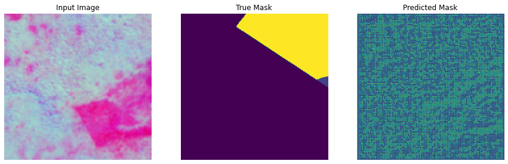
</div>
</div>
<p>Let’s observe how the model improves while it is training. To accomplish this task, a callback function is defined below to plot a validation image and it’s predicted mask after each epoch.</p>
<div class="cell docutils container">
<div class="cell_input docutils container">
<div class="highlight-ipython3 notranslate"><div class="highlight"><pre><span></span><span class="k">class</span> <span class="nc">DisplayCallback</span><span class="p">(</span><span class="n">tf</span><span class="o">.</span><span class="n">keras</span><span class="o">.</span><span class="n">callbacks</span><span class="o">.</span><span class="n">Callback</span><span class="p">):</span>
  <span class="k">def</span> <span class="nf">on_epoch_end</span><span class="p">(</span><span class="bp">self</span><span class="p">,</span> <span class="n">epoch</span><span class="p">,</span> <span class="n">logs</span><span class="o">=</span><span class="kc">None</span><span class="p">):</span>
    <span class="n">clear_output</span><span class="p">(</span><span class="n">wait</span><span class="o">=</span><span class="kc">True</span><span class="p">)</span>
    <span class="n">show_predictions</span><span class="p">()</span>
    <span class="nb">print</span> <span class="p">(</span><span class="s1">&#39;</span><span class="se">\n</span><span class="s1">Sample Prediction after epoch </span><span class="si">{}</span><span class="se">\n</span><span class="s1">&#39;</span><span class="o">.</span><span class="n">format</span><span class="p">(</span><span class="n">epoch</span><span class="o">+</span><span class="mi">1</span><span class="p">))</span>
</pre></div>
</div>
</div>
</div>
<div class="section" id="fit-and-view">
<h3>Fit and View<a class="headerlink" href="#fit-and-view" title="Permalink to this headline">¶</a></h3>
<p>Now we will actually train the model for 100 epochs (full cycles through the training dataset), visualizing predictions on a validation image after each epoch.</p>
<div class="cell docutils container">
<div class="cell_input docutils container">
<div class="highlight-ipython3 notranslate"><div class="highlight"><pre><span></span><span class="n">EPOCHS</span> <span class="o">=</span> <span class="mi">50</span>

<span class="n">model_history</span> <span class="o">=</span> <span class="n">model</span><span class="o">.</span><span class="n">fit</span><span class="p">(</span><span class="n">train_ds</span><span class="p">,</span> 
                   <span class="n">steps_per_epoch</span><span class="o">=</span><span class="nb">int</span><span class="p">(</span><span class="n">np</span><span class="o">.</span><span class="n">ceil</span><span class="p">(</span><span class="n">num_train_examples</span> <span class="o">/</span> <span class="nb">float</span><span class="p">(</span><span class="n">batch_size</span><span class="p">))),</span>
                   <span class="n">epochs</span><span class="o">=</span><span class="n">EPOCHS</span><span class="p">,</span>
                   <span class="n">validation_data</span><span class="o">=</span><span class="n">val_ds</span><span class="p">,</span>
                   <span class="n">validation_steps</span><span class="o">=</span><span class="nb">int</span><span class="p">(</span><span class="n">np</span><span class="o">.</span><span class="n">ceil</span><span class="p">(</span><span class="n">num_val_examples</span> <span class="o">/</span> <span class="nb">float</span><span class="p">(</span><span class="n">batch_size</span><span class="p">))),</span>
                   <span class="n">callbacks</span><span class="o">=</span><span class="p">[</span><span class="n">DisplayCallback</span><span class="p">()])</span> 
</pre></div>
</div>
</div>
<div class="cell_output docutils container">
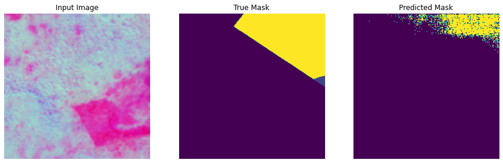
<div class="output stream highlight-myst-ansi notranslate"><div class="highlight"><pre><span></span>Sample Prediction after epoch 50


395/395 [==============================] - 39s 98ms/step - loss: 0.0294 - accuracy: 0.9798 - val_loss: 0.0244 - val_accuracy: 0.9816
</pre></div>
</div>
</div>
</div>
<p>Plot the model’s learning curve over time.</p>
<div class="cell docutils container">
<div class="cell_input docutils container">
<div class="highlight-ipython3 notranslate"><div class="highlight"><pre><span></span><span class="n">loss</span> <span class="o">=</span> <span class="n">model_history</span><span class="o">.</span><span class="n">history</span><span class="p">[</span><span class="s1">&#39;loss&#39;</span><span class="p">]</span>
<span class="n">val_loss</span> <span class="o">=</span> <span class="n">model_history</span><span class="o">.</span><span class="n">history</span><span class="p">[</span><span class="s1">&#39;val_loss&#39;</span><span class="p">]</span>

<span class="n">epochs</span> <span class="o">=</span> <span class="nb">range</span><span class="p">(</span><span class="n">EPOCHS</span><span class="p">)</span>

<span class="n">plt</span><span class="o">.</span><span class="n">figure</span><span class="p">()</span>
<span class="n">plt</span><span class="o">.</span><span class="n">plot</span><span class="p">(</span><span class="n">epochs</span><span class="p">,</span> <span class="n">loss</span><span class="p">,</span> <span class="s1">&#39;r&#39;</span><span class="p">,</span> <span class="n">label</span><span class="o">=</span><span class="s1">&#39;Training loss&#39;</span><span class="p">)</span>
<span class="n">plt</span><span class="o">.</span><span class="n">plot</span><span class="p">(</span><span class="n">epochs</span><span class="p">,</span> <span class="n">val_loss</span><span class="p">,</span> <span class="s1">&#39;bo&#39;</span><span class="p">,</span> <span class="n">label</span><span class="o">=</span><span class="s1">&#39;Validation loss&#39;</span><span class="p">)</span>
<span class="n">plt</span><span class="o">.</span><span class="n">title</span><span class="p">(</span><span class="s1">&#39;Training and Validation Loss&#39;</span><span class="p">)</span>
<span class="n">plt</span><span class="o">.</span><span class="n">xlabel</span><span class="p">(</span><span class="s1">&#39;Epoch&#39;</span><span class="p">)</span>
<span class="n">plt</span><span class="o">.</span><span class="n">ylabel</span><span class="p">(</span><span class="s1">&#39;Loss Value&#39;</span><span class="p">)</span>
<span class="n">plt</span><span class="o">.</span><span class="n">ylim</span><span class="p">([</span><span class="mi">0</span><span class="p">,</span> <span class="mi">1</span><span class="p">])</span>
<span class="n">plt</span><span class="o">.</span><span class="n">legend</span><span class="p">()</span>
<span class="n">plt</span><span class="o">.</span><span class="n">show</span><span class="p">()</span>
</pre></div>
</div>
</div>
<div class="cell_output docutils container">
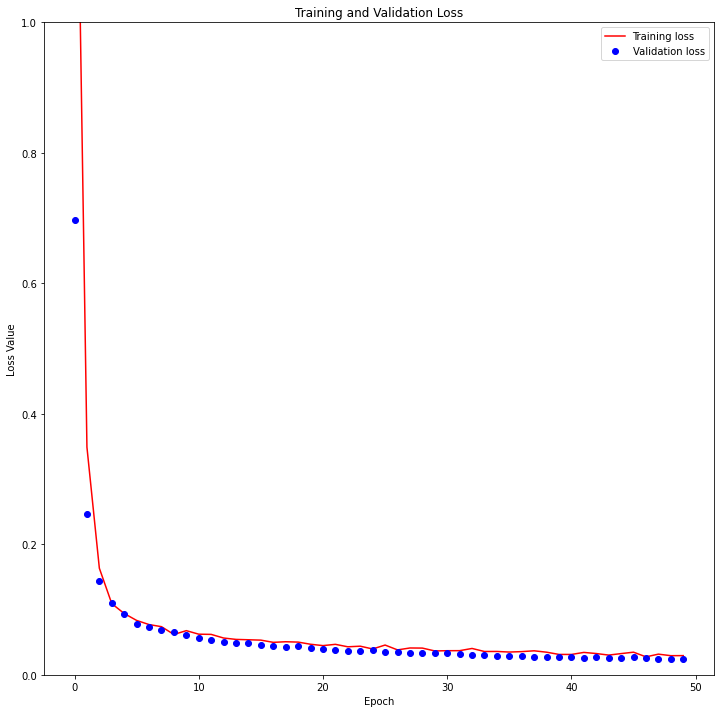
</div>
</div>
</div>
<hr class="docutils" />
<div class="section" id="save-model-to-file">
<h3>Save model to file<a class="headerlink" href="#save-model-to-file" title="Permalink to this headline">¶</a></h3>
<p>We will export the final model weights.</p>
<div class="cell docutils container">
<div class="cell_input docutils container">
<div class="highlight-ipython3 notranslate"><div class="highlight"><pre><span></span><span class="n">save_model_path</span> <span class="o">=</span> <span class="n">os</span><span class="o">.</span><span class="n">path</span><span class="o">.</span><span class="n">join</span><span class="p">(</span><span class="n">personal_dir</span><span class="p">,</span><span class="s1">&#39;indices_model_out_lr00001_batchs8_ep50_nopretrainweights/&#39;</span><span class="p">)</span>
<span class="k">if</span> <span class="p">(</span><span class="ow">not</span> <span class="n">os</span><span class="o">.</span><span class="n">path</span><span class="o">.</span><span class="n">isdir</span><span class="p">(</span><span class="n">save_model_path</span><span class="p">)):</span>
  <span class="n">os</span><span class="o">.</span><span class="n">mkdir</span><span class="p">(</span><span class="n">save_model_path</span><span class="p">)</span>
<span class="n">model</span><span class="o">.</span><span class="n">save</span><span class="p">(</span><span class="n">save_model_path</span><span class="p">)</span>
</pre></div>
</div>
</div>
<div class="cell_output docutils container">
<div class="output stream highlight-myst-ansi notranslate"><div class="highlight"><pre><span></span>INFO:tensorflow:Assets written to: /content/gdrive/My Drive/servir-tf/terrabio/indices_model_out_lr00001_batchs8_ep50_nopretrainweights/assets
</pre></div>
</div>
<div class="output stderr highlight-myst-ansi notranslate"><div class="highlight"><pre><span></span>/usr/local/lib/python3.7/dist-packages/keras/engine/functional.py:1410: CustomMaskWarning: Custom mask layers require a config and must override get_config. When loading, the custom mask layer must be passed to the custom_objects argument.
  layer_config = serialize_layer_fn(layer)
/usr/local/lib/python3.7/dist-packages/keras/saving/saved_model/layer_serialization.py:112: CustomMaskWarning: Custom mask layers require a config and must override get_config. When loading, the custom mask layer must be passed to the custom_objects argument.
  return generic_utils.serialize_keras_object(obj)
</pre></div>
</div>
</div>
</div>
</div>
</div>
<div class="section" id="make-predictions">
<h2>Make predictions<a class="headerlink" href="#make-predictions" title="Permalink to this headline">¶</a></h2>
<p>Let’s make some predictions. In the interest of saving time, the number of epochs was kept small, but you may set this higher to achieve more accurate results.</p>
<div class="cell docutils container">
<div class="cell_input docutils container">
<div class="highlight-ipython3 notranslate"><div class="highlight"><pre><span></span><span class="c1"># Optional, you can load the model from the saved version</span>
<span class="n">load_from_checkpoint</span> <span class="o">=</span> <span class="kc">False</span>
<span class="k">if</span> <span class="n">load_from_checkpoint</span> <span class="o">==</span> <span class="kc">True</span><span class="p">:</span>
  <span class="n">model</span> <span class="o">=</span> <span class="n">tf</span><span class="o">.</span><span class="n">keras</span><span class="o">.</span><span class="n">models</span><span class="o">.</span><span class="n">load_model</span><span class="p">(</span><span class="n">save_model_path</span><span class="p">)</span>
<span class="k">else</span><span class="p">:</span>
  <span class="nb">print</span><span class="p">(</span><span class="s2">&quot;inferencing from in memory model&quot;</span><span class="p">)</span>
</pre></div>
</div>
</div>
<div class="cell_output docutils container">
<div class="output stream highlight-myst-ansi notranslate"><div class="highlight"><pre><span></span>inferencing from in memory model
</pre></div>
</div>
</div>
</div>
<div class="cell docutils container">
<div class="cell_input docutils container">
<div class="highlight-ipython3 notranslate"><div class="highlight"><pre><span></span><span class="k">def</span> <span class="nf">get_predictions</span><span class="p">(</span><span class="n">dataset</span><span class="o">=</span><span class="kc">None</span><span class="p">,</span> <span class="n">num</span><span class="o">=</span><span class="mi">1</span><span class="p">):</span>
  <span class="k">if</span> <span class="n">dataset</span><span class="p">:</span>
    <span class="k">for</span> <span class="n">image</span><span class="p">,</span> <span class="n">mask</span> <span class="ow">in</span> <span class="n">dataset</span><span class="o">.</span><span class="n">take</span><span class="p">(</span><span class="n">num</span><span class="p">):</span>
      <span class="n">pred_mask</span> <span class="o">=</span> <span class="n">model</span><span class="o">.</span><span class="n">predict</span><span class="p">(</span><span class="n">image</span><span class="p">)</span>
      <span class="k">return</span> <span class="n">pred_mask</span>
  <span class="k">else</span><span class="p">:</span>
    <span class="n">pred_mask</span> <span class="o">=</span> <span class="n">create_mask</span><span class="p">(</span><span class="n">model</span><span class="o">.</span><span class="n">predict</span><span class="p">(</span><span class="n">sample_image</span><span class="p">[</span><span class="n">tf</span><span class="o">.</span><span class="n">newaxis</span><span class="p">,</span> <span class="o">...</span><span class="p">]))</span>
    <span class="n">pred_mask</span> <span class="o">=</span> <span class="n">tf</span><span class="o">.</span><span class="n">keras</span><span class="o">.</span><span class="n">backend</span><span class="o">.</span><span class="n">eval</span><span class="p">(</span><span class="n">pred_mask</span><span class="p">)</span>
    <span class="k">return</span> <span class="n">pred_mask</span>
</pre></div>
</div>
</div>
</div>
<div class="section" id="single-image-example">
<h3>Single image example<a class="headerlink" href="#single-image-example" title="Permalink to this headline">¶</a></h3>
<div class="cell docutils container">
<div class="cell_input docutils container">
<div class="highlight-ipython3 notranslate"><div class="highlight"><pre><span></span><span class="n">display_num</span> <span class="o">=</span> <span class="mi">1</span>
<span class="n">r_choices</span> <span class="o">=</span> <span class="n">np</span><span class="o">.</span><span class="n">random</span><span class="o">.</span><span class="n">choice</span><span class="p">(</span><span class="n">num_foreground_examples</span><span class="p">,</span> <span class="mi">1</span><span class="p">)</span>
<span class="k">for</span> <span class="n">i</span> <span class="ow">in</span> <span class="nb">range</span><span class="p">(</span><span class="mi">0</span><span class="p">,</span> <span class="n">display_num</span> <span class="o">*</span> <span class="mi">2</span><span class="p">,</span> <span class="mi">2</span><span class="p">):</span>
  <span class="n">img_num</span> <span class="o">=</span> <span class="n">r_choices</span><span class="p">[</span><span class="n">i</span> <span class="o">//</span> <span class="mi">2</span><span class="p">]</span>

<span class="n">temp_ds</span> <span class="o">=</span> <span class="n">get_baseline_dataset</span><span class="p">(</span><span class="n">foreground_list_x</span><span class="p">[</span><span class="n">img_num</span><span class="p">:</span><span class="n">img_num</span><span class="o">+</span><span class="mi">1</span><span class="p">],</span> 
                               <span class="n">foreground_list_y</span><span class="p">[</span><span class="n">img_num</span><span class="p">:</span><span class="n">img_num</span><span class="o">+</span><span class="mi">1</span><span class="p">],</span>
                               <span class="n">preproc_fn</span><span class="o">=</span><span class="n">test_preprocessing_fn</span><span class="p">,</span>
                               <span class="n">batch_size</span><span class="o">=</span><span class="mi">1</span><span class="p">,</span>
                               <span class="n">shuffle</span><span class="o">=</span><span class="kc">False</span><span class="p">)</span>

<span class="c1"># Let&#39;s examine some of these augmented images</span>

<span class="n">iterator</span> <span class="o">=</span> <span class="nb">iter</span><span class="p">(</span><span class="n">temp_ds</span><span class="p">)</span>
<span class="n">next_element</span> <span class="o">=</span> <span class="n">iterator</span><span class="o">.</span><span class="n">get_next</span><span class="p">()</span>

<span class="n">batch_of_imgs</span><span class="p">,</span> <span class="n">label</span> <span class="o">=</span> <span class="n">next_element</span>

<span class="c1"># Running next element in our graph will produce a batch of images</span>

<span class="n">sample_image</span><span class="p">,</span> <span class="n">sample_mask</span> <span class="o">=</span> <span class="n">batch_of_imgs</span><span class="p">[</span><span class="mi">0</span><span class="p">],</span> <span class="n">label</span><span class="p">[</span><span class="mi">0</span><span class="p">,:,:,:]</span>

<span class="c1"># run and plot predicitions</span>
<span class="n">pred_mask</span> <span class="o">=</span> <span class="n">get_predictions</span><span class="p">()</span>

<span class="n">show_predictions</span><span class="p">()</span>
</pre></div>
</div>
</div>
<div class="cell_output docutils container">
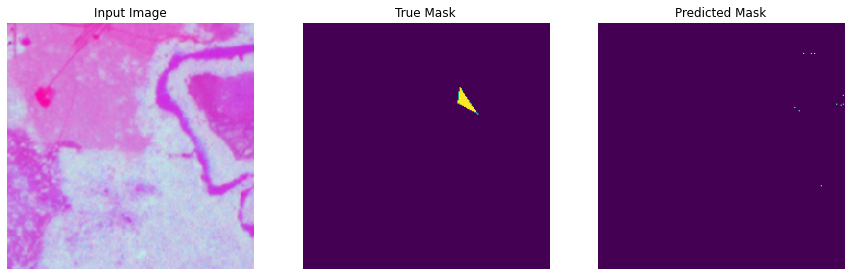
</div>
</div>
</div>
<div class="section" id="multi-image-example">
<h3>Multi image example<a class="headerlink" href="#multi-image-example" title="Permalink to this headline">¶</a></h3>
<div class="cell docutils container">
<div class="cell_input docutils container">
<div class="highlight-ipython3 notranslate"><div class="highlight"><pre><span></span><span class="n">tiled_prediction_dir</span> <span class="o">=</span> <span class="n">os</span><span class="o">.</span><span class="n">path</span><span class="o">.</span><span class="n">join</span><span class="p">(</span><span class="n">personal_dir</span><span class="p">,</span><span class="s1">&#39;predictions_test/&#39;</span><span class="p">)</span>
<span class="k">if</span> <span class="ow">not</span> <span class="n">os</span><span class="o">.</span><span class="n">path</span><span class="o">.</span><span class="n">exists</span><span class="p">(</span><span class="n">tiled_prediction_dir</span><span class="p">):</span>
    <span class="n">os</span><span class="o">.</span><span class="n">makedirs</span><span class="p">(</span><span class="n">tiled_prediction_dir</span><span class="p">)</span>
    
<span class="n">pred_masks</span> <span class="o">=</span> <span class="p">[]</span>
<span class="n">true_masks</span> <span class="o">=</span> <span class="p">[]</span>

<span class="k">for</span> <span class="n">i</span> <span class="ow">in</span> <span class="nb">range</span><span class="p">(</span><span class="mi">0</span><span class="p">,</span> <span class="n">num_foreground_examples</span><span class="p">):</span>
    <span class="n">img_num</span> <span class="o">=</span> <span class="n">i</span>

    <span class="k">try</span><span class="p">:</span>
      <span class="n">temp_ds</span> <span class="o">=</span> <span class="n">get_baseline_dataset</span><span class="p">(</span><span class="n">foreground_list_x</span><span class="p">[</span><span class="n">img_num</span><span class="p">:</span><span class="n">img_num</span><span class="o">+</span><span class="mi">1</span><span class="p">],</span> 
                                   <span class="n">foreground_list_y</span><span class="p">[</span><span class="n">img_num</span><span class="p">:</span><span class="n">img_num</span><span class="o">+</span><span class="mi">1</span><span class="p">],</span>
                                   <span class="n">preproc_fn</span><span class="o">=</span><span class="n">test_preprocessing_fn</span><span class="p">,</span>
                                   <span class="n">batch_size</span><span class="o">=</span><span class="mi">1</span><span class="p">,</span>
                                   <span class="n">shuffle</span><span class="o">=</span><span class="kc">True</span><span class="p">)</span>
    <span class="k">except</span> <span class="ne">Exception</span> <span class="k">as</span> <span class="n">e</span><span class="p">:</span> 
      <span class="nb">print</span><span class="p">(</span><span class="nb">str</span><span class="p">(</span><span class="n">e</span><span class="p">))</span>

    <span class="c1"># Let&#39;s examine some of these augmented images</span>

    <span class="n">iterator</span> <span class="o">=</span> <span class="nb">iter</span><span class="p">(</span><span class="n">temp_ds</span><span class="p">)</span>
    <span class="n">next_element</span> <span class="o">=</span> <span class="n">iterator</span><span class="o">.</span><span class="n">get_next</span><span class="p">()</span>

    <span class="n">batch_of_imgs</span><span class="p">,</span> <span class="n">label</span> <span class="o">=</span> <span class="n">next_element</span>

    <span class="c1"># Running next element in our graph will produce a batch of images</span>

    <span class="n">sample_image</span><span class="p">,</span> <span class="n">sample_mask</span> <span class="o">=</span> <span class="n">batch_of_imgs</span><span class="p">[</span><span class="mi">0</span><span class="p">],</span> <span class="n">label</span><span class="p">[</span><span class="mi">0</span><span class="p">,:,:,:]</span>
    <span class="n">sample_mask_int</span> <span class="o">=</span> <span class="n">tf</span><span class="o">.</span><span class="n">dtypes</span><span class="o">.</span><span class="n">cast</span><span class="p">(</span><span class="n">sample_mask</span><span class="p">,</span> <span class="n">tf</span><span class="o">.</span><span class="n">int32</span><span class="p">)</span>
    <span class="n">true_masks</span><span class="o">.</span><span class="n">append</span><span class="p">(</span><span class="n">sample_mask_int</span><span class="p">)</span>
    <span class="nb">print</span><span class="p">(</span><span class="n">foreground_list_y</span><span class="p">[</span><span class="n">img_num</span><span class="p">:</span><span class="n">img_num</span><span class="o">+</span><span class="mi">1</span><span class="p">])</span>
    <span class="nb">print</span><span class="p">(</span><span class="n">np</span><span class="o">.</span><span class="n">unique</span><span class="p">(</span><span class="n">sample_mask_int</span><span class="p">))</span>

    <span class="c1"># run and plot predicitions</span>

    <span class="n">show_predictions</span><span class="p">()</span>
    <span class="n">pred_mask</span> <span class="o">=</span> <span class="n">get_predictions</span><span class="p">()</span>
    <span class="n">pred_masks</span><span class="o">.</span><span class="n">append</span><span class="p">(</span><span class="n">pred_mask</span><span class="p">)</span>
    
    <span class="c1"># save prediction images to file</span>

    <span class="n">filename_split</span> <span class="o">=</span> <span class="n">os</span><span class="o">.</span><span class="n">path</span><span class="o">.</span><span class="n">splitext</span><span class="p">(</span><span class="n">foreground_list_x</span><span class="p">[</span><span class="n">img_num</span><span class="p">])</span> 
    <span class="n">filename_zero</span><span class="p">,</span> <span class="n">fileext</span> <span class="o">=</span> <span class="n">filename_split</span> 
    <span class="n">basename</span> <span class="o">=</span> <span class="n">os</span><span class="o">.</span><span class="n">path</span><span class="o">.</span><span class="n">basename</span><span class="p">(</span><span class="n">filename_zero</span><span class="p">)</span> 
    <span class="n">tf</span><span class="o">.</span><span class="n">keras</span><span class="o">.</span><span class="n">preprocessing</span><span class="o">.</span><span class="n">image</span><span class="o">.</span><span class="n">save_img</span><span class="p">(</span><span class="n">tiled_prediction_dir</span><span class="o">+</span><span class="s1">&#39;/&#39;</span><span class="o">+</span><span class="n">basename</span><span class="o">+</span><span class="s2">&quot;.png&quot;</span><span class="p">,</span><span class="n">pred_mask</span><span class="p">)</span>    
</pre></div>
</div>
</div>
<div class="cell_output docutils container">
<div class="output stream highlight-myst-ansi notranslate"><div class="highlight"><pre><span></span>[&#39;./tiled/labels/tile_terrabio_21138.png&#39;]
[0 2 5 6 7]
</pre></div>
</div>

<div class="output stream highlight-myst-ansi notranslate"><div class="highlight"><pre><span></span>[&#39;./tiled/labels/tile_terrabio_21426.png&#39;]
[0 5]
</pre></div>
</div>
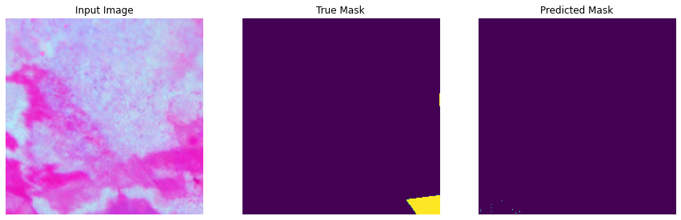
<div class="output stream highlight-myst-ansi notranslate"><div class="highlight"><pre><span></span>[&#39;./tiled/labels/tile_terrabio_15673.png&#39;]
[0 2 5]
</pre></div>
</div>
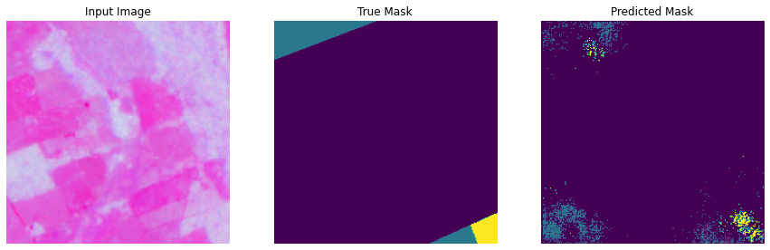
<div class="output stream highlight-myst-ansi notranslate"><div class="highlight"><pre><span></span>[&#39;./tiled/labels/tile_terrabio_32990.png&#39;]
[0 5]
</pre></div>
</div>
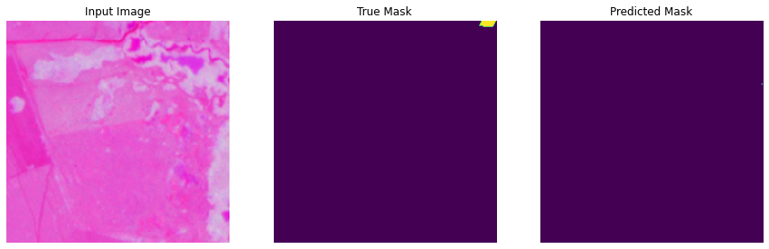
<div class="output stream highlight-myst-ansi notranslate"><div class="highlight"><pre><span></span>[&#39;./tiled/labels/tile_terrabio_15379.png&#39;]
[0 2]
</pre></div>
</div>
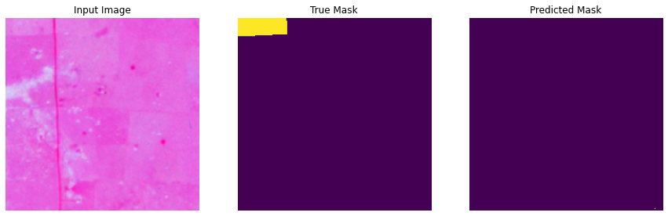
<div class="output stream highlight-myst-ansi notranslate"><div class="highlight"><pre><span></span>[&#39;./tiled/labels/tile_terrabio_10608.png&#39;]
[0 7]
</pre></div>
</div>
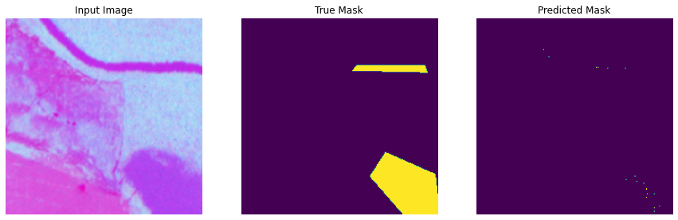
<div class="output stream highlight-myst-ansi notranslate"><div class="highlight"><pre><span></span>[&#39;./tiled/labels/tile_terrabio_20090.png&#39;]
[0 1 5]
</pre></div>
</div>

<div class="output stream highlight-myst-ansi notranslate"><div class="highlight"><pre><span></span>[&#39;./tiled/labels/tile_terrabio_15110.png&#39;]
[0 1 2 5]
</pre></div>
</div>
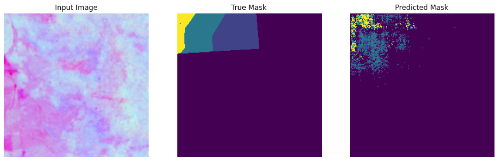
<div class="output stream highlight-myst-ansi notranslate"><div class="highlight"><pre><span></span>[&#39;./tiled/labels/tile_terrabio_19112.png&#39;]
[0 6]
</pre></div>
</div>
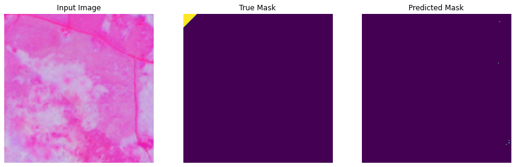
<div class="output stream highlight-myst-ansi notranslate"><div class="highlight"><pre><span></span>[&#39;./tiled/labels/tile_terrabio_23053.png&#39;]
[0 2 3 5 6]
</pre></div>
</div>
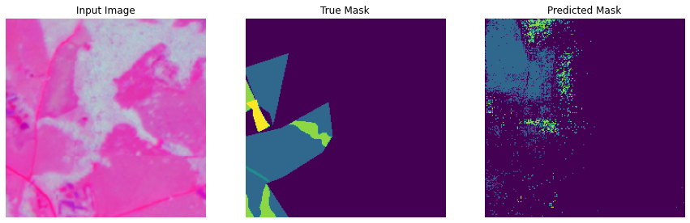
<div class="output stream highlight-myst-ansi notranslate"><div class="highlight"><pre><span></span>[&#39;./tiled/labels/tile_terrabio_20959.png&#39;]
[0 2]
</pre></div>
</div>
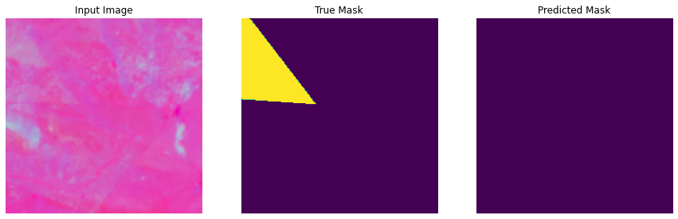
<div class="output stream highlight-myst-ansi notranslate"><div class="highlight"><pre><span></span>[&#39;./tiled/labels/tile_terrabio_31280.png&#39;]
[0 5]
</pre></div>
</div>
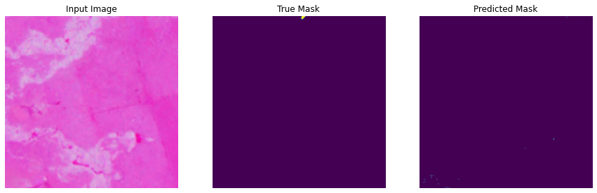
<div class="output stream highlight-myst-ansi notranslate"><div class="highlight"><pre><span></span>[&#39;./tiled/labels/tile_terrabio_21393.png&#39;]
[0 2 5 6]
</pre></div>
</div>
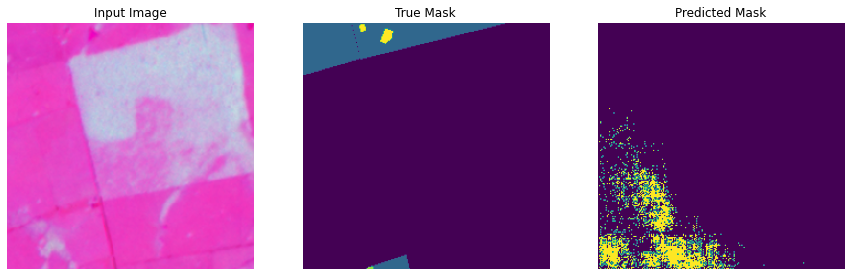
<div class="output stream highlight-myst-ansi notranslate"><div class="highlight"><pre><span></span>[&#39;./tiled/labels/tile_terrabio_8358.png&#39;]
[0 7]
</pre></div>
</div>

<div class="output stream highlight-myst-ansi notranslate"><div class="highlight"><pre><span></span>[&#39;./tiled/labels/tile_terrabio_32988.png&#39;]
[0 5]
</pre></div>
</div>
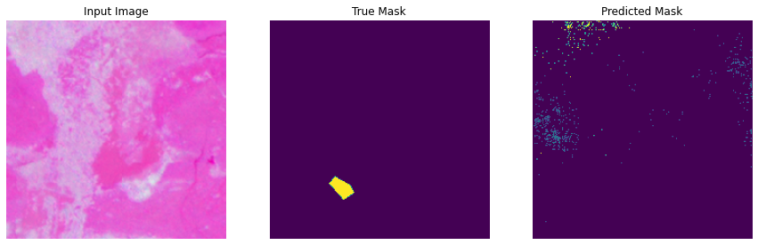
<div class="output stream highlight-myst-ansi notranslate"><div class="highlight"><pre><span></span>[&#39;./tiled/labels/tile_terrabio_17162.png&#39;]
[0 2 5]
</pre></div>
</div>
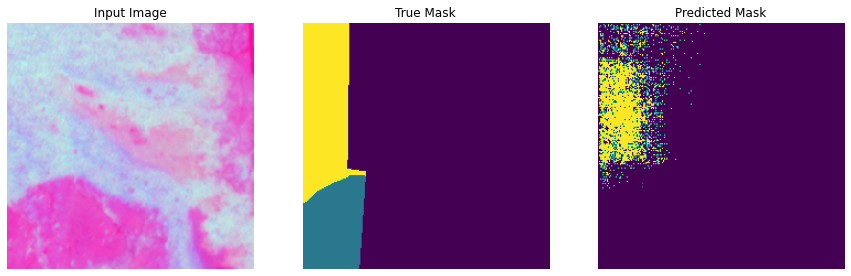
<div class="output stream highlight-myst-ansi notranslate"><div class="highlight"><pre><span></span>[&#39;./tiled/labels/tile_terrabio_21140.png&#39;]
[0 2 5]
</pre></div>
</div>
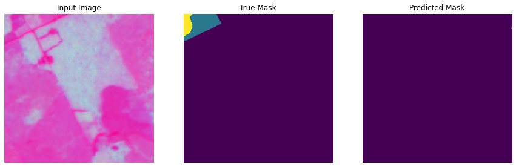
<div class="output stream highlight-myst-ansi notranslate"><div class="highlight"><pre><span></span>[&#39;./tiled/labels/tile_terrabio_35845.png&#39;]
[0 6]
</pre></div>
</div>
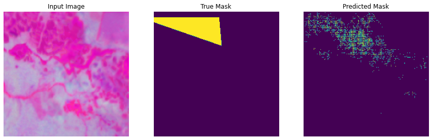
<div class="output stream highlight-myst-ansi notranslate"><div class="highlight"><pre><span></span>[&#39;./tiled/labels/tile_terrabio_14904.png&#39;]
[0 2 5 6]
</pre></div>
</div>
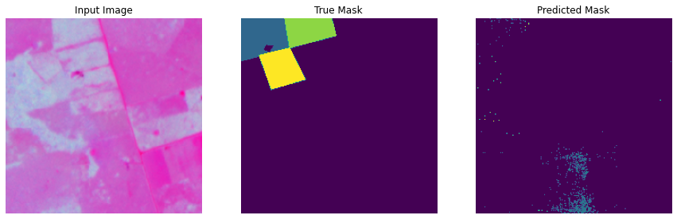
<div class="output stream highlight-myst-ansi notranslate"><div class="highlight"><pre><span></span>[&#39;./tiled/labels/tile_terrabio_18212.png&#39;]
[0 6]
</pre></div>
</div>
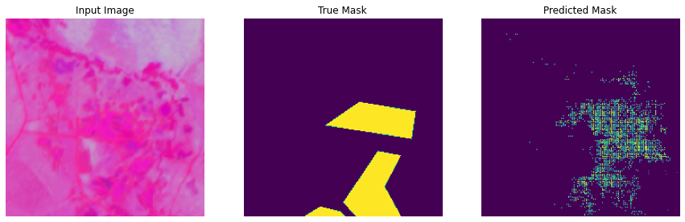
<div class="output stream highlight-myst-ansi notranslate"><div class="highlight"><pre><span></span>[&#39;./tiled/labels/tile_terrabio_20660.png&#39;]
[0 5 7]
</pre></div>
</div>
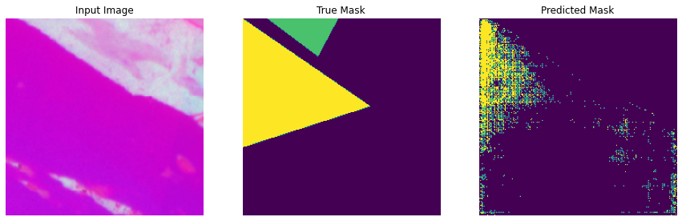
<div class="output stream highlight-myst-ansi notranslate"><div class="highlight"><pre><span></span>[&#39;./tiled/labels/tile_terrabio_13560.png&#39;]
[0 7]
</pre></div>
</div>
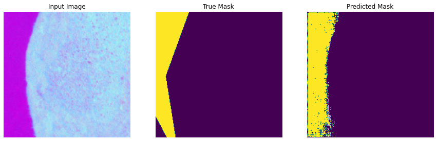
<div class="output stream highlight-myst-ansi notranslate"><div class="highlight"><pre><span></span>[&#39;./tiled/labels/tile_terrabio_23200.png&#39;]
[0 2 3 5 6 8]
</pre></div>
</div>
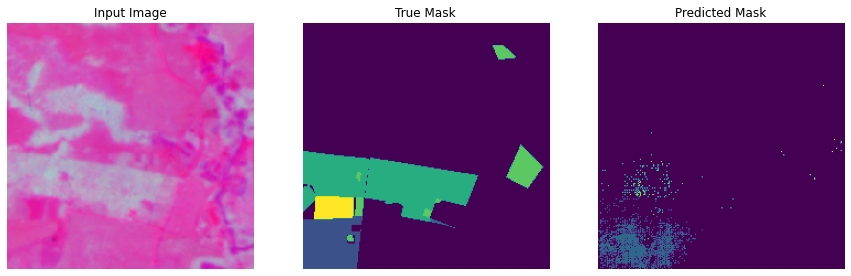
<div class="output stream highlight-myst-ansi notranslate"><div class="highlight"><pre><span></span>[&#39;./tiled/labels/tile_terrabio_15078.png&#39;]
[0 5]
</pre></div>
</div>
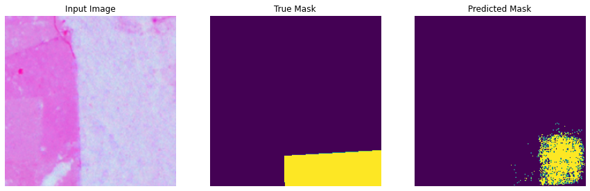
<div class="output stream highlight-myst-ansi notranslate"><div class="highlight"><pre><span></span>[&#39;./tiled/labels/tile_terrabio_22032.png&#39;]
[0 7]
</pre></div>
</div>
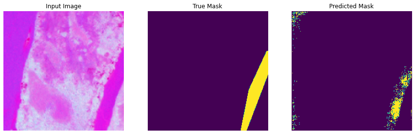
<div class="output stream highlight-myst-ansi notranslate"><div class="highlight"><pre><span></span>[&#39;./tiled/labels/tile_terrabio_32381.png&#39;]
[0 1 4]
</pre></div>
</div>
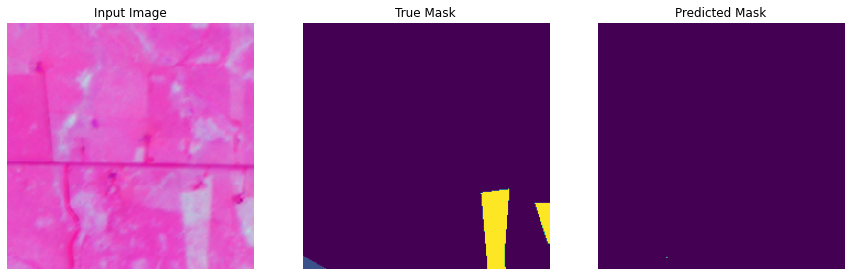
<div class="output stream highlight-myst-ansi notranslate"><div class="highlight"><pre><span></span>[&#39;./tiled/labels/tile_terrabio_24852.png&#39;]
[0 2 5]
</pre></div>
</div>
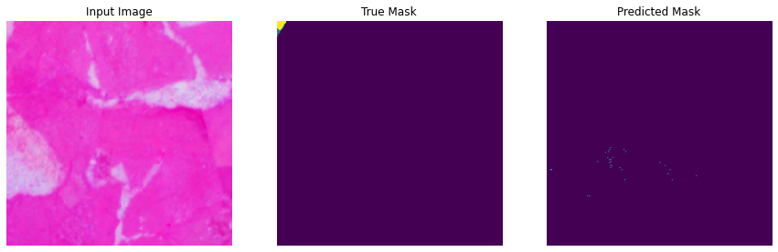
<div class="output stream highlight-myst-ansi notranslate"><div class="highlight"><pre><span></span>[&#39;./tiled/labels/tile_terrabio_6242.png&#39;]
[0 5]
</pre></div>
</div>
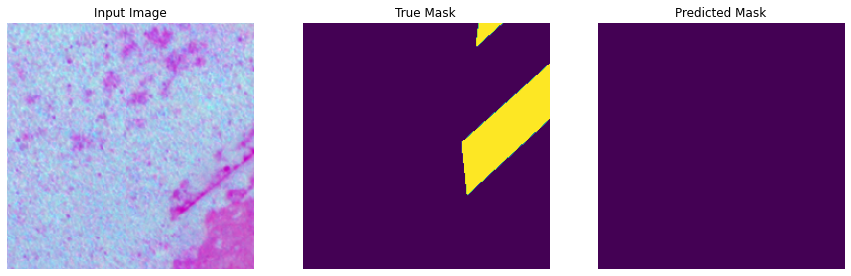
<div class="output stream highlight-myst-ansi notranslate"><div class="highlight"><pre><span></span>[&#39;./tiled/labels/tile_terrabio_28141.png&#39;]
[0 2]
</pre></div>
</div>
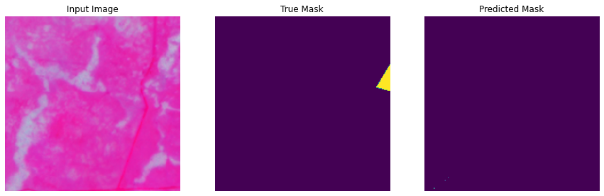
<div class="output stream highlight-myst-ansi notranslate"><div class="highlight"><pre><span></span>[&#39;./tiled/labels/tile_terrabio_23057.png&#39;]
[0 2]
</pre></div>
</div>
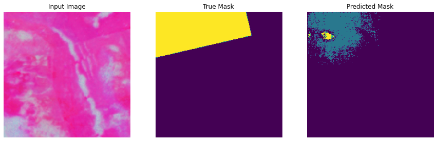
<div class="output stream highlight-myst-ansi notranslate"><div class="highlight"><pre><span></span>[&#39;./tiled/labels/tile_terrabio_17507.png&#39;]
[0 7]
</pre></div>
</div>
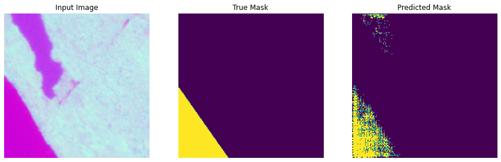
<div class="output stream highlight-myst-ansi notranslate"><div class="highlight"><pre><span></span>[&#39;./tiled/labels/tile_terrabio_20365.png&#39;]
[0 2 5 6]
</pre></div>
</div>
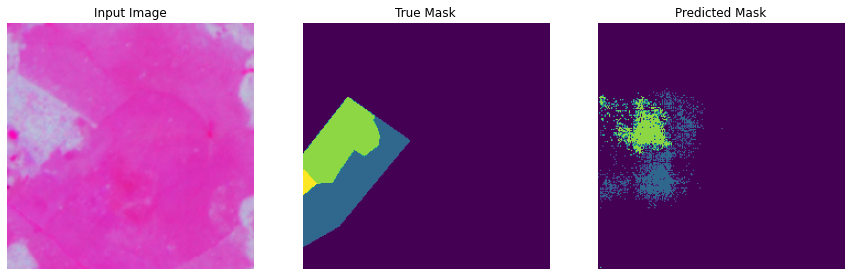
<div class="output stream highlight-myst-ansi notranslate"><div class="highlight"><pre><span></span>[&#39;./tiled/labels/tile_terrabio_32844.png&#39;]
[0 5 7]
</pre></div>
</div>
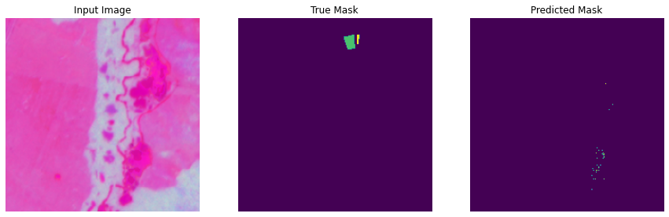
<div class="output stream highlight-myst-ansi notranslate"><div class="highlight"><pre><span></span>[&#39;./tiled/labels/tile_terrabio_18206.png&#39;]
[0 5]
</pre></div>
</div>
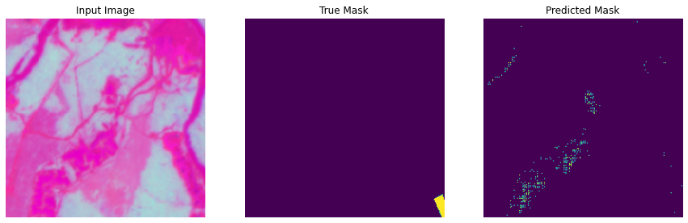
</div>
</div>
</div>
</div>
<div class="section" id="evaluate-model">
<h2>Evaluate Model<a class="headerlink" href="#evaluate-model" title="Permalink to this headline">¶</a></h2>
<p>Compute confusion matrix from all predicted images and their ground truth label masks.</p>
<div class="cell docutils container">
<div class="cell_input docutils container">
<div class="highlight-ipython3 notranslate"><div class="highlight"><pre><span></span><span class="c1"># flatten our tensors and use scikit-learn to create a confusion matrix</span>
<span class="n">flat_preds</span> <span class="o">=</span> <span class="n">tf</span><span class="o">.</span><span class="n">reshape</span><span class="p">(</span><span class="n">pred_masks</span><span class="p">,</span> <span class="p">[</span><span class="o">-</span><span class="mi">1</span><span class="p">])</span> 
<span class="n">flat_truth</span> <span class="o">=</span> <span class="n">tf</span><span class="o">.</span><span class="n">reshape</span><span class="p">(</span><span class="n">true_masks</span><span class="p">,</span> <span class="p">[</span><span class="o">-</span><span class="mi">1</span><span class="p">])</span> 
<span class="n">cm</span> <span class="o">=</span> <span class="n">confusion_matrix</span><span class="p">(</span><span class="n">flat_truth</span><span class="p">,</span> <span class="n">flat_preds</span><span class="p">,</span> <span class="n">labels</span><span class="o">=</span><span class="nb">list</span><span class="p">(</span><span class="nb">range</span><span class="p">(</span><span class="n">OUTPUT_CHANNELS</span><span class="p">)))</span>
</pre></div>
</div>
</div>
</div>
<div class="cell docutils container">
<div class="cell_input docutils container">
<div class="highlight-ipython3 notranslate"><div class="highlight"><pre><span></span><span class="c1"># check values in predicted masks vs truth masks</span>
<span class="n">check_preds</span> <span class="o">=</span> <span class="n">tf</span><span class="o">.</span><span class="n">keras</span><span class="o">.</span><span class="n">backend</span><span class="o">.</span><span class="n">eval</span><span class="p">(</span><span class="n">flat_preds</span><span class="p">)</span>
<span class="n">check_truths</span> <span class="o">=</span> <span class="n">tf</span><span class="o">.</span><span class="n">keras</span><span class="o">.</span><span class="n">backend</span><span class="o">.</span><span class="n">eval</span><span class="p">(</span><span class="n">flat_truth</span><span class="p">)</span>
<span class="nb">print</span><span class="p">(</span><span class="n">np</span><span class="o">.</span><span class="n">unique</span><span class="p">(</span><span class="n">check_preds</span><span class="p">),</span> <span class="n">np</span><span class="o">.</span><span class="n">unique</span><span class="p">(</span><span class="n">check_truths</span><span class="p">))</span>
</pre></div>
</div>
</div>
<div class="cell_output docutils container">
<div class="output stream highlight-myst-ansi notranslate"><div class="highlight"><pre><span></span>[0 1 2 5 6 7] [0 1 2 3 4 5 6 7 8]
</pre></div>
</div>
</div>
</div>
<div class="cell docutils container">
<div class="cell_input docutils container">
<div class="highlight-ipython3 notranslate"><div class="highlight"><pre><span></span><span class="n">class_names</span>
</pre></div>
</div>
</div>
</div>
<div class="cell docutils container">
<div class="cell_input docutils container">
<div class="highlight-ipython3 notranslate"><div class="highlight"><pre><span></span><span class="n">classes</span> <span class="o">=</span> <span class="p">[</span><span class="mi">0</span><span class="p">,</span><span class="mi">1</span><span class="p">,</span><span class="mi">2</span><span class="p">,</span><span class="mi">3</span><span class="p">,</span><span class="mi">4</span><span class="p">,</span><span class="mi">5</span><span class="p">,</span><span class="mi">6</span><span class="p">,</span><span class="mi">7</span><span class="p">,</span><span class="mi">8</span><span class="p">]</span>

<span class="o">%</span><span class="k">matplotlib</span> inline
<span class="n">cm</span> <span class="o">=</span> <span class="n">cm</span><span class="o">.</span><span class="n">astype</span><span class="p">(</span><span class="s1">&#39;float&#39;</span><span class="p">)</span> <span class="o">/</span> <span class="n">cm</span><span class="o">.</span><span class="n">sum</span><span class="p">(</span><span class="n">axis</span><span class="o">=</span><span class="mi">1</span><span class="p">)[:,</span> <span class="n">np</span><span class="o">.</span><span class="n">newaxis</span><span class="p">]</span>
<span class="n">fig</span><span class="p">,</span> <span class="n">ax</span> <span class="o">=</span> <span class="n">plt</span><span class="o">.</span><span class="n">subplots</span><span class="p">(</span><span class="n">figsize</span><span class="o">=</span><span class="p">(</span><span class="mi">10</span><span class="p">,</span> <span class="mi">10</span><span class="p">))</span>
<span class="n">im</span> <span class="o">=</span> <span class="n">ax</span><span class="o">.</span><span class="n">imshow</span><span class="p">(</span><span class="n">cm</span><span class="p">,</span> <span class="n">interpolation</span><span class="o">=</span><span class="s1">&#39;nearest&#39;</span><span class="p">,</span> <span class="n">cmap</span><span class="o">=</span><span class="n">plt</span><span class="o">.</span><span class="n">cm</span><span class="o">.</span><span class="n">Blues</span><span class="p">)</span>
<span class="n">ax</span><span class="o">.</span><span class="n">figure</span><span class="o">.</span><span class="n">colorbar</span><span class="p">(</span><span class="n">im</span><span class="p">,</span> <span class="n">ax</span><span class="o">=</span><span class="n">ax</span><span class="p">)</span>
<span class="c1"># We want to show all ticks...</span>
<span class="n">ax</span><span class="o">.</span><span class="n">set</span><span class="p">(</span><span class="n">xticks</span><span class="o">=</span><span class="n">np</span><span class="o">.</span><span class="n">arange</span><span class="p">(</span><span class="n">cm</span><span class="o">.</span><span class="n">shape</span><span class="p">[</span><span class="mi">1</span><span class="p">]),</span>
       <span class="n">yticks</span><span class="o">=</span><span class="n">np</span><span class="o">.</span><span class="n">arange</span><span class="p">(</span><span class="n">cm</span><span class="o">.</span><span class="n">shape</span><span class="p">[</span><span class="mi">0</span><span class="p">]),</span>
       <span class="c1"># ... and label them with the respective list entries</span>
       <span class="n">xticklabels</span><span class="o">=</span><span class="nb">list</span><span class="p">(</span><span class="nb">range</span><span class="p">(</span><span class="n">OUTPUT_CHANNELS</span><span class="p">)),</span> <span class="n">yticklabels</span><span class="o">=</span><span class="nb">list</span><span class="p">(</span><span class="nb">range</span><span class="p">(</span><span class="n">OUTPUT_CHANNELS</span><span class="p">)),</span>
       <span class="n">title</span><span class="o">=</span><span class="s1">&#39;Normalized Confusion Matrix&#39;</span><span class="p">,</span>
       <span class="n">ylabel</span><span class="o">=</span><span class="s1">&#39;True label&#39;</span><span class="p">,</span>
       <span class="n">xlabel</span><span class="o">=</span><span class="s1">&#39;Predicted label&#39;</span><span class="p">)</span>

<span class="c1"># Rotate the tick labels and set their alignment.</span>
<span class="n">plt</span><span class="o">.</span><span class="n">setp</span><span class="p">(</span><span class="n">ax</span><span class="o">.</span><span class="n">get_xticklabels</span><span class="p">(),</span> <span class="n">rotation</span><span class="o">=</span><span class="mi">45</span><span class="p">,</span> <span class="n">ha</span><span class="o">=</span><span class="s2">&quot;right&quot;</span><span class="p">,</span>
         <span class="n">rotation_mode</span><span class="o">=</span><span class="s2">&quot;anchor&quot;</span><span class="p">)</span>

<span class="c1"># Loop over data dimensions and create text annotations.</span>
<span class="n">fmt</span> <span class="o">=</span> <span class="s1">&#39;.2f&#39;</span> <span class="c1">#&#39;d&#39; # if normalize else &#39;d&#39;</span>
<span class="n">thresh</span> <span class="o">=</span> <span class="n">cm</span><span class="o">.</span><span class="n">max</span><span class="p">()</span> <span class="o">/</span> <span class="mf">2.</span>
<span class="k">for</span> <span class="n">i</span> <span class="ow">in</span> <span class="nb">range</span><span class="p">(</span><span class="n">cm</span><span class="o">.</span><span class="n">shape</span><span class="p">[</span><span class="mi">0</span><span class="p">]):</span>
    <span class="k">for</span> <span class="n">j</span> <span class="ow">in</span> <span class="nb">range</span><span class="p">(</span><span class="n">cm</span><span class="o">.</span><span class="n">shape</span><span class="p">[</span><span class="mi">1</span><span class="p">]):</span>
        <span class="n">ax</span><span class="o">.</span><span class="n">text</span><span class="p">(</span><span class="n">j</span><span class="p">,</span> <span class="n">i</span><span class="p">,</span> <span class="nb">format</span><span class="p">(</span><span class="n">cm</span><span class="p">[</span><span class="n">i</span><span class="p">,</span> <span class="n">j</span><span class="p">],</span> <span class="n">fmt</span><span class="p">),</span>
                <span class="n">ha</span><span class="o">=</span><span class="s2">&quot;center&quot;</span><span class="p">,</span> <span class="n">va</span><span class="o">=</span><span class="s2">&quot;center&quot;</span><span class="p">,</span>
                <span class="n">color</span><span class="o">=</span><span class="s2">&quot;white&quot;</span> <span class="k">if</span> <span class="n">cm</span><span class="p">[</span><span class="n">i</span><span class="p">,</span> <span class="n">j</span><span class="p">]</span> <span class="o">&gt;</span> <span class="n">thresh</span> <span class="k">else</span> <span class="s2">&quot;black&quot;</span><span class="p">)</span>
<span class="n">fig</span><span class="o">.</span><span class="n">tight_layout</span><span class="p">(</span><span class="n">pad</span><span class="o">=</span><span class="mf">2.0</span><span class="p">,</span> <span class="n">h_pad</span><span class="o">=</span><span class="mf">2.0</span><span class="p">,</span> <span class="n">w_pad</span><span class="o">=</span><span class="mf">2.0</span><span class="p">)</span>
<span class="n">ax</span><span class="o">.</span><span class="n">set_ylim</span><span class="p">(</span><span class="nb">len</span><span class="p">(</span><span class="n">classes</span><span class="p">)</span><span class="o">-</span><span class="mf">0.5</span><span class="p">,</span> <span class="o">-</span><span class="mf">0.5</span><span class="p">)</span>
</pre></div>
</div>
</div>
<div class="cell_output docutils container">
<div class="output text_plain highlight-myst-ansi notranslate"><div class="highlight"><pre><span></span>(8.5, -0.5)
</pre></div>
</div>
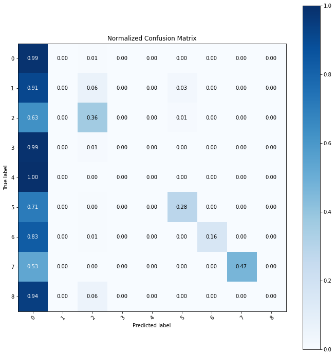
</div>
</div>
<p>Now let’s compute the f1 score</p>
<p>F1 = 2 * (precision * recall) / (precision + recall)</p>
<div class="cell docutils container">
<div class="cell_input docutils container">
<div class="highlight-ipython3 notranslate"><div class="highlight"><pre><span></span><span class="c1"># compute f1 score</span>
<span class="n">f1_score</span><span class="p">(</span><span class="n">flat_truth</span><span class="p">,</span> <span class="n">flat_preds</span><span class="p">,</span> <span class="n">average</span><span class="o">=</span><span class="s1">&#39;macro&#39;</span><span class="p">)</span>
</pre></div>
</div>
</div>
<div class="cell_output docutils container">
<div class="output text_plain highlight-myst-ansi notranslate"><div class="highlight"><pre><span></span>0.295876634094887
</pre></div>
</div>
</div>
</div>
</div>
</div>

    <script type="text/x-thebe-config">
    {
        requestKernel: true,
        binderOptions: {
            repo: "binder-examples/jupyter-stacks-datascience",
            ref: "master",
        },
        codeMirrorConfig: {
            theme: "abcdef",
            mode: "python"
        },
        kernelOptions: {
            kernelName: "python3",
            path: "./docs"
        },
        predefinedOutput: true
    }
    </script>
    <script>kernelName = 'python3'</script>

              </div>
              
        
            


<div class='prev-next-bottom'>
    
    <div id="prev">
        <a class="left-prev" href="intro.html" title="previous page">
            <i class="prevnext-label fas fa-angle-left"></i>
            <div class="prevnext-info">
                <p class="prevnext-label">previous</p>
                <p class="prevnext-title">Introduction</p>
            </div>
        </a>
    </div>
     <div id="next">
        <a class="right-next" href="conclusion.html" title="next page">
            <div class="prevnext-info">
                <p class="prevnext-label">next</p>
                <p class="prevnext-title">Concluding remarks</p>
            </div>
            <i class="prevnext-label fas fa-angle-right"></i>
        </a>
     </div>

</div>
        
        </div>
    </div>
    <footer class="footer">
    <div class="container">
      <p>
        
          By Development Seed<br/>
        
      </p>
    </div>
  </footer>
</main>


      </div>
    </div>
  
  <script src="../_static/js/index.1c5a1a01449ed65a7b51.js"></script>

  
  </body>
</html>